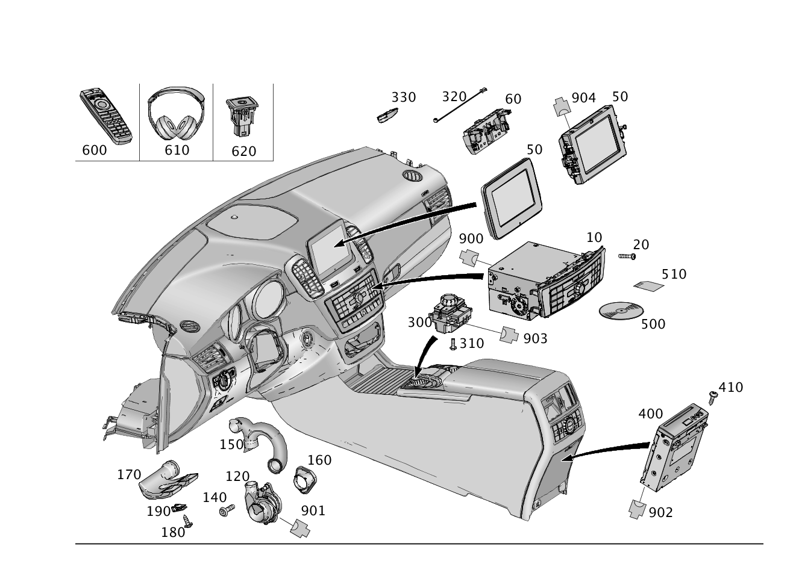

| № | Артикул | Название | Кол. | Примечание | Ограничение |
|---|---|---|---|---|---|
| 10 | A 166 900 24 03 | Блок управления | 1 | ПАНЕЛЬ УПРАВЛ. [672] ДЕТАЛЬ ПОСЛЕ УСТАН.ПРОВЕРИТЬ НА АКТУАЛЬНОСТЬ "ПРОШИВНОГО" ПО [697] ДЕТАЛЬ ПОСТАВЛЯЕТСЯ ТОЛЬКО/ИЛИ ТАКЖЕ КАК ЗАП.ЧАСТЬ | 523+802 |
| 10 | A 166 900 31 07 | Блок управления (STEUERGERAET) | 1 | ПАНЕЛЬ УПРАВЛ. [672] ДЕТАЛЬ ПОСЛЕ УСТАН.ПРОВЕРИТЬ НА АКТУАЛЬНОСТЬ "ПРОШИВНОГО" ПО [697] ДЕТАЛЬ ПОСТАВЛЯЕТСЯ ТОЛЬКО/ИЛИ ТАКЖЕ КАК ЗАП.ЧАСТЬ | 523+802 |
| 10 | A 166 900 69 03 | Блок управления | 1 | ПАНЕЛЬ УПРАВЛ.; HU [672] ДЕТАЛЬ ПОСЛЕ УСТАН.ПРОВЕРИТЬ НА АКТУАЛЬНОСТЬ "ПРОШИВНОГО" ПО [697] ДЕТАЛЬ ПОСТАВЛЯЕТСЯ ТОЛЬКО/ИЛИ ТАКЖЕ КАК ЗАП.ЧАСТЬ | 527+802 |
| 10 | A 166 900 98 03 | Блок управления | 1 | ПАНЕЛЬ УПРАВЛ. [672] ДЕТАЛЬ ПОСЛЕ УСТАН.ПРОВЕРИТЬ НА АКТУАЛЬНОСТЬ "ПРОШИВНОГО" ПО [697] ДЕТАЛЬ ПОСТАВЛЯЕТСЯ ТОЛЬКО/ИЛИ ТАКЖЕ КАК ЗАП.ЧАСТЬ | 527+802 |
| 10 | A 166 900 65 05 | Блок управления | 1 | ПАНЕЛЬ УПРАВЛ. [672] ДЕТАЛЬ ПОСЛЕ УСТАН.ПРОВЕРИТЬ НА АКТУАЛЬНОСТЬ "ПРОШИВНОГО" ПО [697] ДЕТАЛЬ ПОСТАВЛЯЕТСЯ ТОЛЬКО/ИЛИ ТАКЖЕ КАК ЗАП.ЧАСТЬ | 527+802 |
| 10 | A 166 900 10 06 | Блок управления | 1 | ПАНЕЛЬ УПРАВЛ. [672] ДЕТАЛЬ ПОСЛЕ УСТАН.ПРОВЕРИТЬ НА АКТУАЛЬНОСТЬ "ПРОШИВНОГО" ПО [697] ДЕТАЛЬ ПОСТАВЛЯЕТСЯ ТОЛЬКО/ИЛИ ТАКЖЕ КАК ЗАП.ЧАСТЬ | 527+802 |
| 10 | A 166 900 43 01 | Блок управления | 1 | ПАНЕЛЬ УПРАВЛ. [672] ДЕТАЛЬ ПОСЛЕ УСТАН.ПРОВЕРИТЬ НА АКТУАЛЬНОСТЬ "ПРОШИВНОГО" ПО [697] ДЕТАЛЬ ПОСТАВЛЯЕТСЯ ТОЛЬКО/ИЛИ ТАКЖЕ КАК ЗАП.ЧАСТЬ | 527+803 |
| 10 | A 166 900 19 06 | Блок управления | 1 | ПАНЕЛЬ УПРАВЛ. [672] ДЕТАЛЬ ПОСЛЕ УСТАН.ПРОВЕРИТЬ НА АКТУАЛЬНОСТЬ "ПРОШИВНОГО" ПО [697] ДЕТАЛЬ ПОСТАВЛЯЕТСЯ ТОЛЬКО/ИЛИ ТАКЖЕ КАК ЗАП.ЧАСТЬ | 527+803 |
| 10 | A 166 900 24 07 | Блок управления | 1 | ПАНЕЛЬ УПРАВЛ. [672] ДЕТАЛЬ ПОСЛЕ УСТАН.ПРОВЕРИТЬ НА АКТУАЛЬНОСТЬ "ПРОШИВНОГО" ПО [697] ДЕТАЛЬ ПОСТАВЛЯЕТСЯ ТОЛЬКО/ИЛИ ТАКЖЕ КАК ЗАП.ЧАСТЬ | 527+803 |
| 10 | A 166 900 69 07 | Блок управления (STEUERGERAET) | 1 | ПАНЕЛЬ УПРАВЛ. [672] ДЕТАЛЬ ПОСЛЕ УСТАН.ПРОВЕРИТЬ НА АКТУАЛЬНОСТЬ "ПРОШИВНОГО" ПО [697] ДЕТАЛЬ ПОСТАВЛЯЕТСЯ ТОЛЬКО/ИЛИ ТАКЖЕ КАК ЗАП.ЧАСТЬ | 527+803 |
| 10 | A 166 900 54 08 | Блок управления (STEUERGERAET) | 1 | ПАНЕЛЬ УПРАВЛ. [672] ДЕТАЛЬ ПОСЛЕ УСТАН.ПРОВЕРИТЬ НА АКТУАЛЬНОСТЬ "ПРОШИВНОГО" ПО [697] ДЕТАЛЬ ПОСТАВЛЯЕТСЯ ТОЛЬКО/ИЛИ ТАКЖЕ КАК ЗАП.ЧАСТЬ | 527+803 |
| 10 | A 166 900 98 08 | Блок управления | 1 | ПАНЕЛЬ УПРАВЛ. [672] ДЕТАЛЬ ПОСЛЕ УСТАН.ПРОВЕРИТЬ НА АКТУАЛЬНОСТЬ "ПРОШИВНОГО" ПО [697] ДЕТАЛЬ ПОСТАВЛЯЕТСЯ ТОЛЬКО/ИЛИ ТАКЖЕ КАК ЗАП.ЧАСТЬ | 527+803 |
| 10 | A 166 900 49 11 | Блок управления (STEUERGERAET) | 1 | ПАНЕЛЬ УПРАВЛ. [672] ДЕТАЛЬ ПОСЛЕ УСТАН.ПРОВЕРИТЬ НА АКТУАЛЬНОСТЬ "ПРОШИВНОГО" ПО [697] ДЕТАЛЬ ПОСТАВЛЯЕТСЯ ТОЛЬКО/ИЛИ ТАКЖЕ КАК ЗАП.ЧАСТЬ [402] БОЛЬШЕ НЕ ПОСТАВЛЯЕТСЯ | 527+803 |
| 10 | A 166 900 49 11 | Блок управления (STEUERGERAET) | 1 | ПАНЕЛЬ УПРАВЛ. [672] ДЕТАЛЬ ПОСЛЕ УСТАН.ПРОВЕРИТЬ НА АКТУАЛЬНОСТЬ "ПРОШИВНОГО" ПО [697] ДЕТАЛЬ ПОСТАВЛЯЕТСЯ ТОЛЬКО/ИЛИ ТАКЖЕ КАК ЗАП.ЧАСТЬ [402] БОЛЬШЕ НЕ ПОСТАВЛЯЕТСЯ | 527+803 |
| 10 | A 166 900 28 13 | Блок управления (STEUERGERAET) | 1 | ПАНЕЛЬ УПРАВЛ. [672] ДЕТАЛЬ ПОСЛЕ УСТАН.ПРОВЕРИТЬ НА АКТУАЛЬНОСТЬ "ПРОШИВНОГО" ПО [697] ДЕТАЛЬ ПОСТАВЛЯЕТСЯ ТОЛЬКО/ИЛИ ТАКЖЕ КАК ЗАП.ЧАСТЬ [402] БОЛЬШЕ НЕ ПОСТАВЛЯЕТСЯ | 527+803 |
| 10 | A 166 900 43 09 | Блок управления | 1 | ПАНЕЛЬ УПРАВЛ. [672] ДЕТАЛЬ ПОСЛЕ УСТАН.ПРОВЕРИТЬ НА АКТУАЛЬНОСТЬ "ПРОШИВНОГО" ПО [697] ДЕТАЛЬ ПОСТАВЛЯЕТСЯ ТОЛЬКО/ИЛИ ТАКЖЕ КАК ЗАП.ЧАСТЬ | 527+(804/(805/FV+806+-056))+-(460/494) |
| 10 | A 166 900 35 10 | Блок управления | 1 | ПАНЕЛЬ УПРАВЛ. [672] ДЕТАЛЬ ПОСЛЕ УСТАН.ПРОВЕРИТЬ НА АКТУАЛЬНОСТЬ "ПРОШИВНОГО" ПО | 527+(804/(805/FV+806+-056))+-(460/494) |
| 10 | A 166 900 80 11 | Блок управления | 1 | ПАНЕЛЬ УПРАВЛ. [672] ДЕТАЛЬ ПОСЛЕ УСТАН.ПРОВЕРИТЬ НА АКТУАЛЬНОСТЬ "ПРОШИВНОГО" ПО [697] ДЕТАЛЬ ПОСТАВЛЯЕТСЯ ТОЛЬКО/ИЛИ ТАКЖЕ КАК ЗАП.ЧАСТЬ | 527+(804/(805/FV+806+-056))+-(460/494) |
| 10 | A 166 900 97 11 | Блок управления (STEUERGERAET) | 1 | ПАНЕЛЬ УПРАВЛ. [672] ДЕТАЛЬ ПОСЛЕ УСТАН.ПРОВЕРИТЬ НА АКТУАЛЬНОСТЬ "ПРОШИВНОГО" ПО [697] ДЕТАЛЬ ПОСТАВЛЯЕТСЯ ТОЛЬКО/ИЛИ ТАКЖЕ КАК ЗАП.ЧАСТЬ | 527+(804/(805/FV+806+-056))+-(460/494) |
| 10 | A 166 900 02 13 | Блок управления (STEUERGERAET) | 1 | ПАНЕЛЬ УПРАВЛ. [672] ДЕТАЛЬ ПОСЛЕ УСТАН.ПРОВЕРИТЬ НА АКТУАЛЬНОСТЬ "ПРОШИВНОГО" ПО [697] ДЕТАЛЬ ПОСТАВЛЯЕТСЯ ТОЛЬКО/ИЛИ ТАКЖЕ КАК ЗАП.ЧАСТЬ | 527+(804/(805/FV+806+-056))+-(460/494) |
| 10 | A 166 900 49 16 | Блок управления (STEUERGERAET) | 1 | ПАНЕЛЬ УПРАВЛ. [672] ДЕТАЛЬ ПОСЛЕ УСТАН.ПРОВЕРИТЬ НА АКТУАЛЬНОСТЬ "ПРОШИВНОГО" ПО | 527+(804/(805/FV+806+-056)+-(460/494/864/866)) |
| 10 | A 166 900 96 12 | Блок управления (STEUERGERAET) | 1 | ПАНЕЛЬ УПРАВЛ. [672] ДЕТАЛЬ ПОСЛЕ УСТАН.ПРОВЕРИТЬ НА АКТУАЛЬНОСТЬ "ПРОШИВНОГО" ПО | 527+(804/(805/FV+806+-056)+-(460/494/864/866)) |
| 10 | A 166 900 46 13 | Блок управления | 1 | ПАНЕЛЬ УПРАВЛ. [672] ДЕТАЛЬ ПОСЛЕ УСТАН.ПРОВЕРИТЬ НА АКТУАЛЬНОСТЬ "ПРОШИВНОГО" ПО | 527+(804/(805/FV+806+-056)+-(460/494/864/866)) |
| 10 | A 166 900 44 13 | Блок управления (STEUERGERAET) | 1 | ПАНЕЛЬ УПРАВЛ. [672] ДЕТАЛЬ ПОСЛЕ УСТАН.ПРОВЕРИТЬ НА АКТУАЛЬНОСТЬ "ПРОШИВНОГО" ПО | 527+(804/(805/FV+806+-056)+-(460/494/864/866)) |
| 10 | A 166 900 00 14 | Блок управления | 1 | ПАНЕЛЬ УПРАВЛ. [672] ДЕТАЛЬ ПОСЛЕ УСТАН.ПРОВЕРИТЬ НА АКТУАЛЬНОСТЬ "ПРОШИВНОГО" ПО [697] ДЕТАЛЬ ПОСТАВЛЯЕТСЯ ТОЛЬКО/ИЛИ ТАКЖЕ КАК ЗАП.ЧАСТЬ | 527+(804/(805/FV+806+-056)+-(460/494/864/866)) |
| 10 | A 166 900 48 14 | Блок управления (STEUERGERAET) | 1 | ПАНЕЛЬ УПРАВЛ. [672] ДЕТАЛЬ ПОСЛЕ УСТАН.ПРОВЕРИТЬ НА АКТУАЛЬНОСТЬ "ПРОШИВНОГО" ПО [697] ДЕТАЛЬ ПОСТАВЛЯЕТСЯ ТОЛЬКО/ИЛИ ТАКЖЕ КАК ЗАП.ЧАСТЬ | 527+(804/(805/FV+806+-056)+-(460/494/864/866)) |
| 10 | A 166 900 50 16 | Блок управления (STEUERGERAET) | 1 | ПАНЕЛЬ УПРАВЛ. [672] ДЕТАЛЬ ПОСЛЕ УСТАН.ПРОВЕРИТЬ НА АКТУАЛЬНОСТЬ "ПРОШИВНОГО" ПО [697] ДЕТАЛЬ ПОСТАВЛЯЕТСЯ ТОЛЬКО/ИЛИ ТАКЖЕ КАК ЗАП.ЧАСТЬ | 527+(804/(805/FV+806+-056)+-(460/494/864/866)) |
| 10 | A 166 900 48 14 | Блок управления (STEUERGERAET) | 1 | ПАНЕЛЬ УПРАВЛ. [672] ДЕТАЛЬ ПОСЛЕ УСТАН.ПРОВЕРИТЬ НА АКТУАЛЬНОСТЬ "ПРОШИВНОГО" ПО [697] ДЕТАЛЬ ПОСТАВЛЯЕТСЯ ТОЛЬКО/ИЛИ ТАКЖЕ КАК ЗАП.ЧАСТЬ | 527+(864/866)+(804/(805/FV+806+-056)+-(460/494)) |
| 10 | A 166 900 50 16 | Блок управления (STEUERGERAET) | 1 | ПАНЕЛЬ УПРАВЛ. [672] ДЕТАЛЬ ПОСЛЕ УСТАН.ПРОВЕРИТЬ НА АКТУАЛЬНОСТЬ "ПРОШИВНОГО" ПО [697] ДЕТАЛЬ ПОСТАВЛЯЕТСЯ ТОЛЬКО/ИЛИ ТАКЖЕ КАК ЗАП.ЧАСТЬ | 527+(864/866)+(804/(805/FV+806+-056)+-(460/494)) |
| 10 | A 166 900 70 03 | Блок управления | 1 | ПАНЕЛЬ УПРАВЛ.; HU [672] ДЕТАЛЬ ПОСЛЕ УСТАН.ПРОВЕРИТЬ НА АКТУАЛЬНОСТЬ "ПРОШИВНОГО" ПО [697] ДЕТАЛЬ ПОСТАВЛЯЕТСЯ ТОЛЬКО/ИЛИ ТАКЖЕ КАК ЗАП.ЧАСТЬ | 512+802 |
| 10 | A 166 900 99 03 | Блок управления | 1 | ПАНЕЛЬ УПРАВЛ. [672] ДЕТАЛЬ ПОСЛЕ УСТАН.ПРОВЕРИТЬ НА АКТУАЛЬНОСТЬ "ПРОШИВНОГО" ПО [697] ДЕТАЛЬ ПОСТАВЛЯЕТСЯ ТОЛЬКО/ИЛИ ТАКЖЕ КАК ЗАП.ЧАСТЬ | 512+802 |
| 10 | A 166 900 66 05 | Блок управления | 1 | ПАНЕЛЬ УПРАВЛ. [672] ДЕТАЛЬ ПОСЛЕ УСТАН.ПРОВЕРИТЬ НА АКТУАЛЬНОСТЬ "ПРОШИВНОГО" ПО [697] ДЕТАЛЬ ПОСТАВЛЯЕТСЯ ТОЛЬКО/ИЛИ ТАКЖЕ КАК ЗАП.ЧАСТЬ | 512+802 |
| 10 | A 166 900 11 06 | Блок управления (STEUERGERAET) | 1 | ПАНЕЛЬ УПРАВЛ. [672] ДЕТАЛЬ ПОСЛЕ УСТАН.ПРОВЕРИТЬ НА АКТУАЛЬНОСТЬ "ПРОШИВНОГО" ПО [697] ДЕТАЛЬ ПОСТАВЛЯЕТСЯ ТОЛЬКО/ИЛИ ТАКЖЕ КАК ЗАП.ЧАСТЬ | 512+802 |
| 10 | A 166 900 70 07 | Блок управления | 1 | ПАНЕЛЬ УПРАВЛ. [672] ДЕТАЛЬ ПОСЛЕ УСТАН.ПРОВЕРИТЬ НА АКТУАЛЬНОСТЬ "ПРОШИВНОГО" ПО [697] ДЕТАЛЬ ПОСТАВЛЯЕТСЯ ТОЛЬКО/ИЛИ ТАКЖЕ КАК ЗАП.ЧАСТЬ | 512+803 |
| 10 | A 166 900 55 08 | Блок управления | 1 | ПАНЕЛЬ УПРАВЛ. [672] ДЕТАЛЬ ПОСЛЕ УСТАН.ПРОВЕРИТЬ НА АКТУАЛЬНОСТЬ "ПРОШИВНОГО" ПО [697] ДЕТАЛЬ ПОСТАВЛЯЕТСЯ ТОЛЬКО/ИЛИ ТАКЖЕ КАК ЗАП.ЧАСТЬ | 512+803 |
| 10 | A 166 900 99 08 | Блок управления | 1 | ПАНЕЛЬ УПРАВЛ. [672] ДЕТАЛЬ ПОСЛЕ УСТАН.ПРОВЕРИТЬ НА АКТУАЛЬНОСТЬ "ПРОШИВНОГО" ПО [697] ДЕТАЛЬ ПОСТАВЛЯЕТСЯ ТОЛЬКО/ИЛИ ТАКЖЕ КАК ЗАП.ЧАСТЬ | 512+803 |
| 10 | A 166 900 50 11 | Блок управления (STEUERGERAET) | 1 | ПАНЕЛЬ УПРАВЛ. [672] ДЕТАЛЬ ПОСЛЕ УСТАН.ПРОВЕРИТЬ НА АКТУАЛЬНОСТЬ "ПРОШИВНОГО" ПО [697] ДЕТАЛЬ ПОСТАВЛЯЕТСЯ ТОЛЬКО/ИЛИ ТАКЖЕ КАК ЗАП.ЧАСТЬ [402] БОЛЬШЕ НЕ ПОСТАВЛЯЕТСЯ | 512+803 |
| 10 | A 166 900 44 09 | Блок управления | 1 | ПАНЕЛЬ УПРАВЛ. [672] ДЕТАЛЬ ПОСЛЕ УСТАН.ПРОВЕРИТЬ НА АКТУАЛЬНОСТЬ "ПРОШИВНОГО" ПО [697] ДЕТАЛЬ ПОСТАВЛЯЕТСЯ ТОЛЬКО/ИЛИ ТАКЖЕ КАК ЗАП.ЧАСТЬ | 512+(804/805/FV+806+-056) |
| 10 | A 166 900 36 10 | Блок управления | 1 | ПАНЕЛЬ УПРАВЛ. [672] ДЕТАЛЬ ПОСЛЕ УСТАН.ПРОВЕРИТЬ НА АКТУАЛЬНОСТЬ "ПРОШИВНОГО" ПО | 512+(804/805/FV+806+-056) |
| 10 | A 166 900 81 11 | Блок управления | 1 | ПАНЕЛЬ УПРАВЛ. [672] ДЕТАЛЬ ПОСЛЕ УСТАН.ПРОВЕРИТЬ НА АКТУАЛЬНОСТЬ "ПРОШИВНОГО" ПО [697] ДЕТАЛЬ ПОСТАВЛЯЕТСЯ ТОЛЬКО/ИЛИ ТАКЖЕ КАК ЗАП.ЧАСТЬ | 512+(804/805/FV+806+-056) |
| 10 | A 166 900 98 11 | Блок управления (STEUERGERAET) | 1 | ПАНЕЛЬ УПРАВЛ. [672] ДЕТАЛЬ ПОСЛЕ УСТАН.ПРОВЕРИТЬ НА АКТУАЛЬНОСТЬ "ПРОШИВНОГО" ПО [697] ДЕТАЛЬ ПОСТАВЛЯЕТСЯ ТОЛЬКО/ИЛИ ТАКЖЕ КАК ЗАП.ЧАСТЬ | 512+(804/805/FV+806+-056) |
| 10 | A 166 900 03 13 | Блок управления (STEUERGERAET) | 1 | ПАНЕЛЬ УПРАВЛ. [672] ДЕТАЛЬ ПОСЛЕ УСТАН.ПРОВЕРИТЬ НА АКТУАЛЬНОСТЬ "ПРОШИВНОГО" ПО [697] ДЕТАЛЬ ПОСТАВЛЯЕТСЯ ТОЛЬКО/ИЛИ ТАКЖЕ КАК ЗАП.ЧАСТЬ | 512+(804/805/FV+806+-056) |
| 10 | A 166 900 49 14 | Блок управления (STEUERGERAET) | 1 | ПАНЕЛЬ УПРАВЛ. [672] ДЕТАЛЬ ПОСЛЕ УСТАН.ПРОВЕРИТЬ НА АКТУАЛЬНОСТЬ "ПРОШИВНОГО" ПО [697] ДЕТАЛЬ ПОСТАВЛЯЕТСЯ ТОЛЬКО/ИЛИ ТАКЖЕ КАК ЗАП.ЧАСТЬ | 512+(804/805/FV+806+-056) |
| 10 | A 166 900 51 16 | Блок управления (STEUERGERAET) | 1 | ПАНЕЛЬ УПРАВЛ. [672] ДЕТАЛЬ ПОСЛЕ УСТАН.ПРОВЕРИТЬ НА АКТУАЛЬНОСТЬ "ПРОШИВНОГО" ПО [697] ДЕТАЛЬ ПОСТАВЛЯЕТСЯ ТОЛЬКО/ИЛИ ТАКЖЕ КАК ЗАП.ЧАСТЬ | 512+(804/805/FV+806+-056) |
| 10 | A 166 900 72 03 | Блок управления | 1 | ПАНЕЛЬ УПРАВЛ.; HU [672] ДЕТАЛЬ ПОСЛЕ УСТАН.ПРОВЕРИТЬ НА АКТУАЛЬНОСТЬ "ПРОШИВНОГО" ПО [697] ДЕТАЛЬ ПОСТАВЛЯЕТСЯ ТОЛЬКО/ИЛИ ТАКЖЕ КАК ЗАП.ЧАСТЬ | 512+(460/494)+802 |
| 10 | A 166 900 03 04 | Блок управления | 1 | ПАНЕЛЬ УПРАВЛ. [672] ДЕТАЛЬ ПОСЛЕ УСТАН.ПРОВЕРИТЬ НА АКТУАЛЬНОСТЬ "ПРОШИВНОГО" ПО [697] ДЕТАЛЬ ПОСТАВЛЯЕТСЯ ТОЛЬКО/ИЛИ ТАКЖЕ КАК ЗАП.ЧАСТЬ | 512+(460/494)+802 |
| 10 | A 166 900 80 04 | Блок управления | 1 | ПАНЕЛЬ УПРАВЛ. [672] ДЕТАЛЬ ПОСЛЕ УСТАН.ПРОВЕРИТЬ НА АКТУАЛЬНОСТЬ "ПРОШИВНОГО" ПО | 512+(460/494)+802 |
| 10 | A 166 900 70 05 | Блок управления (STEUERGERAET) | 1 | ПАНЕЛЬ УПРАВЛ. [672] ДЕТАЛЬ ПОСЛЕ УСТАН.ПРОВЕРИТЬ НА АКТУАЛЬНОСТЬ "ПРОШИВНОГО" ПО [697] ДЕТАЛЬ ПОСТАВЛЯЕТСЯ ТОЛЬКО/ИЛИ ТАКЖЕ КАК ЗАП.ЧАСТЬ | 512+(460/494)+802 |
| 10 | A 166 900 15 06 | Блок управления | 1 | ПАНЕЛЬ УПРАВЛ. [672] ДЕТАЛЬ ПОСЛЕ УСТАН.ПРОВЕРИТЬ НА АКТУАЛЬНОСТЬ "ПРОШИВНОГО" ПО [697] ДЕТАЛЬ ПОСТАВЛЯЕТСЯ ТОЛЬКО/ИЛИ ТАКЖЕ КАК ЗАП.ЧАСТЬ | 512+(460/494)+802 |
| 10 | A 166 900 46 01 | Блок управления | 1 | ПАНЕЛЬ УПРАВЛ. [672] ДЕТАЛЬ ПОСЛЕ УСТАН.ПРОВЕРИТЬ НА АКТУАЛЬНОСТЬ "ПРОШИВНОГО" ПО | 512+(460/494)+803 |
| 10 | A 166 900 22 06 | Блок управления | 1 | ПАНЕЛЬ УПРАВЛ. [672] ДЕТАЛЬ ПОСЛЕ УСТАН.ПРОВЕРИТЬ НА АКТУАЛЬНОСТЬ "ПРОШИВНОГО" ПО | 512+(460/494)+803 |
| 10 | A 166 900 09 08 | Блок управления | 1 | ПАНЕЛЬ УПРАВЛ. [672] ДЕТАЛЬ ПОСЛЕ УСТАН.ПРОВЕРИТЬ НА АКТУАЛЬНОСТЬ "ПРОШИВНОГО" ПО | 512+(460/494)+803 |
| 10 | A 166 900 72 07 | Блок управления | 1 | ПАНЕЛЬ УПРАВЛ. [672] ДЕТАЛЬ ПОСЛЕ УСТАН.ПРОВЕРИТЬ НА АКТУАЛЬНОСТЬ "ПРОШИВНОГО" ПО [697] ДЕТАЛЬ ПОСТАВЛЯЕТСЯ ТОЛЬКО/ИЛИ ТАКЖЕ КАК ЗАП.ЧАСТЬ | 512+(460/494)+803 |
| 10 | A 166 900 21 09 | Блок управления | 1 | ПАНЕЛЬ УПРАВЛ. [672] ДЕТАЛЬ ПОСЛЕ УСТАН.ПРОВЕРИТЬ НА АКТУАЛЬНОСТЬ "ПРОШИВНОГО" ПО [697] ДЕТАЛЬ ПОСТАВЛЯЕТСЯ ТОЛЬКО/ИЛИ ТАКЖЕ КАК ЗАП.ЧАСТЬ | 512+(460/494)+803 |
| 10 | A 166 900 01 09 | Блок управления | 1 | ПАНЕЛЬ УПРАВЛ. [672] ДЕТАЛЬ ПОСЛЕ УСТАН.ПРОВЕРИТЬ НА АКТУАЛЬНОСТЬ "ПРОШИВНОГО" ПО [697] ДЕТАЛЬ ПОСТАВЛЯЕТСЯ ТОЛЬКО/ИЛИ ТАКЖЕ КАК ЗАП.ЧАСТЬ | 512+(460/494)+803 |
| 10 | A 166 900 23 09 | Блок управления (STEUERGERAET) | 1 | ПАНЕЛЬ УПРАВЛ. [672] ДЕТАЛЬ ПОСЛЕ УСТАН.ПРОВЕРИТЬ НА АКТУАЛЬНОСТЬ "ПРОШИВНОГО" ПО [697] ДЕТАЛЬ ПОСТАВЛЯЕТСЯ ТОЛЬКО/ИЛИ ТАКЖЕ КАК ЗАП.ЧАСТЬ | 512+(460/494)+803 |
| 10 | A 166 900 23 09 | Блок управления (STEUERGERAET) | 1 | ПАНЕЛЬ УПРАВЛ. [672] ДЕТАЛЬ ПОСЛЕ УСТАН.ПРОВЕРИТЬ НА АКТУАЛЬНОСТЬ "ПРОШИВНОГО" ПО [697] ДЕТАЛЬ ПОСТАВЛЯЕТСЯ ТОЛЬКО/ИЛИ ТАКЖЕ КАК ЗАП.ЧАСТЬ | 512+(460/494)+803 |
| 10 | A 166 900 29 13 | Блок управления | 1 | ПАНЕЛЬ УПРАВЛ. [672] ДЕТАЛЬ ПОСЛЕ УСТАН.ПРОВЕРИТЬ НА АКТУАЛЬНОСТЬ "ПРОШИВНОГО" ПО | 512+(460/494)+803 |
| 10 | A 166 900 46 09 | Блок управления | 1 | ПАНЕЛЬ УПРАВЛ. [672] ДЕТАЛЬ ПОСЛЕ УСТАН.ПРОВЕРИТЬ НА АКТУАЛЬНОСТЬ "ПРОШИВНОГО" ПО [697] ДЕТАЛЬ ПОСТАВЛЯЕТСЯ ТОЛЬКО/ИЛИ ТАКЖЕ КАК ЗАП.ЧАСТЬ | (512+(460/494))+(804/805/FV+806+-056) |
| 10 | A 166 900 38 10 | Блок управления (STEUERGERAET) | 1 | ПАНЕЛЬ УПРАВЛ. [672] ДЕТАЛЬ ПОСЛЕ УСТАН.ПРОВЕРИТЬ НА АКТУАЛЬНОСТЬ "ПРОШИВНОГО" ПО [697] ДЕТАЛЬ ПОСТАВЛЯЕТСЯ ТОЛЬКО/ИЛИ ТАКЖЕ КАК ЗАП.ЧАСТЬ | (512+(460/494))+(804/805/FV+806+-056) |
| 10 | A 166 900 83 11 | Блок управления | 1 | ПАНЕЛЬ УПРАВЛ. [672] ДЕТАЛЬ ПОСЛЕ УСТАН.ПРОВЕРИТЬ НА АКТУАЛЬНОСТЬ "ПРОШИВНОГО" ПО [697] ДЕТАЛЬ ПОСТАВЛЯЕТСЯ ТОЛЬКО/ИЛИ ТАКЖЕ КАК ЗАП.ЧАСТЬ | (512+(460/494))+(804/805/FV+806+-056) |
| 10 | A 166 900 00 12 | Блок управления | 1 | ПАНЕЛЬ УПРАВЛ. [672] ДЕТАЛЬ ПОСЛЕ УСТАН.ПРОВЕРИТЬ НА АКТУАЛЬНОСТЬ "ПРОШИВНОГО" ПО [697] ДЕТАЛЬ ПОСТАВЛЯЕТСЯ ТОЛЬКО/ИЛИ ТАКЖЕ КАК ЗАП.ЧАСТЬ | (512+(460/494))+(804/805/FV+806+-056) |
| 10 | A 166 900 05 13 | Блок управления (STEUERGERAET) | 1 | ПАНЕЛЬ УПРАВЛ. [672] ДЕТАЛЬ ПОСЛЕ УСТАН.ПРОВЕРИТЬ НА АКТУАЛЬНОСТЬ "ПРОШИВНОГО" ПО [697] ДЕТАЛЬ ПОСТАВЛЯЕТСЯ ТОЛЬКО/ИЛИ ТАКЖЕ КАК ЗАП.ЧАСТЬ | (512+(460/494))+(804/805/FV+806+-056) |
| 10 | A 166 900 47 14 | Блок управления (STEUERGERAET) | 1 | ПАНЕЛЬ УПРАВЛ. [672] ДЕТАЛЬ ПОСЛЕ УСТАН.ПРОВЕРИТЬ НА АКТУАЛЬНОСТЬ "ПРОШИВНОГО" ПО | (512+(460/494))+(804/805/FV+806+-056) |
| 10 | A 166 900 51 14 | Блок управления (STEUERGERAET) | 1 | ПАНЕЛЬ УПРАВЛ. [672] ДЕТАЛЬ ПОСЛЕ УСТАН.ПРОВЕРИТЬ НА АКТУАЛЬНОСТЬ "ПРОШИВНОГО" ПО [697] ДЕТАЛЬ ПОСТАВЛЯЕТСЯ ТОЛЬКО/ИЛИ ТАКЖЕ КАК ЗАП.ЧАСТЬ | (512+(460/494)+(864/866))+(804/805/FV+806+-056) |
| 10 | A 166 900 73 03 | Блок управления | 1 | ПАНЕЛЬ УПРАВЛ.; HU [672] ДЕТАЛЬ ПОСЛЕ УСТАН.ПРОВЕРИТЬ НА АКТУАЛЬНОСТЬ "ПРОШИВНОГО" ПО | 527+498+802 |
| 10 | A 166 900 04 04 | Блок управления | 1 | ПАНЕЛЬ УПРАВЛ. [672] ДЕТАЛЬ ПОСЛЕ УСТАН.ПРОВЕРИТЬ НА АКТУАЛЬНОСТЬ "ПРОШИВНОГО" ПО | 527+498+802 |
| 10 | A 166 900 81 04 | Блок управления | 1 | ПАНЕЛЬ УПРАВЛ. [672] ДЕТАЛЬ ПОСЛЕ УСТАН.ПРОВЕРИТЬ НА АКТУАЛЬНОСТЬ "ПРОШИВНОГО" ПО | 527+498+802 |
| 10 | A 166 900 71 05 | Блок управления | 1 | ПАНЕЛЬ УПРАВЛ. [672] ДЕТАЛЬ ПОСЛЕ УСТАН.ПРОВЕРИТЬ НА АКТУАЛЬНОСТЬ "ПРОШИВНОГО" ПО | 527+498+802 |
| 10 | A 166 900 16 06 | Блок управления | 1 | ПАНЕЛЬ УПРАВЛ. [672] ДЕТАЛЬ ПОСЛЕ УСТАН.ПРОВЕРИТЬ НА АКТУАЛЬНОСТЬ "ПРОШИВНОГО" ПО | 527+498+802 |
| 10 | A 166 900 47 01 | Блок управления | 1 | ПАНЕЛЬ УПРАВЛ. [672] ДЕТАЛЬ ПОСЛЕ УСТАН.ПРОВЕРИТЬ НА АКТУАЛЬНОСТЬ "ПРОШИВНОГО" ПО | 527+498+803 |
| 10 | A 166 900 23 06 | Блок управления | 1 | ПАНЕЛЬ УПРАВЛ. [672] ДЕТАЛЬ ПОСЛЕ УСТАН.ПРОВЕРИТЬ НА АКТУАЛЬНОСТЬ "ПРОШИВНОГО" ПО | 527+498+803 |
| 10 | A 166 900 94 06 | Блок управления | 1 | ПАНЕЛЬ УПРАВЛ. [672] ДЕТАЛЬ ПОСЛЕ УСТАН.ПРОВЕРИТЬ НА АКТУАЛЬНОСТЬ "ПРОШИВНОГО" ПО | 527+498+803 |
| 10 | A 166 900 28 07 | Блок управления | 1 | ПАНЕЛЬ УПРАВЛ. [672] ДЕТАЛЬ ПОСЛЕ УСТАН.ПРОВЕРИТЬ НА АКТУАЛЬНОСТЬ "ПРОШИВНОГО" ПО | 527+498+803 |
| 10 | A 166 900 73 07 | Блок управления | 1 | ПАНЕЛЬ УПРАВЛ. [672] ДЕТАЛЬ ПОСЛЕ УСТАН.ПРОВЕРИТЬ НА АКТУАЛЬНОСТЬ "ПРОШИВНОГО" ПО | 527+498+803 |
| 10 | A 166 900 02 09 | Блок управления | 1 | ПАНЕЛЬ УПРАВЛ. [672] ДЕТАЛЬ ПОСЛЕ УСТАН.ПРОВЕРИТЬ НА АКТУАЛЬНОСТЬ "ПРОШИВНОГО" ПО | 527+498+803 |
| 10 | A 166 900 58 08 | Блок управления | 1 | ПАНЕЛЬ УПРАВЛ. [672] ДЕТАЛЬ ПОСЛЕ УСТАН.ПРОВЕРИТЬ НА АКТУАЛЬНОСТЬ "ПРОШИВНОГО" ПО | 527+498+803 |
| 10 | A 166 900 05 09 | Блок управления | 1 | ПАНЕЛЬ УПРАВЛ. [672] ДЕТАЛЬ ПОСЛЕ УСТАН.ПРОВЕРИТЬ НА АКТУАЛЬНОСТЬ "ПРОШИВНОГО" ПО | 527+498+803 |
| 10 | A 166 900 51 11 | Блок управления | 1 | ПАНЕЛЬ УПРАВЛ. [672] ДЕТАЛЬ ПОСЛЕ УСТАН.ПРОВЕРИТЬ НА АКТУАЛЬНОСТЬ "ПРОШИВНОГО" ПО | 527+498+803 |
| 10 | A 166 900 47 09 | Блок управления | 1 | ПАНЕЛЬ УПРАВЛ. [672] ДЕТАЛЬ ПОСЛЕ УСТАН.ПРОВЕРИТЬ НА АКТУАЛЬНОСТЬ "ПРОШИВНОГО" ПО | 527+498+(804/(805/FV+806+-056))+-(460/494) |
| 10 | A 166 900 39 10 | Блок управления | 1 | ПАНЕЛЬ УПРАВЛ. [672] ДЕТАЛЬ ПОСЛЕ УСТАН.ПРОВЕРИТЬ НА АКТУАЛЬНОСТЬ "ПРОШИВНОГО" ПО | 527+498+(804/(805/FV+806+-056))+-(460/494) |
| 10 | A 166 900 84 11 | Блок управления (STEUERGERAET) | 1 | ПАНЕЛЬ УПРАВЛ. [672] ДЕТАЛЬ ПОСЛЕ УСТАН.ПРОВЕРИТЬ НА АКТУАЛЬНОСТЬ "ПРОШИВНОГО" ПО | 527+498+(804/(805/FV+806+-056))+-(460/494) |
| 10 | A 166 900 01 12 | Блок управления (STEUERGERAET) | 1 | ПАНЕЛЬ УПРАВЛ. [672] ДЕТАЛЬ ПОСЛЕ УСТАН.ПРОВЕРИТЬ НА АКТУАЛЬНОСТЬ "ПРОШИВНОГО" ПО | 527+498+(804/(805/FV+806+-056))+-(460/494) |
| 10 | A 166 900 06 13 | Блок управления (STEUERGERAET) | 1 | ПАНЕЛЬ УПРАВЛ. [672] ДЕТАЛЬ ПОСЛЕ УСТАН.ПРОВЕРИТЬ НА АКТУАЛЬНОСТЬ "ПРОШИВНОГО" ПО | 527+498+(804/(805/FV+806+-056))+-(460/494) |
| 10 | A 166 900 52 14 | Блок управления (STEUERGERAET) | 1 | ПАНЕЛЬ УПРАВЛ. [672] ДЕТАЛЬ ПОСЛЕ УСТАН.ПРОВЕРИТЬ НА АКТУАЛЬНОСТЬ "ПРОШИВНОГО" ПО | (527+498/527+498+(864/866))+(804/(805/FV+806+-056)+-(460/494)) |
| 10 | A 166 900 25 03 | Блок управления (STEUERGERAET) | 1 | ПАНЕЛЬ УПРАВЛ. [672] ДЕТАЛЬ ПОСЛЕ УСТАН.ПРОВЕРИТЬ НА АКТУАЛЬНОСТЬ "ПРОШИВНОГО" ПО [697] ДЕТАЛЬ ПОСТАВЛЯЕТСЯ ТОЛЬКО/ИЛИ ТАКЖЕ КАК ЗАП.ЧАСТЬ | 510+802 |
| 10 | A 166 900 32 07 | Блок управления | 1 | ПАНЕЛЬ УПРАВЛ. [672] ДЕТАЛЬ ПОСЛЕ УСТАН.ПРОВЕРИТЬ НА АКТУАЛЬНОСТЬ "ПРОШИВНОГО" ПО [697] ДЕТАЛЬ ПОСТАВЛЯЕТСЯ ТОЛЬКО/ИЛИ ТАКЖЕ КАК ЗАП.ЧАСТЬ | 510+802 |
| 10 | A 166 900 14 08 | Блок управления | 1 | ПАНЕЛЬ УПРАВЛ. [672] ДЕТАЛЬ ПОСЛЕ УСТАН.ПРОВЕРИТЬ НА АКТУАЛЬНОСТЬ "ПРОШИВНОГО" ПО [697] ДЕТАЛЬ ПОСТАВЛЯЕТСЯ ТОЛЬКО/ИЛИ ТАКЖЕ КАК ЗАП.ЧАСТЬ [002833] ПРИ УСТАНОВКЕ НА А/М С КОДОМ 802 ТАКЖЕ ЗАКАЗАТЬ ЖГУТ ЭЛЕКТРОПРОВОДКИ A 204 440 10 52 | 510+803 |
| 10 | A 166 900 64 08 | Блок управления (STEUERGERAET) | 1 | ПАНЕЛЬ УПРАВЛ. [672] ДЕТАЛЬ ПОСЛЕ УСТАН.ПРОВЕРИТЬ НА АКТУАЛЬНОСТЬ "ПРОШИВНОГО" ПО [697] ДЕТАЛЬ ПОСТАВЛЯЕТСЯ ТОЛЬКО/ИЛИ ТАКЖЕ КАК ЗАП.ЧАСТЬ [002833] ПРИ УСТАНОВКЕ НА А/М С КОДОМ 802 ТАКЖЕ ЗАКАЗАТЬ ЖГУТ ЭЛЕКТРОПРОВОДКИ A 204 440 10 52 | 510+803 |
| 10 | A 166 900 33 10 | Блок управления | 1 | ПАНЕЛЬ УПРАВЛ. [672] ДЕТАЛЬ ПОСЛЕ УСТАН.ПРОВЕРИТЬ НА АКТУАЛЬНОСТЬ "ПРОШИВНОГО" ПО [697] ДЕТАЛЬ ПОСТАВЛЯЕТСЯ ТОЛЬКО/ИЛИ ТАКЖЕ КАК ЗАП.ЧАСТЬ [002833] ПРИ УСТАНОВКЕ НА А/М С КОДОМ 802 ТАКЖЕ ЗАКАЗАТЬ ЖГУТ ЭЛЕКТРОПРОВОДКИ A 204 440 10 52 | 510+803 |
| 10 | A 166 900 31 02 | Блок управления | 1 | ПАНЕЛЬ УПРАВЛ. [672] ДЕТАЛЬ ПОСЛЕ УСТАН.ПРОВЕРИТЬ НА АКТУАЛЬНОСТЬ "ПРОШИВНОГО" ПО [697] ДЕТАЛЬ ПОСТАВЛЯЕТСЯ ТОЛЬКО/ИЛИ ТАКЖЕ КАК ЗАП.ЧАСТЬ [002833] ПРИ УСТАНОВКЕ НА А/М С КОДОМ 802 ТАКЖЕ ЗАКАЗАТЬ ЖГУТ ЭЛЕКТРОПРОВОДКИ A 204 440 10 52 | 510+(804/805/FV+806+-056) |
| 10 | A 166 900 33 10 | Блок управления | 1 | ПАНЕЛЬ УПРАВЛ. [672] ДЕТАЛЬ ПОСЛЕ УСТАН.ПРОВЕРИТЬ НА АКТУАЛЬНОСТЬ "ПРОШИВНОГО" ПО [697] ДЕТАЛЬ ПОСТАВЛЯЕТСЯ ТОЛЬКО/ИЛИ ТАКЖЕ КАК ЗАП.ЧАСТЬ [002833] ПРИ УСТАНОВКЕ НА А/М С КОДОМ 802 ТАКЖЕ ЗАКАЗАТЬ ЖГУТ ЭЛЕКТРОПРОВОДКИ A 204 440 10 52 | 510+(804/805/FV+806+-056) |
| 10 | A 166 900 26 11 | Блок управления (STEUERGERAET) | 1 | ПАНЕЛЬ УПРАВЛ. [672] ДЕТАЛЬ ПОСЛЕ УСТАН.ПРОВЕРИТЬ НА АКТУАЛЬНОСТЬ "ПРОШИВНОГО" ПО [697] ДЕТАЛЬ ПОСТАВЛЯЕТСЯ ТОЛЬКО/ИЛИ ТАКЖЕ КАК ЗАП.ЧАСТЬ [002833] ПРИ УСТАНОВКЕ НА А/М С КОДОМ 802 ТАКЖЕ ЗАКАЗАТЬ ЖГУТ ЭЛЕКТРОПРОВОДКИ A 204 440 10 52 | 510+(804/805/FV+806+-056) |
| 10 | A 166 900 44 12 | Блок управления (STEUERGERAET) | 1 | ПАНЕЛЬ УПРАВЛ. [672] ДЕТАЛЬ ПОСЛЕ УСТАН.ПРОВЕРИТЬ НА АКТУАЛЬНОСТЬ "ПРОШИВНОГО" ПО [697] ДЕТАЛЬ ПОСТАВЛЯЕТСЯ ТОЛЬКО/ИЛИ ТАКЖЕ КАК ЗАП.ЧАСТЬ [002833] ПРИ УСТАНОВКЕ НА А/М С КОДОМ 802 ТАКЖЕ ЗАКАЗАТЬ ЖГУТ ЭЛЕКТРОПРОВОДКИ A 204 440 10 52 | 510+(804/805/FV+806+-056) |
| 10 | A 166 900 80 14 | Блок управления (STEUERGERAET) | 1 | ПАНЕЛЬ УПРАВЛ. [672] ДЕТАЛЬ ПОСЛЕ УСТАН.ПРОВЕРИТЬ НА АКТУАЛЬНОСТЬ "ПРОШИВНОГО" ПО [697] ДЕТАЛЬ ПОСТАВЛЯЕТСЯ ТОЛЬКО/ИЛИ ТАКЖЕ КАК ЗАП.ЧАСТЬ [002833] ПРИ УСТАНОВКЕ НА А/М С КОДОМ 802 ТАКЖЕ ЗАКАЗАТЬ ЖГУТ ЭЛЕКТРОПРОВОДКИ A 204 440 10 52 | 510+(804/805/FV+806+-056) |
| 10 | A 166 900 47 16 | Блок управления (STEUERGERAET) | 1 | ПАНЕЛЬ УПРАВЛ. [672] ДЕТАЛЬ ПОСЛЕ УСТАН.ПРОВЕРИТЬ НА АКТУАЛЬНОСТЬ "ПРОШИВНОГО" ПО [697] ДЕТАЛЬ ПОСТАВЛЯЕТСЯ ТОЛЬКО/ИЛИ ТАКЖЕ КАК ЗАП.ЧАСТЬ [402] БОЛЬШЕ НЕ ПОСТАВЛЯЕТСЯ [002833] ПРИ УСТАНОВКЕ НА А/М С КОДОМ 802 ТАКЖЕ ЗАКАЗАТЬ ЖГУТ ЭЛЕКТРОПРОВОДКИ A 204 440 10 52 | 510+(804/805/FV+806+-056) |
| 10 | A 166 900 74 03 | Блок управления | 1 | ПАНЕЛЬ УПРАВЛ.; HU [672] ДЕТАЛЬ ПОСЛЕ УСТАН.ПРОВЕРИТЬ НА АКТУАЛЬНОСТЬ "ПРОШИВНОГО" ПО | 512+830+802 |
| 10 | A 166 900 06 04 | Блок управления (STEUERGERAET) | 1 | ПАНЕЛЬ УПРАВЛ. [672] ДЕТАЛЬ ПОСЛЕ УСТАН.ПРОВЕРИТЬ НА АКТУАЛЬНОСТЬ "ПРОШИВНОГО" ПО | 512+830+802 |
| 10 | A 166 900 73 05 | Блок управления | 1 | ПАНЕЛЬ УПРАВЛ. [672] ДЕТАЛЬ ПОСЛЕ УСТАН.ПРОВЕРИТЬ НА АКТУАЛЬНОСТЬ "ПРОШИВНОГО" ПО | 512+830+802 |
| 10 | A 166 900 18 06 | Блок управления | 1 | ПАНЕЛЬ УПРАВЛ. [672] ДЕТАЛЬ ПОСЛЕ УСТАН.ПРОВЕРИТЬ НА АКТУАЛЬНОСТЬ "ПРОШИВНОГО" ПО | 512+830+802 |
| 10 | A 166 900 48 01 | Блок управления | 1 | ПАНЕЛЬ УПРАВЛ. [672] ДЕТАЛЬ ПОСЛЕ УСТАН.ПРОВЕРИТЬ НА АКТУАЛЬНОСТЬ "ПРОШИВНОГО" ПО | 512+830+803 |
| 10 | A 166 900 29 07 | Блок управления | 1 | ПАНЕЛЬ УПРАВЛ. [672] ДЕТАЛЬ ПОСЛЕ УСТАН.ПРОВЕРИТЬ НА АКТУАЛЬНОСТЬ "ПРОШИВНОГО" ПО | 514+803 |
| 10 | A 166 900 74 07 | Блок управления (STEUERGERAET) | 1 | ПАНЕЛЬ УПРАВЛ. [672] ДЕТАЛЬ ПОСЛЕ УСТАН.ПРОВЕРИТЬ НА АКТУАЛЬНОСТЬ "ПРОШИВНОГО" ПО | 514+803 |
| 10 | A 166 900 59 08 | Блок управления | 1 | ПАНЕЛЬ УПРАВЛ. [672] ДЕТАЛЬ ПОСЛЕ УСТАН.ПРОВЕРИТЬ НА АКТУАЛЬНОСТЬ "ПРОШИВНОГО" ПО | 514+803 |
| 10 | A 166 900 03 09 | Блок управления | 1 | ПАНЕЛЬ УПРАВЛ. [672] ДЕТАЛЬ ПОСЛЕ УСТАН.ПРОВЕРИТЬ НА АКТУАЛЬНОСТЬ "ПРОШИВНОГО" ПО | 514+803 |
| 10 | A 166 900 52 11 | Блок управления (STEUERGERAET) | 1 | ПАНЕЛЬ УПРАВЛ. [672] ДЕТАЛЬ ПОСЛЕ УСТАН.ПРОВЕРИТЬ НА АКТУАЛЬНОСТЬ "ПРОШИВНОГО" ПО [697] ДЕТАЛЬ ПОСТАВЛЯЕТСЯ ТОЛЬКО/ИЛИ ТАКЖЕ КАК ЗАП.ЧАСТЬ [402] БОЛЬШЕ НЕ ПОСТАВЛЯЕТСЯ | 514+803 |
| 10 | A 166 900 52 11 | Блок управления (STEUERGERAET) | 1 | ПАНЕЛЬ УПРАВЛ. [672] ДЕТАЛЬ ПОСЛЕ УСТАН.ПРОВЕРИТЬ НА АКТУАЛЬНОСТЬ "ПРОШИВНОГО" ПО [697] ДЕТАЛЬ ПОСТАВЛЯЕТСЯ ТОЛЬКО/ИЛИ ТАКЖЕ КАК ЗАП.ЧАСТЬ [402] БОЛЬШЕ НЕ ПОСТАВЛЯЕТСЯ | 514+803 |
| 10 | A 166 900 30 13 | Блок управления | 1 | ПАНЕЛЬ УПРАВЛ. [672] ДЕТАЛЬ ПОСЛЕ УСТАН.ПРОВЕРИТЬ НА АКТУАЛЬНОСТЬ "ПРОШИВНОГО" ПО | 514+803 |
| 10 | A 166 900 48 09 | Блок управления | 1 | ПАНЕЛЬ УПРАВЛ. [672] ДЕТАЛЬ ПОСЛЕ УСТАН.ПРОВЕРИТЬ НА АКТУАЛЬНОСТЬ "ПРОШИВНОГО" ПО | 514+(804/805/FV+806+-056) |
| 10 | A 166 900 40 10 | Блок управления | 1 | ПАНЕЛЬ УПРАВЛ. [672] ДЕТАЛЬ ПОСЛЕ УСТАН.ПРОВЕРИТЬ НА АКТУАЛЬНОСТЬ "ПРОШИВНОГО" ПО | 514+(804/805/FV+806+-056) |
| 10 | A 166 900 85 11 | Блок управления (STEUERGERAET) | 1 | ПАНЕЛЬ УПРАВЛ. [672] ДЕТАЛЬ ПОСЛЕ УСТАН.ПРОВЕРИТЬ НА АКТУАЛЬНОСТЬ "ПРОШИВНОГО" ПО | 514+(804/805/FV+806+-056) |
| 10 | A 166 900 02 12 | Блок управления (STEUERGERAET) | 1 | ПАНЕЛЬ УПРАВЛ. [672] ДЕТАЛЬ ПОСЛЕ УСТАН.ПРОВЕРИТЬ НА АКТУАЛЬНОСТЬ "ПРОШИВНОГО" ПО | 514+(804/805/FV+806+-056) |
| 10 | A 166 900 07 13 | Блок управления (STEUERGERAET) | 1 | ПАНЕЛЬ УПРАВЛ. [672] ДЕТАЛЬ ПОСЛЕ УСТАН.ПРОВЕРИТЬ НА АКТУАЛЬНОСТЬ "ПРОШИВНОГО" ПО | 514+(804/805/FV+806+-056) |
| 10 | A 166 900 53 14 | Блок управления (STEUERGERAET) | 1 | ПАНЕЛЬ УПРАВЛ. [672] ДЕТАЛЬ ПОСЛЕ УСТАН.ПРОВЕРИТЬ НА АКТУАЛЬНОСТЬ "ПРОШИВНОГО" ПО [697] ДЕТАЛЬ ПОСТАВЛЯЕТСЯ ТОЛЬКО/ИЛИ ТАКЖЕ КАК ЗАП.ЧАСТЬ | 514+(804/805/FV+806+-056) |
| 10 | A 166 900 26 03 | Блок управления (STEUERGERAET) | 1 | ПАНЕЛЬ УПРАВЛ. [672] ДЕТАЛЬ ПОСЛЕ УСТАН.ПРОВЕРИТЬ НА АКТУАЛЬНОСТЬ "ПРОШИВНОГО" ПО | 510+830+802 |
| 10 | A 166 900 33 07 | Блок управления | 1 | ПАНЕЛЬ УПРАВЛ. [672] ДЕТАЛЬ ПОСЛЕ УСТАН.ПРОВЕРИТЬ НА АКТУАЛЬНОСТЬ "ПРОШИВНОГО" ПО | 510+830+802 |
| 10 | A 166 900 42 01 | Блок управления | 1 | ПАНЕЛЬ УПРАВЛ. [672] ДЕТАЛЬ ПОСЛЕ УСТАН.ПРОВЕРИТЬ НА АКТУАЛЬНОСТЬ "ПРОШИВНОГО" ПО [002833] ПРИ УСТАНОВКЕ НА А/М С КОДОМ 802 ТАКЖЕ ЗАКАЗАТЬ ЖГУТ ЭЛЕКТРОПРОВОДКИ A 204 440 10 52 | 510+830+803 |
| 10 | A 166 900 27 06 | Блок управления | 1 | ПАНЕЛЬ УПРАВЛ. [672] ДЕТАЛЬ ПОСЛЕ УСТАН.ПРОВЕРИТЬ НА АКТУАЛЬНОСТЬ "ПРОШИВНОГО" ПО [002833] ПРИ УСТАНОВКЕ НА А/М С КОДОМ 802 ТАКЖЕ ЗАКАЗАТЬ ЖГУТ ЭЛЕКТРОПРОВОДКИ A 204 440 10 52 | 510+830+803 |
| 10 | A 166 900 11 07 | Блок управления | 1 | ПАНЕЛЬ УПРАВЛ. [672] ДЕТАЛЬ ПОСЛЕ УСТАН.ПРОВЕРИТЬ НА АКТУАЛЬНОСТЬ "ПРОШИВНОГО" ПО [002833] ПРИ УСТАНОВКЕ НА А/М С КОДОМ 802 ТАКЖЕ ЗАКАЗАТЬ ЖГУТ ЭЛЕКТРОПРОВОДКИ A 204 440 10 52 | 510+830+803 |
| 10 | A 166 900 15 08 | Блок управления (STEUERGERAET) | 1 | ПАНЕЛЬ УПРАВЛ. [672] ДЕТАЛЬ ПОСЛЕ УСТАН.ПРОВЕРИТЬ НА АКТУАЛЬНОСТЬ "ПРОШИВНОГО" ПО [002833] ПРИ УСТАНОВКЕ НА А/М С КОДОМ 802 ТАКЖЕ ЗАКАЗАТЬ ЖГУТ ЭЛЕКТРОПРОВОДКИ A 204 440 10 52 | 510+830+803 |
| 10 | A 166 900 65 08 | Блок управления | 1 | ПАНЕЛЬ УПРАВЛ. [672] ДЕТАЛЬ ПОСЛЕ УСТАН.ПРОВЕРИТЬ НА АКТУАЛЬНОСТЬ "ПРОШИВНОГО" ПО [002833] ПРИ УСТАНОВКЕ НА А/М С КОДОМ 802 ТАКЖЕ ЗАКАЗАТЬ ЖГУТ ЭЛЕКТРОПРОВОДКИ A 204 440 10 52 | 510+830+803 |
| 10 | A 166 900 34 10 | Блок управления (STEUERGERAET) | 1 | ПАНЕЛЬ УПРАВЛ. [672] ДЕТАЛЬ ПОСЛЕ УСТАН.ПРОВЕРИТЬ НА АКТУАЛЬНОСТЬ "ПРОШИВНОГО" ПО [002833] ПРИ УСТАНОВКЕ НА А/М С КОДОМ 802 ТАКЖЕ ЗАКАЗАТЬ ЖГУТ ЭЛЕКТРОПРОВОДКИ A 204 440 10 52 | 510+830+803 |
| 10 | A 166 900 32 02 | Блок управления | 1 | ПАНЕЛЬ УПРАВЛ. [672] ДЕТАЛЬ ПОСЛЕ УСТАН.ПРОВЕРИТЬ НА АКТУАЛЬНОСТЬ "ПРОШИВНОГО" ПО [002833] ПРИ УСТАНОВКЕ НА А/М С КОДОМ 802 ТАКЖЕ ЗАКАЗАТЬ ЖГУТ ЭЛЕКТРОПРОВОДКИ A 204 440 10 52 | 510+830+(804/805/FV+806+-056) |
| 10 | A 166 900 34 10 | Блок управления (STEUERGERAET) | 1 | ПАНЕЛЬ УПРАВЛ. [672] ДЕТАЛЬ ПОСЛЕ УСТАН.ПРОВЕРИТЬ НА АКТУАЛЬНОСТЬ "ПРОШИВНОГО" ПО [002833] ПРИ УСТАНОВКЕ НА А/М С КОДОМ 802 ТАКЖЕ ЗАКАЗАТЬ ЖГУТ ЭЛЕКТРОПРОВОДКИ A 204 440 10 52 | 510+830+(804/805/FV+806+-056) |
| 10 | A 166 900 00 04 | Блок управления | 1 | ПАНЕЛЬ УПРАВЛ. [672] ДЕТАЛЬ ПОСЛЕ УСТАН.ПРОВЕРИТЬ НА АКТУАЛЬНОСТЬ "ПРОШИВНОГО" ПО | 526+(460/494)+802 |
| 10 | A 166 900 77 04 | Блок управления | 1 | ПАНЕЛЬ УПРАВЛ. [672] ДЕТАЛЬ ПОСЛЕ УСТАН.ПРОВЕРИТЬ НА АКТУАЛЬНОСТЬ "ПРОШИВНОГО" ПО | 526+(460/494)+802 |
| 10 | A 166 900 67 05 | Блок управления | 1 | ПАНЕЛЬ УПРАВЛ. [672] ДЕТАЛЬ ПОСЛЕ УСТАН.ПРОВЕРИТЬ НА АКТУАЛЬНОСТЬ "ПРОШИВНОГО" ПО | 526+(460/494)+802 |
| 10 | A 166 900 21 08 | Блок управления | 1 | ПАНЕЛЬ УПРАВЛ. [672] ДЕТАЛЬ ПОСЛЕ УСТАН.ПРОВЕРИТЬ НА АКТУАЛЬНОСТЬ "ПРОШИВНОГО" ПО | 526+(460/494)+802 |
| 10 | A 166 900 32 13 | Блок управления | 1 | ПАНЕЛЬ УПРАВЛ. [672] ДЕТАЛЬ ПОСЛЕ УСТАН.ПРОВЕРИТЬ НА АКТУАЛЬНОСТЬ "ПРОШИВНОГО" ПО | 526+(460/494)+(805/FV+806+-056) |
| 10 | A 166 900 02 14 | Блок управления (STEUERGERAET) | 1 | ПАНЕЛЬ УПРАВЛ. [672] ДЕТАЛЬ ПОСЛЕ УСТАН.ПРОВЕРИТЬ НА АКТУАЛЬНОСТЬ "ПРОШИВНОГО" ПО | 526+(460/494)+(805/FV+806+-056) |
| 10 | A 166 900 50 15 | Блок управления (STEUERGERAET) | 1 | ПАНЕЛЬ УПРАВЛ. [672] ДЕТАЛЬ ПОСЛЕ УСТАН.ПРОВЕРИТЬ НА АКТУАЛЬНОСТЬ "ПРОШИВНОГО" ПО | 526+(460/494)+(805/FV+806+-056) |
| 10 | A 166 900 02 04 | Блок управления | 1 | ПАНЕЛЬ УПРАВЛ. [672] ДЕТАЛЬ ПОСЛЕ УСТАН.ПРОВЕРИТЬ НА АКТУАЛЬНОСТЬ "ПРОШИВНОГО" ПО [697] ДЕТАЛЬ ПОСТАВЛЯЕТСЯ ТОЛЬКО/ИЛИ ТАКЖЕ КАК ЗАП.ЧАСТЬ | 527+(460/494)+802 |
| 10 | A 166 900 79 04 | Блок управления | 1 | ПАНЕЛЬ УПРАВЛ. [672] ДЕТАЛЬ ПОСЛЕ УСТАН.ПРОВЕРИТЬ НА АКТУАЛЬНОСТЬ "ПРОШИВНОГО" ПО | 527+(460/494)+802 |
| 10 | A 166 900 69 05 | Блок управления | 1 | ПАНЕЛЬ УПРАВЛ. [672] ДЕТАЛЬ ПОСЛЕ УСТАН.ПРОВЕРИТЬ НА АКТУАЛЬНОСТЬ "ПРОШИВНОГО" ПО [697] ДЕТАЛЬ ПОСТАВЛЯЕТСЯ ТОЛЬКО/ИЛИ ТАКЖЕ КАК ЗАП.ЧАСТЬ | 527+(460/494)+802 |
| 10 | A 166 900 14 06 | Блок управления | 1 | ПАНЕЛЬ УПРАВЛ. [672] ДЕТАЛЬ ПОСЛЕ УСТАН.ПРОВЕРИТЬ НА АКТУАЛЬНОСТЬ "ПРОШИВНОГО" ПО [697] ДЕТАЛЬ ПОСТАВЛЯЕТСЯ ТОЛЬКО/ИЛИ ТАКЖЕ КАК ЗАП.ЧАСТЬ | 527+(460/494)+802 |
| 10 | A 166 900 31 13 | Блок управления | 1 | ПАНЕЛЬ УПРАВЛ. [672] ДЕТАЛЬ ПОСЛЕ УСТАН.ПРОВЕРИТЬ НА АКТУАЛЬНОСТЬ "ПРОШИВНОГО" ПО | 527+(460/494)+(805/FV+806+-056) |
| 10 | A 166 900 99 13 | Блок управления (STEUERGERAET) | 1 | ПАНЕЛЬ УПРАВЛ. [672] ДЕТАЛЬ ПОСЛЕ УСТАН.ПРОВЕРИТЬ НА АКТУАЛЬНОСТЬ "ПРОШИВНОГО" ПО | 527+(460/494)+(805/FV+806+-056) |
| 10 | A 166 900 49 15 | Блок управления (STEUERGERAET) | 1 | ПАНЕЛЬ УПРАВЛ. [672] ДЕТАЛЬ ПОСЛЕ УСТАН.ПРОВЕРИТЬ НА АКТУАЛЬНОСТЬ "ПРОШИВНОГО" ПО | 527+(460/494)+(805/FV+806+-056) |
| 10 | A 166 900 05 04 | Блок управления (STEUERGERAET) | 1 | ПАНЕЛЬ УПРАВЛ. [672] ДЕТАЛЬ ПОСЛЕ УСТАН.ПРОВЕРИТЬ НА АКТУАЛЬНОСТЬ "ПРОШИВНОГО" ПО | 527+830+802 |
| 10 | A 166 900 72 05 | Блок управления (STEUERGERAET) | 1 | ПАНЕЛЬ УПРАВЛ. [672] ДЕТАЛЬ ПОСЛЕ УСТАН.ПРОВЕРИТЬ НА АКТУАЛЬНОСТЬ "ПРОШИВНОГО" ПО | 527+830+802 |
| 10 | A 166 900 17 06 | Блок управления (STEUERGERAET) | 1 | ПАНЕЛЬ УПРАВЛ. [672] ДЕТАЛЬ ПОСЛЕ УСТАН.ПРОВЕРИТЬ НА АКТУАЛЬНОСТЬ "ПРОШИВНОГО" ПО | 527+830+802 |
| 10 | A 166 900 40 01 | Блок управления | 1 | ПАНЕЛЬ УПРАВЛ. [672] ДЕТАЛЬ ПОСЛЕ УСТАН.ПРОВЕРИТЬ НА АКТУАЛЬНОСТЬ "ПРОШИВНОГО" ПО [697] ДЕТАЛЬ ПОСТАВЛЯЕТСЯ ТОЛЬКО/ИЛИ ТАКЖЕ КАК ЗАП.ЧАСТЬ [002833] ПРИ УСТАНОВКЕ НА А/М С КОДОМ 802 ТАКЖЕ ЗАКАЗАТЬ ЖГУТ ЭЛЕКТРОПРОВОДКИ A 204 440 10 52 | 523+803 |
| 10 | A 166 900 25 06 | Блок управления | 1 | ПАНЕЛЬ УПРАВЛ. [672] ДЕТАЛЬ ПОСЛЕ УСТАН.ПРОВЕРИТЬ НА АКТУАЛЬНОСТЬ "ПРОШИВНОГО" ПО [697] ДЕТАЛЬ ПОСТАВЛЯЕТСЯ ТОЛЬКО/ИЛИ ТАКЖЕ КАК ЗАП.ЧАСТЬ [002833] ПРИ УСТАНОВКЕ НА А/М С КОДОМ 802 ТАКЖЕ ЗАКАЗАТЬ ЖГУТ ЭЛЕКТРОПРОВОДКИ A 204 440 10 52 | 523+803 |
| 10 | A 166 900 09 07 | Блок управления | 1 | ПАНЕЛЬ УПРАВЛ. [672] ДЕТАЛЬ ПОСЛЕ УСТАН.ПРОВЕРИТЬ НА АКТУАЛЬНОСТЬ "ПРОШИВНОГО" ПО [697] ДЕТАЛЬ ПОСТАВЛЯЕТСЯ ТОЛЬКО/ИЛИ ТАКЖЕ КАК ЗАП.ЧАСТЬ [002833] ПРИ УСТАНОВКЕ НА А/М С КОДОМ 802 ТАКЖЕ ЗАКАЗАТЬ ЖГУТ ЭЛЕКТРОПРОВОДКИ A 204 440 10 52 | 523+803 |
| 10 | A 166 900 13 08 | Блок управления (STEUERGERAET) | 1 | ПАНЕЛЬ УПРАВЛ. [672] ДЕТАЛЬ ПОСЛЕ УСТАН.ПРОВЕРИТЬ НА АКТУАЛЬНОСТЬ "ПРОШИВНОГО" ПО [697] ДЕТАЛЬ ПОСТАВЛЯЕТСЯ ТОЛЬКО/ИЛИ ТАКЖЕ КАК ЗАП.ЧАСТЬ [002833] ПРИ УСТАНОВКЕ НА А/М С КОДОМ 802 ТАКЖЕ ЗАКАЗАТЬ ЖГУТ ЭЛЕКТРОПРОВОДКИ A 204 440 10 52 | 523+803 |
| 10 | A 166 900 63 08 | Блок управления | 1 | ПАНЕЛЬ УПРАВЛ. [672] ДЕТАЛЬ ПОСЛЕ УСТАН.ПРОВЕРИТЬ НА АКТУАЛЬНОСТЬ "ПРОШИВНОГО" ПО [697] ДЕТАЛЬ ПОСТАВЛЯЕТСЯ ТОЛЬКО/ИЛИ ТАКЖЕ КАК ЗАП.ЧАСТЬ [002833] ПРИ УСТАНОВКЕ НА А/М С КОДОМ 802 ТАКЖЕ ЗАКАЗАТЬ ЖГУТ ЭЛЕКТРОПРОВОДКИ A 204 440 10 52 | 523+803 |
| 10 | A 166 900 32 10 | Блок управления | 1 | ПАНЕЛЬ УПРАВЛ. [672] ДЕТАЛЬ ПОСЛЕ УСТАН.ПРОВЕРИТЬ НА АКТУАЛЬНОСТЬ "ПРОШИВНОГО" ПО [697] ДЕТАЛЬ ПОСТАВЛЯЕТСЯ ТОЛЬКО/ИЛИ ТАКЖЕ КАК ЗАП.ЧАСТЬ [002833] ПРИ УСТАНОВКЕ НА А/М С КОДОМ 802 ТАКЖЕ ЗАКАЗАТЬ ЖГУТ ЭЛЕКТРОПРОВОДКИ A 204 440 10 52 | 523+803 |
| 10 | A 166 900 30 02 | Блок управления | 1 | ПАНЕЛЬ УПРАВЛ. [672] ДЕТАЛЬ ПОСЛЕ УСТАН.ПРОВЕРИТЬ НА АКТУАЛЬНОСТЬ "ПРОШИВНОГО" ПО [697] ДЕТАЛЬ ПОСТАВЛЯЕТСЯ ТОЛЬКО/ИЛИ ТАКЖЕ КАК ЗАП.ЧАСТЬ [002833] ПРИ УСТАНОВКЕ НА А/М С КОДОМ 802 ТАКЖЕ ЗАКАЗАТЬ ЖГУТ ЭЛЕКТРОПРОВОДКИ A 204 440 10 52 | 523+(804/805/FV+806+-056) |
| 10 | A 166 900 32 10 | Блок управления | 1 | ПАНЕЛЬ УПРАВЛ. [672] ДЕТАЛЬ ПОСЛЕ УСТАН.ПРОВЕРИТЬ НА АКТУАЛЬНОСТЬ "ПРОШИВНОГО" ПО [697] ДЕТАЛЬ ПОСТАВЛЯЕТСЯ ТОЛЬКО/ИЛИ ТАКЖЕ КАК ЗАП.ЧАСТЬ [002833] ПРИ УСТАНОВКЕ НА А/М С КОДОМ 802 ТАКЖЕ ЗАКАЗАТЬ ЖГУТ ЭЛЕКТРОПРОВОДКИ A 204 440 10 52 | 523+(804/805/FV+806+-056) |
| 10 | A 166 900 25 11 | Блок управления (STEUERGERAET) | 1 | ПАНЕЛЬ УПРАВЛ. [672] ДЕТАЛЬ ПОСЛЕ УСТАН.ПРОВЕРИТЬ НА АКТУАЛЬНОСТЬ "ПРОШИВНОГО" ПО [697] ДЕТАЛЬ ПОСТАВЛЯЕТСЯ ТОЛЬКО/ИЛИ ТАКЖЕ КАК ЗАП.ЧАСТЬ [002833] ПРИ УСТАНОВКЕ НА А/М С КОДОМ 802 ТАКЖЕ ЗАКАЗАТЬ ЖГУТ ЭЛЕКТРОПРОВОДКИ A 204 440 10 52 | 523+(804/805/FV+806+-056) |
| 10 | A 166 900 43 12 | Блок управления (STEUERGERAET) | 1 | ПАНЕЛЬ УПРАВЛ. [672] ДЕТАЛЬ ПОСЛЕ УСТАН.ПРОВЕРИТЬ НА АКТУАЛЬНОСТЬ "ПРОШИВНОГО" ПО [697] ДЕТАЛЬ ПОСТАВЛЯЕТСЯ ТОЛЬКО/ИЛИ ТАКЖЕ КАК ЗАП.ЧАСТЬ [002833] ПРИ УСТАНОВКЕ НА А/М С КОДОМ 802 ТАКЖЕ ЗАКАЗАТЬ ЖГУТ ЭЛЕКТРОПРОВОДКИ A 204 440 10 52 | 523+(804/805/FV+806+-056) |
| 10 | A 166 900 79 14 | Блок управления (STEUERGERAET) | 1 | ПАНЕЛЬ УПРАВЛ. [672] ДЕТАЛЬ ПОСЛЕ УСТАН.ПРОВЕРИТЬ НА АКТУАЛЬНОСТЬ "ПРОШИВНОГО" ПО [697] ДЕТАЛЬ ПОСТАВЛЯЕТСЯ ТОЛЬКО/ИЛИ ТАКЖЕ КАК ЗАП.ЧАСТЬ [002833] ПРИ УСТАНОВКЕ НА А/М С КОДОМ 802 ТАКЖЕ ЗАКАЗАТЬ ЖГУТ ЭЛЕКТРОПРОВОДКИ A 204 440 10 52 | 523+(804/805/FV+806+-056) |
| 10 | A 166 900 46 16 | Блок управления (STEUERGERAET) | 1 | ПАНЕЛЬ УПРАВЛ. [672] ДЕТАЛЬ ПОСЛЕ УСТАН.ПРОВЕРИТЬ НА АКТУАЛЬНОСТЬ "ПРОШИВНОГО" ПО [697] ДЕТАЛЬ ПОСТАВЛЯЕТСЯ ТОЛЬКО/ИЛИ ТАКЖЕ КАК ЗАП.ЧАСТЬ [002833] ПРИ УСТАНОВКЕ НА А/М С КОДОМ 802 ТАКЖЕ ЗАКАЗАТЬ ЖГУТ ЭЛЕКТРОПРОВОДКИ A 204 440 10 52 | 523+(804/805/FV+806+-056) |
| 10 | A 166 900 71 03 | Блок управления | 1 | ПАНЕЛЬ УПРАВЛ.; HU [672] ДЕТАЛЬ ПОСЛЕ УСТАН.ПРОВЕРИТЬ НА АКТУАЛЬНОСТЬ "ПРОШИВНОГО" ПО | 528+802 |
| 10 | A 166 900 01 04 | Блок управления | 1 | ПАНЕЛЬ УПРАВЛ. [672] ДЕТАЛЬ ПОСЛЕ УСТАН.ПРОВЕРИТЬ НА АКТУАЛЬНОСТЬ "ПРОШИВНОГО" ПО | 528+802 |
| 10 | A 166 900 68 05 | Блок управления (STEUERGERAET) | 1 | ПАНЕЛЬ УПРАВЛ. [672] ДЕТАЛЬ ПОСЛЕ УСТАН.ПРОВЕРИТЬ НА АКТУАЛЬНОСТЬ "ПРОШИВНОГО" ПО | 528+802 |
| 10 | A 166 900 13 06 | Блок управления (STEUERGERAET) | 1 | ПАНЕЛЬ УПРАВЛ. [672] ДЕТАЛЬ ПОСЛЕ УСТАН.ПРОВЕРИТЬ НА АКТУАЛЬНОСТЬ "ПРОШИВНОГО" ПО | 528+802 |
| 10 | A 166 900 45 01 | Блок управления | 1 | ПАНЕЛЬ УПРАВЛ. [672] ДЕТАЛЬ ПОСЛЕ УСТАН.ПРОВЕРИТЬ НА АКТУАЛЬНОСТЬ "ПРОШИВНОГО" ПО | 528+803 |
| 10 | A 166 900 21 06 | Блок управления | 1 | ПАНЕЛЬ УПРАВЛ. [672] ДЕТАЛЬ ПОСЛЕ УСТАН.ПРОВЕРИТЬ НА АКТУАЛЬНОСТЬ "ПРОШИВНОГО" ПО | 528+803 |
| 10 | A 166 900 08 08 | Блок управления | 1 | ПАНЕЛЬ УПРАВЛ. [672] ДЕТАЛЬ ПОСЛЕ УСТАН.ПРОВЕРИТЬ НА АКТУАЛЬНОСТЬ "ПРОШИВНОГО" ПО | 528+803 |
| 10 | A 166 900 71 07 | Блок управления | 1 | ПАНЕЛЬ УПРАВЛ. [672] ДЕТАЛЬ ПОСЛЕ УСТАН.ПРОВЕРИТЬ НА АКТУАЛЬНОСТЬ "ПРОШИВНОГО" ПО | 528+803 |
| 10 | A 166 900 20 09 | Блок управления (STEUERGERAET) | 1 | ПАНЕЛЬ УПРАВЛ. [672] ДЕТАЛЬ ПОСЛЕ УСТАН.ПРОВЕРИТЬ НА АКТУАЛЬНОСТЬ "ПРОШИВНОГО" ПО | 528+803 |
| 10 | A 166 900 00 09 | Блок управления (STEUERGERAET) | 1 | ПАНЕЛЬ УПРАВЛ. [672] ДЕТАЛЬ ПОСЛЕ УСТАН.ПРОВЕРИТЬ НА АКТУАЛЬНОСТЬ "ПРОШИВНОГО" ПО | 528+803 |
| 10 | A 166 900 22 09 | Блок управления (STEUERGERAET) | 1 | ПАНЕЛЬ УПРАВЛ. [672] ДЕТАЛЬ ПОСЛЕ УСТАН.ПРОВЕРИТЬ НА АКТУАЛЬНОСТЬ "ПРОШИВНОГО" ПО [402] БОЛЬШЕ НЕ ПОСТАВЛЯЕТСЯ | 528+803 |
| 10 | A 166 900 45 09 | Блок управления | 1 | ПАНЕЛЬ УПРАВЛ. [672] ДЕТАЛЬ ПОСЛЕ УСТАН.ПРОВЕРИТЬ НА АКТУАЛЬНОСТЬ "ПРОШИВНОГО" ПО | 528+(804/805/FV+806+-056) |
| 10 | A 166 900 37 10 | Блок управления (STEUERGERAET) | 1 | ПАНЕЛЬ УПРАВЛ. [672] ДЕТАЛЬ ПОСЛЕ УСТАН.ПРОВЕРИТЬ НА АКТУАЛЬНОСТЬ "ПРОШИВНОГО" ПО | 528+(804/805/FV+806+-056) |
| 10 | A 166 900 82 11 | Блок управления (STEUERGERAET) | 1 | ПАНЕЛЬ УПРАВЛ. [672] ДЕТАЛЬ ПОСЛЕ УСТАН.ПРОВЕРИТЬ НА АКТУАЛЬНОСТЬ "ПРОШИВНОГО" ПО | 528+(804/805/FV+806+-056) |
| 10 | A 166 900 99 11 | Блок управления (STEUERGERAET) | 1 | ПАНЕЛЬ УПРАВЛ. [672] ДЕТАЛЬ ПОСЛЕ УСТАН.ПРОВЕРИТЬ НА АКТУАЛЬНОСТЬ "ПРОШИВНОГО" ПО | 528+(804/805/FV+806+-056) |
| 10 | A 166 900 04 13 | Блок управления (STEUERGERAET) | 1 | ПАНЕЛЬ УПРАВЛ. [672] ДЕТАЛЬ ПОСЛЕ УСТАН.ПРОВЕРИТЬ НА АКТУАЛЬНОСТЬ "ПРОШИВНОГО" ПО | 528+(804/805/FV+806+-056) |
| 10 | A 166 900 50 14 | Блок управления (STEUERGERAET) | 1 | ПАНЕЛЬ УПРАВЛ. [672] ДЕТАЛЬ ПОСЛЕ УСТАН.ПРОВЕРИТЬ НА АКТУАЛЬНОСТЬ "ПРОШИВНОГО" ПО | 528+(804/805/FV+806+-056) |
| 10 | A 166 900 49 09 | Блок управления | 1 | ПАНЕЛЬ УПРАВЛ. [672] ДЕТАЛЬ ПОСЛЕ УСТАН.ПРОВЕРИТЬ НА АКТУАЛЬНОСТЬ "ПРОШИВНОГО" ПО [697] ДЕТАЛЬ ПОСТАВЛЯЕТСЯ ТОЛЬКО/ИЛИ ТАКЖЕ КАК ЗАП.ЧАСТЬ | 527+867+(804/(805/FV+806+-056))+-(460/494) |
| 10 | A 166 900 41 10 | Блок управления | 1 | ПАНЕЛЬ УПРАВЛ. [672] ДЕТАЛЬ ПОСЛЕ УСТАН.ПРОВЕРИТЬ НА АКТУАЛЬНОСТЬ "ПРОШИВНОГО" ПО | 527+867+(804/(805/FV+806+-056))+-(460/494) |
| 10 | A 166 900 86 11 | Блок управления | 1 | ПАНЕЛЬ УПРАВЛ. [672] ДЕТАЛЬ ПОСЛЕ УСТАН.ПРОВЕРИТЬ НА АКТУАЛЬНОСТЬ "ПРОШИВНОГО" ПО | 527+867+(804/(805/FV+806+-056))+-(460/494) |
| 10 | A 166 900 03 12 | Блок управления | 1 | ПАНЕЛЬ УПРАВЛ. [672] ДЕТАЛЬ ПОСЛЕ УСТАН.ПРОВЕРИТЬ НА АКТУАЛЬНОСТЬ "ПРОШИВНОГО" ПО | 527+867+(804/(805/FV+806+-056))+-(460/494) |
| 10 | A 166 900 15 13 | Блок управления (STEUERGERAET) | 1 | ПАНЕЛЬ УПРАВЛ. [672] ДЕТАЛЬ ПОСЛЕ УСТАН.ПРОВЕРИТЬ НА АКТУАЛЬНОСТЬ "ПРОШИВНОГО" ПО [697] ДЕТАЛЬ ПОСТАВЛЯЕТСЯ ТОЛЬКО/ИЛИ ТАКЖЕ КАК ЗАП.ЧАСТЬ | 527+867+(804/(805/FV+806+-056))+-(460/494) |
| 10 | A 166 900 54 14 | Блок управления (STEUERGERAET) | 1 | ПАНЕЛЬ УПРАВЛ. [672] ДЕТАЛЬ ПОСЛЕ УСТАН.ПРОВЕРИТЬ НА АКТУАЛЬНОСТЬ "ПРОШИВНОГО" ПО [697] ДЕТАЛЬ ПОСТАВЛЯЕТСЯ ТОЛЬКО/ИЛИ ТАКЖЕ КАК ЗАП.ЧАСТЬ | (527+867/527+867+(864/866))+(804/(805/FV+806+-056)+-(460/494)) |
| 10 | A 166 900 52 16 | Блок управления (STEUERGERAET) | 1 | ПАНЕЛЬ УПРАВЛ. [672] ДЕТАЛЬ ПОСЛЕ УСТАН.ПРОВЕРИТЬ НА АКТУАЛЬНОСТЬ "ПРОШИВНОГО" ПО [697] ДЕТАЛЬ ПОСТАВЛЯЕТСЯ ТОЛЬКО/ИЛИ ТАКЖЕ КАК ЗАП.ЧАСТЬ | (527+867/527+867+(864/866))+(804/(805/FV+806+-056)+-(460/494)) |
| 10 | A 166 900 50 09 | Блок управления | 1 | ПАНЕЛЬ УПРАВЛ. [672] ДЕТАЛЬ ПОСЛЕ УСТАН.ПРОВЕРИТЬ НА АКТУАЛЬНОСТЬ "ПРОШИВНОГО" ПО [697] ДЕТАЛЬ ПОСТАВЛЯЕТСЯ ТОЛЬКО/ИЛИ ТАКЖЕ КАК ЗАП.ЧАСТЬ | 512+867+(804/805/FV+806+-056) |
| 10 | A 166 900 42 10 | Блок управления | 1 | ПАНЕЛЬ УПРАВЛ. [672] ДЕТАЛЬ ПОСЛЕ УСТАН.ПРОВЕРИТЬ НА АКТУАЛЬНОСТЬ "ПРОШИВНОГО" ПО | 512+867+(804/805/FV+806+-056) |
| 10 | A 166 900 87 11 | Блок управления | 1 | ПАНЕЛЬ УПРАВЛ. [672] ДЕТАЛЬ ПОСЛЕ УСТАН.ПРОВЕРИТЬ НА АКТУАЛЬНОСТЬ "ПРОШИВНОГО" ПО | 512+867+(804/805/FV+806+-056) |
| 10 | A 166 900 04 12 | Блок управления | 1 | ПАНЕЛЬ УПРАВЛ. [672] ДЕТАЛЬ ПОСЛЕ УСТАН.ПРОВЕРИТЬ НА АКТУАЛЬНОСТЬ "ПРОШИВНОГО" ПО | 512+867+(804/805/FV+806+-056) |
| 10 | A 166 900 16 13 | Блок управления (STEUERGERAET) | 1 | ПАНЕЛЬ УПРАВЛ. [672] ДЕТАЛЬ ПОСЛЕ УСТАН.ПРОВЕРИТЬ НА АКТУАЛЬНОСТЬ "ПРОШИВНОГО" ПО [697] ДЕТАЛЬ ПОСТАВЛЯЕТСЯ ТОЛЬКО/ИЛИ ТАКЖЕ КАК ЗАП.ЧАСТЬ | 512+867+(804/805/FV+806+-056) |
| 10 | A 166 900 55 14 | Блок управления (STEUERGERAET) | 1 | ПАНЕЛЬ УПРАВЛ. [672] ДЕТАЛЬ ПОСЛЕ УСТАН.ПРОВЕРИТЬ НА АКТУАЛЬНОСТЬ "ПРОШИВНОГО" ПО [697] ДЕТАЛЬ ПОСТАВЛЯЕТСЯ ТОЛЬКО/ИЛИ ТАКЖЕ КАК ЗАП.ЧАСТЬ | (512+867/512+867+(864/866))+(804/805/FV+806+-056) |
| 10 | A 166 900 53 16 | Блок управления (STEUERGERAET) | 1 | ПАНЕЛЬ УПРАВЛ. [672] ДЕТАЛЬ ПОСЛЕ УСТАН.ПРОВЕРИТЬ НА АКТУАЛЬНОСТЬ "ПРОШИВНОГО" ПО [697] ДЕТАЛЬ ПОСТАВЛЯЕТСЯ ТОЛЬКО/ИЛИ ТАКЖЕ КАК ЗАП.ЧАСТЬ | (512+867/512+867+(864/866))+(804/805/FV+806+-056) |
| 10 | A 166 900 51 09 | Блок управления | 1 | ПАНЕЛЬ УПРАВЛ. [672] ДЕТАЛЬ ПОСЛЕ УСТАН.ПРОВЕРИТЬ НА АКТУАЛЬНОСТЬ "ПРОШИВНОГО" ПО | (512+867+(460/494))+(804/805/FV+806+-056) |
| 10 | A 166 900 43 10 | Блок управления (STEUERGERAET) | 1 | ПАНЕЛЬ УПРАВЛ. [672] ДЕТАЛЬ ПОСЛЕ УСТАН.ПРОВЕРИТЬ НА АКТУАЛЬНОСТЬ "ПРОШИВНОГО" ПО | (512+867+(460/494))+(804/805/FV+806+-056) |
| 10 | A 166 900 88 11 | Блок управления (STEUERGERAET) | 1 | ПАНЕЛЬ УПРАВЛ. [672] ДЕТАЛЬ ПОСЛЕ УСТАН.ПРОВЕРИТЬ НА АКТУАЛЬНОСТЬ "ПРОШИВНОГО" ПО | (512+867+(460/494))+(804/805/FV+806+-056) |
| 10 | A 166 900 05 12 | Блок управления (STEUERGERAET) | 1 | ПАНЕЛЬ УПРАВЛ. [672] ДЕТАЛЬ ПОСЛЕ УСТАН.ПРОВЕРИТЬ НА АКТУАЛЬНОСТЬ "ПРОШИВНОГО" ПО | (512+867+(460/494))+(804/805/FV+806+-056) |
| 10 | A 166 900 17 13 | Блок управления (STEUERGERAET) | 1 | ПАНЕЛЬ УПРАВЛ. [672] ДЕТАЛЬ ПОСЛЕ УСТАН.ПРОВЕРИТЬ НА АКТУАЛЬНОСТЬ "ПРОШИВНОГО" ПО | (512+867+(460/494))+(804/805/FV+806+-056) |
| 10 | A 166 900 56 14 | Блок управления (STEUERGERAET) | 1 | ПАНЕЛЬ УПРАВЛ. [672] ДЕТАЛЬ ПОСЛЕ УСТАН.ПРОВЕРИТЬ НА АКТУАЛЬНОСТЬ "ПРОШИВНОГО" ПО [697] ДЕТАЛЬ ПОСТАВЛЯЕТСЯ ТОЛЬКО/ИЛИ ТАКЖЕ КАК ЗАП.ЧАСТЬ | ((512+867/512+867+(864/866))+(460/494))+(804/805/FV+806+-056) |
| 10 | A 166 900 52 09 | Блок управления | 1 | ПАНЕЛЬ УПРАВЛ. [672] ДЕТАЛЬ ПОСЛЕ УСТАН.ПРОВЕРИТЬ НА АКТУАЛЬНОСТЬ "ПРОШИВНОГО" ПО | 527+867+498+(804/(805/FV+806+-056))+-(460/494) |
| 10 | A 166 900 44 10 | Блок управления | 1 | ПАНЕЛЬ УПРАВЛ. [672] ДЕТАЛЬ ПОСЛЕ УСТАН.ПРОВЕРИТЬ НА АКТУАЛЬНОСТЬ "ПРОШИВНОГО" ПО | 527+867+498+(804/(805/FV+806+-056))+-(460/494) |
| 10 | A 166 900 89 11 | Блок управления | 1 | ПАНЕЛЬ УПРАВЛ. [672] ДЕТАЛЬ ПОСЛЕ УСТАН.ПРОВЕРИТЬ НА АКТУАЛЬНОСТЬ "ПРОШИВНОГО" ПО | 527+867+498+(804/(805/FV+806+-056))+-(460/494) |
| 10 | A 166 900 06 12 | Блок управления (STEUERGERAET) | 1 | ПАНЕЛЬ УПРАВЛ. [672] ДЕТАЛЬ ПОСЛЕ УСТАН.ПРОВЕРИТЬ НА АКТУАЛЬНОСТЬ "ПРОШИВНОГО" ПО | 527+867+498+(804/(805/FV+806+-056))+-(460/494) |
| 10 | A 166 900 18 13 | Блок управления (STEUERGERAET) | 1 | ПАНЕЛЬ УПРАВЛ. [672] ДЕТАЛЬ ПОСЛЕ УСТАН.ПРОВЕРИТЬ НА АКТУАЛЬНОСТЬ "ПРОШИВНОГО" ПО | 527+867+498+(804/(805/FV+806+-056))+-(460/494) |
| 10 | A 166 900 57 14 | Блок управления | 1 | ПАНЕЛЬ УПРАВЛ. [672] ДЕТАЛЬ ПОСЛЕ УСТАН.ПРОВЕРИТЬ НА АКТУАЛЬНОСТЬ "ПРОШИВНОГО" ПО | ((527+867/527+867+(864/866))+498)+(804/(805/FV+806+-056)+-(460/494)) |
| 10 | A 166 900 53 09 | Блок управления | 1 | ПАНЕЛЬ УПРАВЛ. [672] ДЕТАЛЬ ПОСЛЕ УСТАН.ПРОВЕРИТЬ НА АКТУАЛЬНОСТЬ "ПРОШИВНОГО" ПО | 514+867+(804/805/FV+806+-056) |
| 10 | A 166 900 45 10 | Блок управления | 1 | ПАНЕЛЬ УПРАВЛ. [672] ДЕТАЛЬ ПОСЛЕ УСТАН.ПРОВЕРИТЬ НА АКТУАЛЬНОСТЬ "ПРОШИВНОГО" ПО | 514+867+(804/805/FV+806+-056) |
| 10 | A 166 900 90 11 | Блок управления (STEUERGERAET) | 1 | ПАНЕЛЬ УПРАВЛ. [672] ДЕТАЛЬ ПОСЛЕ УСТАН.ПРОВЕРИТЬ НА АКТУАЛЬНОСТЬ "ПРОШИВНОГО" ПО | 514+867+(804/805/FV+806+-056) |
| 10 | A 166 900 07 12 | Блок управления (STEUERGERAET) | 1 | ПАНЕЛЬ УПРАВЛ. [672] ДЕТАЛЬ ПОСЛЕ УСТАН.ПРОВЕРИТЬ НА АКТУАЛЬНОСТЬ "ПРОШИВНОГО" ПО | 514+867+(804/805/FV+806+-056) |
| 10 | A 166 900 19 13 | Блок управления (STEUERGERAET) | 1 | ПАНЕЛЬ УПРАВЛ. [672] ДЕТАЛЬ ПОСЛЕ УСТАН.ПРОВЕРИТЬ НА АКТУАЛЬНОСТЬ "ПРОШИВНОГО" ПО | 514+867+(804/805/FV+806+-056) |
| 10 | A 166 900 58 14 | Блок управления | 1 | ПАНЕЛЬ УПРАВЛ. [672] ДЕТАЛЬ ПОСЛЕ УСТАН.ПРОВЕРИТЬ НА АКТУАЛЬНОСТЬ "ПРОШИВНОГО" ПО | (514+867/514+867+(864/866))+(804/805/FV+806+-056) |
| 10 | A 166 900 54 09 | Блок управления | 1 | ПАНЕЛЬ УПРАВЛ. [672] ДЕТАЛЬ ПОСЛЕ УСТАН.ПРОВЕРИТЬ НА АКТУАЛЬНОСТЬ "ПРОШИВНОГО" ПО | 512+867+835+(804/805/FV+806+-056) |
| 10 | A 166 900 46 10 | Блок управления | 1 | ПАНЕЛЬ УПРАВЛ. [672] ДЕТАЛЬ ПОСЛЕ УСТАН.ПРОВЕРИТЬ НА АКТУАЛЬНОСТЬ "ПРОШИВНОГО" ПО | 512+867+835+(804/805/FV+806+-056) |
| 10 | A 166 900 91 11 | Блок управления | 1 | ПАНЕЛЬ УПРАВЛ. [672] ДЕТАЛЬ ПОСЛЕ УСТАН.ПРОВЕРИТЬ НА АКТУАЛЬНОСТЬ "ПРОШИВНОГО" ПО | 512+867+835+(804/805/FV+806+-056) |
| 10 | A 166 900 91 11 | Блок управления | 1 | ПАНЕЛЬ УПРАВЛ. [672] ДЕТАЛЬ ПОСЛЕ УСТАН.ПРОВЕРИТЬ НА АКТУАЛЬНОСТЬ "ПРОШИВНОГО" ПО | (512/512+867)+835+(804/805/FV+806+-056) |
| 10 | A 166 900 20 13 | Блок управления (STEUERGERAET) | 1 | ПАНЕЛЬ УПРАВЛ. [672] ДЕТАЛЬ ПОСЛЕ УСТАН.ПРОВЕРИТЬ НА АКТУАЛЬНОСТЬ "ПРОШИВНОГО" ПО | (512/512+867)+835+(804/805/FV+806+-056) |
| 10 | A 166 900 59 14 | Блок управления (STEUERGERAET) | 1 | ПАНЕЛЬ УПРАВЛ. [672] ДЕТАЛЬ ПОСЛЕ УСТАН.ПРОВЕРИТЬ НА АКТУАЛЬНОСТЬ "ПРОШИВНОГО" ПО [697] ДЕТАЛЬ ПОСТАВЛЯЕТСЯ ТОЛЬКО/ИЛИ ТАКЖЕ КАК ЗАП.ЧАСТЬ | ((512/512+867/(512/512+867)+(864/866))+835)+(804/805/FV+806+-056) |
| 10 | A 166 900 91 11 | Блок управления | 1 | ПАНЕЛЬ УПРАВЛ. [672] ДЕТАЛЬ ПОСЛЕ УСТАН.ПРОВЕРИТЬ НА АКТУАЛЬНОСТЬ "ПРОШИВНОГО" ПО | 512+835+(804/805/FV+806+-056) |
| 10 | A 166 900 55 09 | Блок управления | 1 | ПАНЕЛЬ УПРАВЛ. [672] ДЕТАЛЬ ПОСЛЕ УСТАН.ПРОВЕРИТЬ НА АКТУАЛЬНОСТЬ "ПРОШИВНОГО" ПО | 512+867+829+(804/805/FV+806+-056) |
| 10 | A 166 900 47 10 | Блок управления | 1 | ПАНЕЛЬ УПРАВЛ. [672] ДЕТАЛЬ ПОСЛЕ УСТАН.ПРОВЕРИТЬ НА АКТУАЛЬНОСТЬ "ПРОШИВНОГО" ПО | 512+867+829+(804/805/FV+806+-056) |
| 10 | A 166 900 92 11 | Блок управления (STEUERGERAET) | 1 | ПАНЕЛЬ УПРАВЛ. [672] ДЕТАЛЬ ПОСЛЕ УСТАН.ПРОВЕРИТЬ НА АКТУАЛЬНОСТЬ "ПРОШИВНОГО" ПО | 512+867+829+(804/805/FV+806+-056) |
| 10 | A 166 900 09 12 | Блок управления (STEUERGERAET) | 1 | ПАНЕЛЬ УПРАВЛ. [672] ДЕТАЛЬ ПОСЛЕ УСТАН.ПРОВЕРИТЬ НА АКТУАЛЬНОСТЬ "ПРОШИВНОГО" ПО | 512+867+829+(804/805/FV+806+-056) |
| 10 | A 166 900 21 13 | Блок управления (STEUERGERAET) | 1 | ПАНЕЛЬ УПРАВЛ. [672] ДЕТАЛЬ ПОСЛЕ УСТАН.ПРОВЕРИТЬ НА АКТУАЛЬНОСТЬ "ПРОШИВНОГО" ПО | ((512/512+867)+829)+(804/805/FV+806+-056) |
| 10 | A 166 900 60 14 | Блок управления (STEUERGERAET) | 1 | ПАНЕЛЬ УПРАВЛ. [672] ДЕТАЛЬ ПОСЛЕ УСТАН.ПРОВЕРИТЬ НА АКТУАЛЬНОСТЬ "ПРОШИВНОГО" ПО | ((512/512+867/(512/512+867)+(864/866))+829)+(804/805/FV+806+-056) |
| 10 | A 166 900 92 11 | Блок управления (STEUERGERAET) | 1 | ПАНЕЛЬ УПРАВЛ. [672] ДЕТАЛЬ ПОСЛЕ УСТАН.ПРОВЕРИТЬ НА АКТУАЛЬНОСТЬ "ПРОШИВНОГО" ПО | 512+829+(804/805/FV+806+-056) |
| 10 | A 166 900 72 09 | Блок управления (STEUERGERAET) | 1 | ПАНЕЛЬ УПРАВЛ. [672] ДЕТАЛЬ ПОСЛЕ УСТАН.ПРОВЕРИТЬ НА АКТУАЛЬНОСТЬ "ПРОШИВНОГО" ПО [002833] ПРИ УСТАНОВКЕ НА А/М С КОДОМ 802 ТАКЖЕ ЗАКАЗАТЬ ЖГУТ ЭЛЕКТРОПРОВОДКИ A 204 440 10 52 | 523+830+(804/805/FV+806+-056) |
| 10 | A 166 900 27 11 | Блок управления (STEUERGERAET) | 1 | ПАНЕЛЬ УПРАВЛ. [672] ДЕТАЛЬ ПОСЛЕ УСТАН.ПРОВЕРИТЬ НА АКТУАЛЬНОСТЬ "ПРОШИВНОГО" ПО [002833] ПРИ УСТАНОВКЕ НА А/М С КОДОМ 802 ТАКЖЕ ЗАКАЗАТЬ ЖГУТ ЭЛЕКТРОПРОВОДКИ A 204 440 10 52 | 523+830+(804/805/FV+806+-056) |
| 10 | A 166 900 45 12 | Блок управления (STEUERGERAET) | 1 | ПАНЕЛЬ УПРАВЛ. [672] ДЕТАЛЬ ПОСЛЕ УСТАН.ПРОВЕРИТЬ НА АКТУАЛЬНОСТЬ "ПРОШИВНОГО" ПО [002833] ПРИ УСТАНОВКЕ НА А/М С КОДОМ 802 ТАКЖЕ ЗАКАЗАТЬ ЖГУТ ЭЛЕКТРОПРОВОДКИ A 204 440 10 52 | 523+830+(804/805/FV+806+-056) |
| 10 | A 166 900 81 14 | Блок управления (STEUERGERAET) | 1 | ПАНЕЛЬ УПРАВЛ. [672] ДЕТАЛЬ ПОСЛЕ УСТАН.ПРОВЕРИТЬ НА АКТУАЛЬНОСТЬ "ПРОШИВНОГО" ПО [002833] ПРИ УСТАНОВКЕ НА А/М С КОДОМ 802 ТАКЖЕ ЗАКАЗАТЬ ЖГУТ ЭЛЕКТРОПРОВОДКИ A 204 440 10 52 | 523+830+(804/805/FV+806+-056) |
| 10 | A 166 900 09 12 | Блок управления (STEUERGERAET) | 1 | ПАНЕЛЬ УПРАВЛ. [672] ДЕТАЛЬ ПОСЛЕ УСТАН.ПРОВЕРИТЬ НА АКТУАЛЬНОСТЬ "ПРОШИВНОГО" ПО | 512+829+(804/805/FV+806+-056) |
| 10 | A 166 900 33 13 | Блок управления | 1 | ПАНЕЛЬ УПРАВЛ. [672] ДЕТАЛЬ ПОСЛЕ УСТАН.ПРОВЕРИТЬ НА АКТУАЛЬНОСТЬ "ПРОШИВНОГО" ПО [697] ДЕТАЛЬ ПОСТАВЛЯЕТСЯ ТОЛЬКО/ИЛИ ТАКЖЕ КАК ЗАП.ЧАСТЬ | 527+(460/494)+(864/866)+(805/FV+806+-056) |
| 10 | A 166 900 03 14 | Блок управления (STEUERGERAET) | 1 | ПАНЕЛЬ УПРАВЛ. [672] ДЕТАЛЬ ПОСЛЕ УСТАН.ПРОВЕРИТЬ НА АКТУАЛЬНОСТЬ "ПРОШИВНОГО" ПО [697] ДЕТАЛЬ ПОСТАВЛЯЕТСЯ ТОЛЬКО/ИЛИ ТАКЖЕ КАК ЗАП.ЧАСТЬ | 527+(460/494)+(864/866)+(805/FV+806+-056) |
| 10 | A 166 900 51 15 | Блок управления (STEUERGERAET) | 1 | ПАНЕЛЬ УПРАВЛ. [672] ДЕТАЛЬ ПОСЛЕ УСТАН.ПРОВЕРИТЬ НА АКТУАЛЬНОСТЬ "ПРОШИВНОГО" ПО [697] ДЕТАЛЬ ПОСТАВЛЯЕТСЯ ТОЛЬКО/ИЛИ ТАКЖЕ КАК ЗАП.ЧАСТЬ | 527+(460/494)+(864/866)+(805/FV+806+-056) |
| 10 | A 166 900 34 13 | Блок управления | 1 | ПАНЕЛЬ УПРАВЛ. [672] ДЕТАЛЬ ПОСЛЕ УСТАН.ПРОВЕРИТЬ НА АКТУАЛЬНОСТЬ "ПРОШИВНОГО" ПО | 527+(460/494)+(864/866)+867+(805/FV+806+-056) |
| 10 | A 166 900 07 14 | Блок управления (STEUERGERAET) | 1 | ПАНЕЛЬ УПРАВЛ. [672] ДЕТАЛЬ ПОСЛЕ УСТАН.ПРОВЕРИТЬ НА АКТУАЛЬНОСТЬ "ПРОШИВНОГО" ПО | 527+(460/494)+(864/866)+867+(805/FV+806+-056) |
| 10 | A 166 900 07 14 | Блок управления (STEUERGERAET) | 1 | ПАНЕЛЬ УПРАВЛ. [672] ДЕТАЛЬ ПОСЛЕ УСТАН.ПРОВЕРИТЬ НА АКТУАЛЬНОСТЬ "ПРОШИВНОГО" ПО | ((527+867/527+867+(864/866))+(460/494))+(805/FV+806+-056) |
| 10 | A 166 900 52 15 | Блок управления (STEUERGERAET) | 1 | ПАНЕЛЬ УПРАВЛ. [672] ДЕТАЛЬ ПОСЛЕ УСТАН.ПРОВЕРИТЬ НА АКТУАЛЬНОСТЬ "ПРОШИВНОГО" ПО [697] ДЕТАЛЬ ПОСТАВЛЯЕТСЯ ТОЛЬКО/ИЛИ ТАКЖЕ КАК ЗАП.ЧАСТЬ | ((527+867/527+867+(864/866))+(460/494))+(805/FV+806+-056) |
| 10 | A 166 900 27 14 | Блок управления (STEUERGERAET) | 1 | ПАНЕЛЬ УПРАВЛ. [426] ДЛЯ ЦИФРОВОГО РУКОВОДСТВА ПО ЭКСПЛУАТАЦИИ ЗАКАЗАТЬ ТАКЖЕ ПРОГРАММНОЕ ОБЕСПЕЧЕНИЕ В КГ 58, TU300 [672] ДЕТАЛЬ ПОСЛЕ УСТАН.ПРОВЕРИТЬ НА АКТУАЛЬНОСТЬ "ПРОШИВНОГО" ПО | 505+818+3U1+(806+-056) |
| 10 | A 166 900 65 13 | Блок управления (STEUERGERAET) | 1 | ПАНЕЛЬ УПРАВЛ. [426] ДЛЯ ЦИФРОВОГО РУКОВОДСТВА ПО ЭКСПЛУАТАЦИИ ЗАКАЗАТЬ ТАКЖЕ ПРОГРАММНОЕ ОБЕСПЕЧЕНИЕ В КГ 58, TU300 [672] ДЕТАЛЬ ПОСЛЕ УСТАН.ПРОВЕРИТЬ НА АКТУАЛЬНОСТЬ "ПРОШИВНОГО" ПО | 505+818+3U1+(806+-056) |
| 10 | A 166 900 73 16 | Блок управления (STEUERGERAET) | 1 | ПАНЕЛЬ УПРАВЛ. [426] ДЛЯ ЦИФРОВОГО РУКОВОДСТВА ПО ЭКСПЛУАТАЦИИ ЗАКАЗАТЬ ТАКЖЕ ПРОГРАММНОЕ ОБЕСПЕЧЕНИЕ В КГ 58, TU300 [672] ДЕТАЛЬ ПОСЛЕ УСТАН.ПРОВЕРИТЬ НА АКТУАЛЬНОСТЬ "ПРОШИВНОГО" ПО | 505+818+3U1+(806+-056) |
| 10 | A 166 900 22 17 | Блок управления (STEUERGERAET) | 1 | ПАНЕЛЬ УПРАВЛ. [426] ДЛЯ ЦИФРОВОГО РУКОВОДСТВА ПО ЭКСПЛУАТАЦИИ ЗАКАЗАТЬ ТАКЖЕ ПРОГРАММНОЕ ОБЕСПЕЧЕНИЕ В КГ 58, TU300 [672] ДЕТАЛЬ ПОСЛЕ УСТАН.ПРОВЕРИТЬ НА АКТУАЛЬНОСТЬ "ПРОШИВНОГО" ПО | 505+818+3U1+(806+-056) |
| 10 | A 166 900 64 17 | Блок управления (STEUERGERAET) | 1 | ПАНЕЛЬ УПРАВЛ. [426] ДЛЯ ЦИФРОВОГО РУКОВОДСТВА ПО ЭКСПЛУАТАЦИИ ЗАКАЗАТЬ ТАКЖЕ ПРОГРАММНОЕ ОБЕСПЕЧЕНИЕ В КГ 58, TU300 [672] ДЕТАЛЬ ПОСЛЕ УСТАН.ПРОВЕРИТЬ НА АКТУАЛЬНОСТЬ "ПРОШИВНОГО" ПО | 505+818+3U1+(806+-056) |
| 10 | A 166 900 94 15 | Блок управления (STEUERGERAET) | 1 | ПАНЕЛЬ УПРАВЛ. [426] ДЛЯ ЦИФРОВОГО РУКОВОДСТВА ПО ЭКСПЛУАТАЦИИ ЗАКАЗАТЬ ТАКЖЕ ПРОГРАММНОЕ ОБЕСПЕЧЕНИЕ В КГ 58, TU300 [672] ДЕТАЛЬ ПОСЛЕ УСТАН.ПРОВЕРИТЬ НА АКТУАЛЬНОСТЬ "ПРОШИВНОГО" ПО | 505+818+3U1+806+056 |
| 10 | A 166 900 14 18 | Блок управления (STEUERGERAET) | 1 | ПАНЕЛЬ УПРАВЛ. [426] ДЛЯ ЦИФРОВОГО РУКОВОДСТВА ПО ЭКСПЛУАТАЦИИ ЗАКАЗАТЬ ТАКЖЕ ПРОГРАММНОЕ ОБЕСПЕЧЕНИЕ В КГ 58, TU300 [672] ДЕТАЛЬ ПОСЛЕ УСТАН.ПРОВЕРИТЬ НА АКТУАЛЬНОСТЬ "ПРОШИВНОГО" ПО | 505+818+3U1+806+056 |
| 10 | A 166 900 56 18 | Блок управления (STEUERGERAET) | 1 | ПАНЕЛЬ УПРАВЛ. [426] ДЛЯ ЦИФРОВОГО РУКОВОДСТВА ПО ЭКСПЛУАТАЦИИ ЗАКАЗАТЬ ТАКЖЕ ПРОГРАММНОЕ ОБЕСПЕЧЕНИЕ В КГ 58, TU300 [672] ДЕТАЛЬ ПОСЛЕ УСТАН.ПРОВЕРИТЬ НА АКТУАЛЬНОСТЬ "ПРОШИВНОГО" ПО | 505+818+3U1+806+056 |
| 10 | A 166 900 58 19 | Блок управления (STEUERGERAET) | 1 | ПАНЕЛЬ УПРАВЛ. [426] ДЛЯ ЦИФРОВОГО РУКОВОДСТВА ПО ЭКСПЛУАТАЦИИ ЗАКАЗАТЬ ТАКЖЕ ПРОГРАММНОЕ ОБЕСПЕЧЕНИЕ В КГ 58, TU300 [672] ДЕТАЛЬ ПОСЛЕ УСТАН.ПРОВЕРИТЬ НА АКТУАЛЬНОСТЬ "ПРОШИВНОГО" ПО | 505+818+3U1+806+056 |
| 10 | A 166 900 85 18 | Блок управления (STEUERGERAET) | 1 | ПАНЕЛЬ УПРАВЛ. [426] ДЛЯ ЦИФРОВОГО РУКОВОДСТВА ПО ЭКСПЛУАТАЦИИ ЗАКАЗАТЬ ТАКЖЕ ПРОГРАММНОЕ ОБЕСПЕЧЕНИЕ В КГ 58, TU300 [672] ДЕТАЛЬ ПОСЛЕ УСТАН.ПРОВЕРИТЬ НА АКТУАЛЬНОСТЬ "ПРОШИВНОГО" ПО [697] ДЕТАЛЬ ПОСТАВЛЯЕТСЯ ТОЛЬКО/ИЛИ ТАКЖЕ КАК ЗАП.ЧАСТЬ | 505+818+3U1+806+056 |
| 10 | A 166 900 75 18 | Блок управления (STEUERGERAET) | 1 | ПАНЕЛЬ УПРАВЛ. [426] ДЛЯ ЦИФРОВОГО РУКОВОДСТВА ПО ЭКСПЛУАТАЦИИ ЗАКАЗАТЬ ТАКЖЕ ПРОГРАММНОЕ ОБЕСПЕЧЕНИЕ В КГ 58, TU300 [672] ДЕТАЛЬ ПОСЛЕ УСТАН.ПРОВЕРИТЬ НА АКТУАЛЬНОСТЬ "ПРОШИВНОГО" ПО | 505+818+3U1+(806+056/807) |
| 10 | A 166 900 41 19 | Блок управления (STEUERGERAET) | 1 | ПАНЕЛЬ УПРАВЛ. [426] ДЛЯ ЦИФРОВОГО РУКОВОДСТВА ПО ЭКСПЛУАТАЦИИ ЗАКАЗАТЬ ТАКЖЕ ПРОГРАММНОЕ ОБЕСПЕЧЕНИЕ В КГ 58, TU300 [672] ДЕТАЛЬ ПОСЛЕ УСТАН.ПРОВЕРИТЬ НА АКТУАЛЬНОСТЬ "ПРОШИВНОГО" ПО | 505+818+3U1+(806+056/807) |
| 10 | A 166 900 82 18 | Блок управления (STEUERGERAET) | 1 | ПАНЕЛЬ УПРАВЛ. [426] ДЛЯ ЦИФРОВОГО РУКОВОДСТВА ПО ЭКСПЛУАТАЦИИ ЗАКАЗАТЬ ТАКЖЕ ПРОГРАММНОЕ ОБЕСПЕЧЕНИЕ В КГ 58, TU300 [672] ДЕТАЛЬ ПОСЛЕ УСТАН.ПРОВЕРИТЬ НА АКТУАЛЬНОСТЬ "ПРОШИВНОГО" ПО | 505+818+3U1+807 |
| 10 | A 166 900 67 19 | Блок управления (STEUERGERAET) | 1 | ПАНЕЛЬ УПРАВЛ. [426] ДЛЯ ЦИФРОВОГО РУКОВОДСТВА ПО ЭКСПЛУАТАЦИИ ЗАКАЗАТЬ ТАКЖЕ ПРОГРАММНОЕ ОБЕСПЕЧЕНИЕ В КГ 58, TU300 [672] ДЕТАЛЬ ПОСЛЕ УСТАН.ПРОВЕРИТЬ НА АКТУАЛЬНОСТЬ "ПРОШИВНОГО" ПО | 505+818+3U1+807 |
| 10 | A 166 900 81 19 | Блок управления (STEUERGERAET) | 1 | ПАНЕЛЬ УПРАВЛ. [426] ДЛЯ ЦИФРОВОГО РУКОВОДСТВА ПО ЭКСПЛУАТАЦИИ ЗАКАЗАТЬ ТАКЖЕ ПРОГРАММНОЕ ОБЕСПЕЧЕНИЕ В КГ 58, TU300 [672] ДЕТАЛЬ ПОСЛЕ УСТАН.ПРОВЕРИТЬ НА АКТУАЛЬНОСТЬ "ПРОШИВНОГО" ПО | 505+818+3U1+807 |
| 10 | A 166 900 20 20 | Блок управления (STEUERGERAET) | 1 | ПАНЕЛЬ УПРАВЛ. [426] ДЛЯ ЦИФРОВОГО РУКОВОДСТВА ПО ЭКСПЛУАТАЦИИ ЗАКАЗАТЬ ТАКЖЕ ПРОГРАММНОЕ ОБЕСПЕЧЕНИЕ В КГ 58, TU300 [672] ДЕТАЛЬ ПОСЛЕ УСТАН.ПРОВЕРИТЬ НА АКТУАЛЬНОСТЬ "ПРОШИВНОГО" ПО | 505+818+3U1+807 |
| 10 | A 166 900 14 21 | Блок управления (STEUERGERAET) | 1 | ПАНЕЛЬ УПРАВЛ. [426] ДЛЯ ЦИФРОВОГО РУКОВОДСТВА ПО ЭКСПЛУАТАЦИИ ЗАКАЗАТЬ ТАКЖЕ ПРОГРАММНОЕ ОБЕСПЕЧЕНИЕ В КГ 58, TU300 [672] ДЕТАЛЬ ПОСЛЕ УСТАН.ПРОВЕРИТЬ НА АКТУАЛЬНОСТЬ "ПРОШИВНОГО" ПО [697] ДЕТАЛЬ ПОСТАВЛЯЕТСЯ ТОЛЬКО/ИЛИ ТАКЖЕ КАК ЗАП.ЧАСТЬ | 505+818+3U1+807 |
| 10 | A 166 900 28 14 | Блок управления | 1 | ПАНЕЛЬ УПРАВЛ. [426] ДЛЯ ЦИФРОВОГО РУКОВОДСТВА ПО ЭКСПЛУАТАЦИИ ЗАКАЗАТЬ ТАКЖЕ ПРОГРАММНОЕ ОБЕСПЕЧЕНИЕ В КГ 58, TU300 [672] ДЕТАЛЬ ПОСЛЕ УСТАН.ПРОВЕРИТЬ НА АКТУАЛЬНОСТЬ "ПРОШИВНОГО" ПО [003828] НА А/М С КОДОМ 522 В СОЧЕТАНИИ С КОДОМ 357 ДОПОЛНИТ. ЗАКАЗАТЬ КАРТУ ПАМЯТИ ДЛЯ НАВИГАЦ.СИСТЕМЫ, РАБОТАЮЩЕЙ С КАРТОЙ ПАМЯТИ SD | 522+818+3U1+(806+-056) |
| 10 | A 166 900 66 13 | Блок управления | 1 | ПАНЕЛЬ УПРАВЛ. [426] ДЛЯ ЦИФРОВОГО РУКОВОДСТВА ПО ЭКСПЛУАТАЦИИ ЗАКАЗАТЬ ТАКЖЕ ПРОГРАММНОЕ ОБЕСПЕЧЕНИЕ В КГ 58, TU300 [672] ДЕТАЛЬ ПОСЛЕ УСТАН.ПРОВЕРИТЬ НА АКТУАЛЬНОСТЬ "ПРОШИВНОГО" ПО [003828] НА А/М С КОДОМ 522 В СОЧЕТАНИИ С КОДОМ 357 ДОПОЛНИТ. ЗАКАЗАТЬ КАРТУ ПАМЯТИ ДЛЯ НАВИГАЦ.СИСТЕМЫ, РАБОТАЮЩЕЙ С КАРТОЙ ПАМЯТИ SD | 522+818+3U1+(806+-056) |
| 10 | A 166 900 74 16 | Блок управления | 1 | ПАНЕЛЬ УПРАВЛ. [426] ДЛЯ ЦИФРОВОГО РУКОВОДСТВА ПО ЭКСПЛУАТАЦИИ ЗАКАЗАТЬ ТАКЖЕ ПРОГРАММНОЕ ОБЕСПЕЧЕНИЕ В КГ 58, TU300 [672] ДЕТАЛЬ ПОСЛЕ УСТАН.ПРОВЕРИТЬ НА АКТУАЛЬНОСТЬ "ПРОШИВНОГО" ПО [003828] НА А/М С КОДОМ 522 В СОЧЕТАНИИ С КОДОМ 357 ДОПОЛНИТ. ЗАКАЗАТЬ КАРТУ ПАМЯТИ ДЛЯ НАВИГАЦ.СИСТЕМЫ, РАБОТАЮЩЕЙ С КАРТОЙ ПАМЯТИ SD | 522+818+3U1+(806+-056) |
| 10 | A 166 900 23 17 | Блок управления | 1 | ПАНЕЛЬ УПРАВЛ. [426] ДЛЯ ЦИФРОВОГО РУКОВОДСТВА ПО ЭКСПЛУАТАЦИИ ЗАКАЗАТЬ ТАКЖЕ ПРОГРАММНОЕ ОБЕСПЕЧЕНИЕ В КГ 58, TU300 [672] ДЕТАЛЬ ПОСЛЕ УСТАН.ПРОВЕРИТЬ НА АКТУАЛЬНОСТЬ "ПРОШИВНОГО" ПО [003828] НА А/М С КОДОМ 522 В СОЧЕТАНИИ С КОДОМ 357 ДОПОЛНИТ. ЗАКАЗАТЬ КАРТУ ПАМЯТИ ДЛЯ НАВИГАЦ.СИСТЕМЫ, РАБОТАЮЩЕЙ С КАРТОЙ ПАМЯТИ SD | 522+818+3U1+(806+-056) |
| 10 | A 166 900 65 17 | Блок управления (STEUERGERAET) | 1 | ПАНЕЛЬ УПРАВЛ. [426] ДЛЯ ЦИФРОВОГО РУКОВОДСТВА ПО ЭКСПЛУАТАЦИИ ЗАКАЗАТЬ ТАКЖЕ ПРОГРАММНОЕ ОБЕСПЕЧЕНИЕ В КГ 58, TU300 [672] ДЕТАЛЬ ПОСЛЕ УСТАН.ПРОВЕРИТЬ НА АКТУАЛЬНОСТЬ "ПРОШИВНОГО" ПО [003828] НА А/М С КОДОМ 522 В СОЧЕТАНИИ С КОДОМ 357 ДОПОЛНИТ. ЗАКАЗАТЬ КАРТУ ПАМЯТИ ДЛЯ НАВИГАЦ.СИСТЕМЫ, РАБОТАЮЩЕЙ С КАРТОЙ ПАМЯТИ SD | 522+818+3U1+(806+-056) |
| 10 | A 166 900 95 15 | Блок управления | 1 | ПАНЕЛЬ УПРАВЛ. [426] ДЛЯ ЦИФРОВОГО РУКОВОДСТВА ПО ЭКСПЛУАТАЦИИ ЗАКАЗАТЬ ТАКЖЕ ПРОГРАММНОЕ ОБЕСПЕЧЕНИЕ В КГ 58, TU300 [672] ДЕТАЛЬ ПОСЛЕ УСТАН.ПРОВЕРИТЬ НА АКТУАЛЬНОСТЬ "ПРОШИВНОГО" ПО [003828] НА А/М С КОДОМ 522 В СОЧЕТАНИИ С КОДОМ 357 ДОПОЛНИТ. ЗАКАЗАТЬ КАРТУ ПАМЯТИ ДЛЯ НАВИГАЦ.СИСТЕМЫ, РАБОТАЮЩЕЙ С КАРТОЙ ПАМЯТИ SD | 522+818+3U1+806+056 |
| 10 | A 166 900 15 18 | Блок управления | 1 | ПАНЕЛЬ УПРАВЛ. [426] ДЛЯ ЦИФРОВОГО РУКОВОДСТВА ПО ЭКСПЛУАТАЦИИ ЗАКАЗАТЬ ТАКЖЕ ПРОГРАММНОЕ ОБЕСПЕЧЕНИЕ В КГ 58, TU300 [672] ДЕТАЛЬ ПОСЛЕ УСТАН.ПРОВЕРИТЬ НА АКТУАЛЬНОСТЬ "ПРОШИВНОГО" ПО [003828] НА А/М С КОДОМ 522 В СОЧЕТАНИИ С КОДОМ 357 ДОПОЛНИТ. ЗАКАЗАТЬ КАРТУ ПАМЯТИ ДЛЯ НАВИГАЦ.СИСТЕМЫ, РАБОТАЮЩЕЙ С КАРТОЙ ПАМЯТИ SD | 522+818+3U1+806+056 |
| 10 | A 166 900 57 18 | Блок управления (STEUERGERAET) | 1 | ПАНЕЛЬ УПРАВЛ. [426] ДЛЯ ЦИФРОВОГО РУКОВОДСТВА ПО ЭКСПЛУАТАЦИИ ЗАКАЗАТЬ ТАКЖЕ ПРОГРАММНОЕ ОБЕСПЕЧЕНИЕ В КГ 58, TU300 [672] ДЕТАЛЬ ПОСЛЕ УСТАН.ПРОВЕРИТЬ НА АКТУАЛЬНОСТЬ "ПРОШИВНОГО" ПО [003828] НА А/М С КОДОМ 522 В СОЧЕТАНИИ С КОДОМ 357 ДОПОЛНИТ. ЗАКАЗАТЬ КАРТУ ПАМЯТИ ДЛЯ НАВИГАЦ.СИСТЕМЫ, РАБОТАЮЩЕЙ С КАРТОЙ ПАМЯТИ SD | 522+818+3U1+806+056 |
| 10 | A 166 900 59 19 | Блок управления (STEUERGERAET) | 1 | ПАНЕЛЬ УПРАВЛ. [426] ДЛЯ ЦИФРОВОГО РУКОВОДСТВА ПО ЭКСПЛУАТАЦИИ ЗАКАЗАТЬ ТАКЖЕ ПРОГРАММНОЕ ОБЕСПЕЧЕНИЕ В КГ 58, TU300 [672] ДЕТАЛЬ ПОСЛЕ УСТАН.ПРОВЕРИТЬ НА АКТУАЛЬНОСТЬ "ПРОШИВНОГО" ПО [003828] НА А/М С КОДОМ 522 В СОЧЕТАНИИ С КОДОМ 357 ДОПОЛНИТ. ЗАКАЗАТЬ КАРТУ ПАМЯТИ ДЛЯ НАВИГАЦ.СИСТЕМЫ, РАБОТАЮЩЕЙ С КАРТОЙ ПАМЯТИ SD | 522+818+3U1+806+056 |
| 10 | A 166 900 86 18 | Блок управления (STEUERGERAET) | 1 | ПАНЕЛЬ УПРАВЛ. [426] ДЛЯ ЦИФРОВОГО РУКОВОДСТВА ПО ЭКСПЛУАТАЦИИ ЗАКАЗАТЬ ТАКЖЕ ПРОГРАММНОЕ ОБЕСПЕЧЕНИЕ В КГ 58, TU300 [672] ДЕТАЛЬ ПОСЛЕ УСТАН.ПРОВЕРИТЬ НА АКТУАЛЬНОСТЬ "ПРОШИВНОГО" ПО [697] ДЕТАЛЬ ПОСТАВЛЯЕТСЯ ТОЛЬКО/ИЛИ ТАКЖЕ КАК ЗАП.ЧАСТЬ [003828] НА А/М С КОДОМ 522 В СОЧЕТАНИИ С КОДОМ 357 ДОПОЛНИТ. ЗАКАЗАТЬ КАРТУ ПАМЯТИ ДЛЯ НАВИГАЦ.СИСТЕМЫ, РАБОТАЮЩЕЙ С КАРТОЙ ПАМЯТИ SD | 522+818+3U1+806+056 |
| 10 | A 166 900 76 18 | Блок управления (STEUERGERAET) | 1 | ПАНЕЛЬ УПРАВЛ. [426] ДЛЯ ЦИФРОВОГО РУКОВОДСТВА ПО ЭКСПЛУАТАЦИИ ЗАКАЗАТЬ ТАКЖЕ ПРОГРАММНОЕ ОБЕСПЕЧЕНИЕ В КГ 58, TU300 [672] ДЕТАЛЬ ПОСЛЕ УСТАН.ПРОВЕРИТЬ НА АКТУАЛЬНОСТЬ "ПРОШИВНОГО" ПО [003828] НА А/М С КОДОМ 522 В СОЧЕТАНИИ С КОДОМ 357 ДОПОЛНИТ. ЗАКАЗАТЬ КАРТУ ПАМЯТИ ДЛЯ НАВИГАЦ.СИСТЕМЫ, РАБОТАЮЩЕЙ С КАРТОЙ ПАМЯТИ SD | 522+818+3U1+(806+056/807) |
| 10 | A 166 900 42 19 | Блок управления | 1 | ПАНЕЛЬ УПРАВЛ. [426] ДЛЯ ЦИФРОВОГО РУКОВОДСТВА ПО ЭКСПЛУАТАЦИИ ЗАКАЗАТЬ ТАКЖЕ ПРОГРАММНОЕ ОБЕСПЕЧЕНИЕ В КГ 58, TU300 [672] ДЕТАЛЬ ПОСЛЕ УСТАН.ПРОВЕРИТЬ НА АКТУАЛЬНОСТЬ "ПРОШИВНОГО" ПО [003828] НА А/М С КОДОМ 522 В СОЧЕТАНИИ С КОДОМ 357 ДОПОЛНИТ. ЗАКАЗАТЬ КАРТУ ПАМЯТИ ДЛЯ НАВИГАЦ.СИСТЕМЫ, РАБОТАЮЩЕЙ С КАРТОЙ ПАМЯТИ SD | 522+818+3U1+(806+056/807) |
| 10 | A 166 900 83 18 | Блок управления | 1 | ПАНЕЛЬ УПРАВЛ. [426] ДЛЯ ЦИФРОВОГО РУКОВОДСТВА ПО ЭКСПЛУАТАЦИИ ЗАКАЗАТЬ ТАКЖЕ ПРОГРАММНОЕ ОБЕСПЕЧЕНИЕ В КГ 58, TU300 [672] ДЕТАЛЬ ПОСЛЕ УСТАН.ПРОВЕРИТЬ НА АКТУАЛЬНОСТЬ "ПРОШИВНОГО" ПО [003828] НА А/М С КОДОМ 522 В СОЧЕТАНИИ С КОДОМ 357 ДОПОЛНИТ. ЗАКАЗАТЬ КАРТУ ПАМЯТИ ДЛЯ НАВИГАЦ.СИСТЕМЫ, РАБОТАЮЩЕЙ С КАРТОЙ ПАМЯТИ SD | 522+818+3U1+807 |
| 10 | A 166 900 68 19 | Блок управления (STEUERGERAET) | 1 | ПАНЕЛЬ УПРАВЛ. [426] ДЛЯ ЦИФРОВОГО РУКОВОДСТВА ПО ЭКСПЛУАТАЦИИ ЗАКАЗАТЬ ТАКЖЕ ПРОГРАММНОЕ ОБЕСПЕЧЕНИЕ В КГ 58, TU300 [672] ДЕТАЛЬ ПОСЛЕ УСТАН.ПРОВЕРИТЬ НА АКТУАЛЬНОСТЬ "ПРОШИВНОГО" ПО [003828] НА А/М С КОДОМ 522 В СОЧЕТАНИИ С КОДОМ 357 ДОПОЛНИТ. ЗАКАЗАТЬ КАРТУ ПАМЯТИ ДЛЯ НАВИГАЦ.СИСТЕМЫ, РАБОТАЮЩЕЙ С КАРТОЙ ПАМЯТИ SD | 522+818+3U1+807 |
| 10 | A 166 900 21 20 | Блок управления (STEUERGERAET) | 1 | ПАНЕЛЬ УПРАВЛ. [426] ДЛЯ ЦИФРОВОГО РУКОВОДСТВА ПО ЭКСПЛУАТАЦИИ ЗАКАЗАТЬ ТАКЖЕ ПРОГРАММНОЕ ОБЕСПЕЧЕНИЕ В КГ 58, TU300 [672] ДЕТАЛЬ ПОСЛЕ УСТАН.ПРОВЕРИТЬ НА АКТУАЛЬНОСТЬ "ПРОШИВНОГО" ПО [697] ДЕТАЛЬ ПОСТАВЛЯЕТСЯ ТОЛЬКО/ИЛИ ТАКЖЕ КАК ЗАП.ЧАСТЬ [003828] НА А/М С КОДОМ 522 В СОЧЕТАНИИ С КОДОМ 357 ДОПОЛНИТ. ЗАКАЗАТЬ КАРТУ ПАМЯТИ ДЛЯ НАВИГАЦ.СИСТЕМЫ, РАБОТАЮЩЕЙ С КАРТОЙ ПАМЯТИ SD | 522+818+3U1+807 |
| 10 | A 166 900 15 21 | Блок управления (STEUERGERAET) | 1 | ПАНЕЛЬ УПРАВЛ. [426] ДЛЯ ЦИФРОВОГО РУКОВОДСТВА ПО ЭКСПЛУАТАЦИИ ЗАКАЗАТЬ ТАКЖЕ ПРОГРАММНОЕ ОБЕСПЕЧЕНИЕ В КГ 58, TU300 [672] ДЕТАЛЬ ПОСЛЕ УСТАН.ПРОВЕРИТЬ НА АКТУАЛЬНОСТЬ "ПРОШИВНОГО" ПО [697] ДЕТАЛЬ ПОСТАВЛЯЕТСЯ ТОЛЬКО/ИЛИ ТАКЖЕ КАК ЗАП.ЧАСТЬ [003828] НА А/М С КОДОМ 522 В СОЧЕТАНИИ С КОДОМ 357 ДОПОЛНИТ. ЗАКАЗАТЬ КАРТУ ПАМЯТИ ДЛЯ НАВИГАЦ.СИСТЕМЫ, РАБОТАЮЩЕЙ С КАРТОЙ ПАМЯТИ SD | 522+818+3U1+807 |
| 10 | A 166 900 85 19 | Блок управления (STEUERGERAET) | 1 | ПАНЕЛЬ УПРАВЛ. [426] ДЛЯ ЦИФРОВОГО РУКОВОДСТВА ПО ЭКСПЛУАТАЦИИ ЗАКАЗАТЬ ТАКЖЕ ПРОГРАММНОЕ ОБЕСПЕЧЕНИЕ В КГ 58, TU300 [672] ДЕТАЛЬ ПОСЛЕ УСТАН.ПРОВЕРИТЬ НА АКТУАЛЬНОСТЬ "ПРОШИВНОГО" ПО [697] ДЕТАЛЬ ПОСТАВЛЯЕТСЯ ТОЛЬКО/ИЛИ ТАКЖЕ КАК ЗАП.ЧАСТЬ [003828] НА А/М С КОДОМ 522 В СОЧЕТАНИИ С КОДОМ 357 ДОПОЛНИТ. ЗАКАЗАТЬ КАРТУ ПАМЯТИ ДЛЯ НАВИГАЦ.СИСТЕМЫ, РАБОТАЮЩЕЙ С КАРТОЙ ПАМЯТИ SD | 522+818+3U1+830 |
| 10 | A 166 900 29 14 | Блок управления | 1 | ПАНЕЛЬ УПРАВЛ. [426] ДЛЯ ЦИФРОВОГО РУКОВОДСТВА ПО ЭКСПЛУАТАЦИИ ЗАКАЗАТЬ ТАКЖЕ ПРОГРАММНОЕ ОБЕСПЕЧЕНИЕ В КГ 58, TU300 [672] ДЕТАЛЬ ПОСЛЕ УСТАН.ПРОВЕРИТЬ НА АКТУАЛЬНОСТЬ "ПРОШИВНОГО" ПО [003828] НА А/М С КОДОМ 522 В СОЧЕТАНИИ С КОДОМ 357 ДОПОЛНИТ. ЗАКАЗАТЬ КАРТУ ПАМЯТИ ДЛЯ НАВИГАЦ.СИСТЕМЫ, РАБОТАЮЩЕЙ С КАРТОЙ ПАМЯТИ SD | 522+818+3U2+(806+-056) |
| 10 | A 166 900 67 13 | Блок управления | 1 | ПАНЕЛЬ УПРАВЛ. [426] ДЛЯ ЦИФРОВОГО РУКОВОДСТВА ПО ЭКСПЛУАТАЦИИ ЗАКАЗАТЬ ТАКЖЕ ПРОГРАММНОЕ ОБЕСПЕЧЕНИЕ В КГ 58, TU300 [672] ДЕТАЛЬ ПОСЛЕ УСТАН.ПРОВЕРИТЬ НА АКТУАЛЬНОСТЬ "ПРОШИВНОГО" ПО [003828] НА А/М С КОДОМ 522 В СОЧЕТАНИИ С КОДОМ 357 ДОПОЛНИТ. ЗАКАЗАТЬ КАРТУ ПАМЯТИ ДЛЯ НАВИГАЦ.СИСТЕМЫ, РАБОТАЮЩЕЙ С КАРТОЙ ПАМЯТИ SD | 522+818+3U2+(806+-056) |
| 10 | A 166 900 75 16 | Блок управления | 1 | ПАНЕЛЬ УПРАВЛ. [426] ДЛЯ ЦИФРОВОГО РУКОВОДСТВА ПО ЭКСПЛУАТАЦИИ ЗАКАЗАТЬ ТАКЖЕ ПРОГРАММНОЕ ОБЕСПЕЧЕНИЕ В КГ 58, TU300 [672] ДЕТАЛЬ ПОСЛЕ УСТАН.ПРОВЕРИТЬ НА АКТУАЛЬНОСТЬ "ПРОШИВНОГО" ПО [003828] НА А/М С КОДОМ 522 В СОЧЕТАНИИ С КОДОМ 357 ДОПОЛНИТ. ЗАКАЗАТЬ КАРТУ ПАМЯТИ ДЛЯ НАВИГАЦ.СИСТЕМЫ, РАБОТАЮЩЕЙ С КАРТОЙ ПАМЯТИ SD | 522+818+3U2+(806+-056) |
| 10 | A 166 900 24 17 | Блок управления (STEUERGERAET) | 1 | ПАНЕЛЬ УПРАВЛ. [426] ДЛЯ ЦИФРОВОГО РУКОВОДСТВА ПО ЭКСПЛУАТАЦИИ ЗАКАЗАТЬ ТАКЖЕ ПРОГРАММНОЕ ОБЕСПЕЧЕНИЕ В КГ 58, TU300 [672] ДЕТАЛЬ ПОСЛЕ УСТАН.ПРОВЕРИТЬ НА АКТУАЛЬНОСТЬ "ПРОШИВНОГО" ПО [003828] НА А/М С КОДОМ 522 В СОЧЕТАНИИ С КОДОМ 357 ДОПОЛНИТ. ЗАКАЗАТЬ КАРТУ ПАМЯТИ ДЛЯ НАВИГАЦ.СИСТЕМЫ, РАБОТАЮЩЕЙ С КАРТОЙ ПАМЯТИ SD | 522+818+3U2+(806+-056) |
| 10 | A 166 900 66 17 | Блок управления (STEUERGERAET) | 1 | ПАНЕЛЬ УПРАВЛ. [426] ДЛЯ ЦИФРОВОГО РУКОВОДСТВА ПО ЭКСПЛУАТАЦИИ ЗАКАЗАТЬ ТАКЖЕ ПРОГРАММНОЕ ОБЕСПЕЧЕНИЕ В КГ 58, TU300 [672] ДЕТАЛЬ ПОСЛЕ УСТАН.ПРОВЕРИТЬ НА АКТУАЛЬНОСТЬ "ПРОШИВНОГО" ПО [003828] НА А/М С КОДОМ 522 В СОЧЕТАНИИ С КОДОМ 357 ДОПОЛНИТ. ЗАКАЗАТЬ КАРТУ ПАМЯТИ ДЛЯ НАВИГАЦ.СИСТЕМЫ, РАБОТАЮЩЕЙ С КАРТОЙ ПАМЯТИ SD | 522+818+3U2+(806+-056) |
| 10 | A 166 900 78 18 | Блок управления (STEUERGERAET) | 1 | ПАНЕЛЬ УПРАВЛ. [426] ДЛЯ ЦИФРОВОГО РУКОВОДСТВА ПО ЭКСПЛУАТАЦИИ ЗАКАЗАТЬ ТАКЖЕ ПРОГРАММНОЕ ОБЕСПЕЧЕНИЕ В КГ 58, TU300 [672] ДЕТАЛЬ ПОСЛЕ УСТАН.ПРОВЕРИТЬ НА АКТУАЛЬНОСТЬ "ПРОШИВНОГО" ПО [003828] НА А/М С КОДОМ 522 В СОЧЕТАНИИ С КОДОМ 357 ДОПОЛНИТ. ЗАКАЗАТЬ КАРТУ ПАМЯТИ ДЛЯ НАВИГАЦ.СИСТЕМЫ, РАБОТАЮЩЕЙ С КАРТОЙ ПАМЯТИ SD | 522+818+3U2+(806+-056) |
| 10 | A 166 900 20 14 | Блок управления | 1 | ПАНЕЛЬ УПРАВЛ. [426] ДЛЯ ЦИФРОВОГО РУКОВОДСТВА ПО ЭКСПЛУАТАЦИИ ЗАКАЗАТЬ ТАКЖЕ ПРОГРАММНОЕ ОБЕСПЕЧЕНИЕ В КГ 58, TU300 [672] ДЕТАЛЬ ПОСЛЕ УСТАН.ПРОВЕРИТЬ НА АКТУАЛЬНОСТЬ "ПРОШИВНОГО" ПО | 531+815+3U1+(864/866)+(806+-056) |
| 10 | A 166 900 68 13 | Блок управления | 1 | ПАНЕЛЬ УПРАВЛ. [426] ДЛЯ ЦИФРОВОГО РУКОВОДСТВА ПО ЭКСПЛУАТАЦИИ ЗАКАЗАТЬ ТАКЖЕ ПРОГРАММНОЕ ОБЕСПЕЧЕНИЕ В КГ 58, TU300 [672] ДЕТАЛЬ ПОСЛЕ УСТАН.ПРОВЕРИТЬ НА АКТУАЛЬНОСТЬ "ПРОШИВНОГО" ПО | 531+815+3U1+(864/866)+(806+-056) |
| 10 | A 166 900 66 16 | Блок управления | 1 | ПАНЕЛЬ УПРАВЛ. [426] ДЛЯ ЦИФРОВОГО РУКОВОДСТВА ПО ЭКСПЛУАТАЦИИ ЗАКАЗАТЬ ТАКЖЕ ПРОГРАММНОЕ ОБЕСПЕЧЕНИЕ В КГ 58, TU300 [672] ДЕТАЛЬ ПОСЛЕ УСТАН.ПРОВЕРИТЬ НА АКТУАЛЬНОСТЬ "ПРОШИВНОГО" ПО | 531+815+3U1+(864/866)+(806+-056) |
| 10 | A 166 900 67 17 | Блок управления (STEUERGERAET) | 1 | ПАНЕЛЬ УПРАВЛ. [426] ДЛЯ ЦИФРОВОГО РУКОВОДСТВА ПО ЭКСПЛУАТАЦИИ ЗАКАЗАТЬ ТАКЖЕ ПРОГРАММНОЕ ОБЕСПЕЧЕНИЕ В КГ 58, TU300 [672] ДЕТАЛЬ ПОСЛЕ УСТАН.ПРОВЕРИТЬ НА АКТУАЛЬНОСТЬ "ПРОШИВНОГО" ПО [697] ДЕТАЛЬ ПОСТАВЛЯЕТСЯ ТОЛЬКО/ИЛИ ТАКЖЕ КАК ЗАП.ЧАСТЬ | 531+815+3U1+(864/866)+(806+-056) |
| 10 | A 166 900 57 17 | Блок управления (STEUERGERAET) | 1 | ПАНЕЛЬ УПРАВЛ. [426] ДЛЯ ЦИФРОВОГО РУКОВОДСТВА ПО ЭКСПЛУАТАЦИИ ЗАКАЗАТЬ ТАКЖЕ ПРОГРАММНОЕ ОБЕСПЕЧЕНИЕ В КГ 58, TU300 [672] ДЕТАЛЬ ПОСЛЕ УСТАН.ПРОВЕРИТЬ НА АКТУАЛЬНОСТЬ "ПРОШИВНОГО" ПО [697] ДЕТАЛЬ ПОСТАВЛЯЕТСЯ ТОЛЬКО/ИЛИ ТАКЖЕ КАК ЗАП.ЧАСТЬ | 531+815+3U1+(864/866)+(806+-056) |
| 10 | A 166 900 17 18 | Блок управления (STEUERGERAET) | 1 | ПАНЕЛЬ УПРАВЛ. [426] ДЛЯ ЦИФРОВОГО РУКОВОДСТВА ПО ЭКСПЛУАТАЦИИ ЗАКАЗАТЬ ТАКЖЕ ПРОГРАММНОЕ ОБЕСПЕЧЕНИЕ В КГ 58, TU300 [672] ДЕТАЛЬ ПОСЛЕ УСТАН.ПРОВЕРИТЬ НА АКТУАЛЬНОСТЬ "ПРОШИВНОГО" ПО [697] ДЕТАЛЬ ПОСТАВЛЯЕТСЯ ТОЛЬКО/ИЛИ ТАКЖЕ КАК ЗАП.ЧАСТЬ | 531+815+3U1+(864/866)+(806+-056) |
| 10 | A 166 900 96 15 | Блок управления (STEUERGERAET) | 1 | ПАНЕЛЬ УПРАВЛ. [426] ДЛЯ ЦИФРОВОГО РУКОВОДСТВА ПО ЭКСПЛУАТАЦИИ ЗАКАЗАТЬ ТАКЖЕ ПРОГРАММНОЕ ОБЕСПЕЧЕНИЕ В КГ 58, TU300 [672] ДЕТАЛЬ ПОСЛЕ УСТАН.ПРОВЕРИТЬ НА АКТУАЛЬНОСТЬ "ПРОШИВНОГО" ПО [003828] НА А/М С КОДОМ 522 В СОЧЕТАНИИ С КОДОМ 357 ДОПОЛНИТ. ЗАКАЗАТЬ КАРТУ ПАМЯТИ ДЛЯ НАВИГАЦ.СИСТЕМЫ, РАБОТАЮЩЕЙ С КАРТОЙ ПАМЯТИ SD | 522+818+3U2+806+056 |
| 10 | A 166 900 16 18 | Блок управления | 1 | ПАНЕЛЬ УПРАВЛ. [426] ДЛЯ ЦИФРОВОГО РУКОВОДСТВА ПО ЭКСПЛУАТАЦИИ ЗАКАЗАТЬ ТАКЖЕ ПРОГРАММНОЕ ОБЕСПЕЧЕНИЕ В КГ 58, TU300 [672] ДЕТАЛЬ ПОСЛЕ УСТАН.ПРОВЕРИТЬ НА АКТУАЛЬНОСТЬ "ПРОШИВНОГО" ПО [003828] НА А/М С КОДОМ 522 В СОЧЕТАНИИ С КОДОМ 357 ДОПОЛНИТ. ЗАКАЗАТЬ КАРТУ ПАМЯТИ ДЛЯ НАВИГАЦ.СИСТЕМЫ, РАБОТАЮЩЕЙ С КАРТОЙ ПАМЯТИ SD | 522+818+3U2+806+056 |
| 10 | A 166 900 58 18 | Блок управления (STEUERGERAET) | 1 | ПАНЕЛЬ УПРАВЛ. [426] ДЛЯ ЦИФРОВОГО РУКОВОДСТВА ПО ЭКСПЛУАТАЦИИ ЗАКАЗАТЬ ТАКЖЕ ПРОГРАММНОЕ ОБЕСПЕЧЕНИЕ В КГ 58, TU300 [672] ДЕТАЛЬ ПОСЛЕ УСТАН.ПРОВЕРИТЬ НА АКТУАЛЬНОСТЬ "ПРОШИВНОГО" ПО [003828] НА А/М С КОДОМ 522 В СОЧЕТАНИИ С КОДОМ 357 ДОПОЛНИТ. ЗАКАЗАТЬ КАРТУ ПАМЯТИ ДЛЯ НАВИГАЦ.СИСТЕМЫ, РАБОТАЮЩЕЙ С КАРТОЙ ПАМЯТИ SD | 522+818+3U2+806+056 |
| 10 | A 166 900 60 19 | Блок управления (STEUERGERAET) | 1 | ПАНЕЛЬ УПРАВЛ. [426] ДЛЯ ЦИФРОВОГО РУКОВОДСТВА ПО ЭКСПЛУАТАЦИИ ЗАКАЗАТЬ ТАКЖЕ ПРОГРАММНОЕ ОБЕСПЕЧЕНИЕ В КГ 58, TU300 [672] ДЕТАЛЬ ПОСЛЕ УСТАН.ПРОВЕРИТЬ НА АКТУАЛЬНОСТЬ "ПРОШИВНОГО" ПО [003828] НА А/М С КОДОМ 522 В СОЧЕТАНИИ С КОДОМ 357 ДОПОЛНИТ. ЗАКАЗАТЬ КАРТУ ПАМЯТИ ДЛЯ НАВИГАЦ.СИСТЕМЫ, РАБОТАЮЩЕЙ С КАРТОЙ ПАМЯТИ SD | 522+818+3U2+806+056 |
| 10 | A 166 900 87 18 | Блок управления (STEUERGERAET) | 1 | ПАНЕЛЬ УПРАВЛ. [697] ДЕТАЛЬ ПОСТАВЛЯЕТСЯ ТОЛЬКО/ИЛИ ТАКЖЕ КАК ЗАП.ЧАСТЬ [003828] НА А/М С КОДОМ 522 В СОЧЕТАНИИ С КОДОМ 357 ДОПОЛНИТ. ЗАКАЗАТЬ КАРТУ ПАМЯТИ ДЛЯ НАВИГАЦ.СИСТЕМЫ, РАБОТАЮЩЕЙ С КАРТОЙ ПАМЯТИ SD | 522+818+3U2+806+056 |
| 10 | A 166 900 77 18 | Блок управления (STEUERGERAET) | 1 | ПАНЕЛЬ УПРАВЛ. [426] ДЛЯ ЦИФРОВОГО РУКОВОДСТВА ПО ЭКСПЛУАТАЦИИ ЗАКАЗАТЬ ТАКЖЕ ПРОГРАММНОЕ ОБЕСПЕЧЕНИЕ В КГ 58, TU300 [672] ДЕТАЛЬ ПОСЛЕ УСТАН.ПРОВЕРИТЬ НА АКТУАЛЬНОСТЬ "ПРОШИВНОГО" ПО [003828] НА А/М С КОДОМ 522 В СОЧЕТАНИИ С КОДОМ 357 ДОПОЛНИТ. ЗАКАЗАТЬ КАРТУ ПАМЯТИ ДЛЯ НАВИГАЦ.СИСТЕМЫ, РАБОТАЮЩЕЙ С КАРТОЙ ПАМЯТИ SD | 522+818+3U2+(806+056/807) |
| 10 | A 166 900 43 19 | Блок управления (STEUERGERAET) | 1 | ПАНЕЛЬ УПРАВЛ. [426] ДЛЯ ЦИФРОВОГО РУКОВОДСТВА ПО ЭКСПЛУАТАЦИИ ЗАКАЗАТЬ ТАКЖЕ ПРОГРАММНОЕ ОБЕСПЕЧЕНИЕ В КГ 58, TU300 [672] ДЕТАЛЬ ПОСЛЕ УСТАН.ПРОВЕРИТЬ НА АКТУАЛЬНОСТЬ "ПРОШИВНОГО" ПО [003828] НА А/М С КОДОМ 522 В СОЧЕТАНИИ С КОДОМ 357 ДОПОЛНИТ. ЗАКАЗАТЬ КАРТУ ПАМЯТИ ДЛЯ НАВИГАЦ.СИСТЕМЫ, РАБОТАЮЩЕЙ С КАРТОЙ ПАМЯТИ SD | 522+818+3U2+(806+056/807) |
| 10 | A 166 900 97 15 | Блок управления | 1 | ПАНЕЛЬ УПРАВЛ. [426] ДЛЯ ЦИФРОВОГО РУКОВОДСТВА ПО ЭКСПЛУАТАЦИИ ЗАКАЗАТЬ ТАКЖЕ ПРОГРАММНОЕ ОБЕСПЕЧЕНИЕ В КГ 58, TU300 [672] ДЕТАЛЬ ПОСЛЕ УСТАН.ПРОВЕРИТЬ НА АКТУАЛЬНОСТЬ "ПРОШИВНОГО" ПО | 531+815+3U1+(864/866)+806+056 |
| 10 | A 166 900 07 18 | Блок управления (STEUERGERAET) | 1 | ПАНЕЛЬ УПРАВЛ. [426] ДЛЯ ЦИФРОВОГО РУКОВОДСТВА ПО ЭКСПЛУАТАЦИИ ЗАКАЗАТЬ ТАКЖЕ ПРОГРАММНОЕ ОБЕСПЕЧЕНИЕ В КГ 58, TU300 [672] ДЕТАЛЬ ПОСЛЕ УСТАН.ПРОВЕРИТЬ НА АКТУАЛЬНОСТЬ "ПРОШИВНОГО" ПО [697] ДЕТАЛЬ ПОСТАВЛЯЕТСЯ ТОЛЬКО/ИЛИ ТАКЖЕ КАК ЗАП.ЧАСТЬ | 531+815+3U1+(864/866)+806+056 |
| 10 | A 166 900 34 19 | Блок управления (STEUERGERAET) | 1 | ПАНЕЛЬ УПРАВЛ. [426] ДЛЯ ЦИФРОВОГО РУКОВОДСТВА ПО ЭКСПЛУАТАЦИИ ЗАКАЗАТЬ ТАКЖЕ ПРОГРАММНОЕ ОБЕСПЕЧЕНИЕ В КГ 58, TU300 [672] ДЕТАЛЬ ПОСЛЕ УСТАН.ПРОВЕРИТЬ НА АКТУАЛЬНОСТЬ "ПРОШИВНОГО" ПО [697] ДЕТАЛЬ ПОСТАВЛЯЕТСЯ ТОЛЬКО/ИЛИ ТАКЖЕ КАК ЗАП.ЧАСТЬ | 531+815+3U1+(864/866)+(806+056) |
| 10 | A 166 900 67 18 | Блок управления | 1 | ПАНЕЛЬ УПРАВЛ. [426] ДЛЯ ЦИФРОВОГО РУКОВОДСТВА ПО ЭКСПЛУАТАЦИИ ЗАКАЗАТЬ ТАКЖЕ ПРОГРАММНОЕ ОБЕСПЕЧЕНИЕ В КГ 58, TU300 [672] ДЕТАЛЬ ПОСЛЕ УСТАН.ПРОВЕРИТЬ НА АКТУАЛЬНОСТЬ "ПРОШИВНОГО" ПО | 531+815+3U1+(864/866)+(806+056/807) |
| 10 | A 166 900 34 19 | Блок управления (STEUERGERAET) | 1 | ПАНЕЛЬ УПРАВЛ. [426] ДЛЯ ЦИФРОВОГО РУКОВОДСТВА ПО ЭКСПЛУАТАЦИИ ЗАКАЗАТЬ ТАКЖЕ ПРОГРАММНОЕ ОБЕСПЕЧЕНИЕ В КГ 58, TU300 [672] ДЕТАЛЬ ПОСЛЕ УСТАН.ПРОВЕРИТЬ НА АКТУАЛЬНОСТЬ "ПРОШИВНОГО" ПО [697] ДЕТАЛЬ ПОСТАВЛЯЕТСЯ ТОЛЬКО/ИЛИ ТАКЖЕ КАК ЗАП.ЧАСТЬ | 531+815+3U1+(864/866)+(806+056/807) |
| 10 | A 166 900 84 18 | Блок управления | 1 | ПАНЕЛЬ УПРАВЛ. [426] ДЛЯ ЦИФРОВОГО РУКОВОДСТВА ПО ЭКСПЛУАТАЦИИ ЗАКАЗАТЬ ТАКЖЕ ПРОГРАММНОЕ ОБЕСПЕЧЕНИЕ В КГ 58, TU300 [672] ДЕТАЛЬ ПОСЛЕ УСТАН.ПРОВЕРИТЬ НА АКТУАЛЬНОСТЬ "ПРОШИВНОГО" ПО [003828] НА А/М С КОДОМ 522 В СОЧЕТАНИИ С КОДОМ 357 ДОПОЛНИТ. ЗАКАЗАТЬ КАРТУ ПАМЯТИ ДЛЯ НАВИГАЦ.СИСТЕМЫ, РАБОТАЮЩЕЙ С КАРТОЙ ПАМЯТИ SD | 522+818+3U2+807 |
| 10 | A 166 900 69 19 | Блок управления (STEUERGERAET) | 1 | ПАНЕЛЬ УПРАВЛ. [426] ДЛЯ ЦИФРОВОГО РУКОВОДСТВА ПО ЭКСПЛУАТАЦИИ ЗАКАЗАТЬ ТАКЖЕ ПРОГРАММНОЕ ОБЕСПЕЧЕНИЕ В КГ 58, TU300 [672] ДЕТАЛЬ ПОСЛЕ УСТАН.ПРОВЕРИТЬ НА АКТУАЛЬНОСТЬ "ПРОШИВНОГО" ПО [003828] НА А/М С КОДОМ 522 В СОЧЕТАНИИ С КОДОМ 357 ДОПОЛНИТ. ЗАКАЗАТЬ КАРТУ ПАМЯТИ ДЛЯ НАВИГАЦ.СИСТЕМЫ, РАБОТАЮЩЕЙ С КАРТОЙ ПАМЯТИ SD | 522+818+3U2+807 |
| 10 | A 166 900 83 19 | Блок управления | 1 | ПАНЕЛЬ УПРАВЛ. [426] ДЛЯ ЦИФРОВОГО РУКОВОДСТВА ПО ЭКСПЛУАТАЦИИ ЗАКАЗАТЬ ТАКЖЕ ПРОГРАММНОЕ ОБЕСПЕЧЕНИЕ В КГ 58, TU300 [672] ДЕТАЛЬ ПОСЛЕ УСТАН.ПРОВЕРИТЬ НА АКТУАЛЬНОСТЬ "ПРОШИВНОГО" ПО [003828] НА А/М С КОДОМ 522 В СОЧЕТАНИИ С КОДОМ 357 ДОПОЛНИТ. ЗАКАЗАТЬ КАРТУ ПАМЯТИ ДЛЯ НАВИГАЦ.СИСТЕМЫ, РАБОТАЮЩЕЙ С КАРТОЙ ПАМЯТИ SD | 522+818+3U2+807 |
| 10 | A 166 900 22 20 | Блок управления (STEUERGERAET) | 1 | ПАНЕЛЬ УПРАВЛ. [426] ДЛЯ ЦИФРОВОГО РУКОВОДСТВА ПО ЭКСПЛУАТАЦИИ ЗАКАЗАТЬ ТАКЖЕ ПРОГРАММНОЕ ОБЕСПЕЧЕНИЕ В КГ 58, TU300 [672] ДЕТАЛЬ ПОСЛЕ УСТАН.ПРОВЕРИТЬ НА АКТУАЛЬНОСТЬ "ПРОШИВНОГО" ПО [003828] НА А/М С КОДОМ 522 В СОЧЕТАНИИ С КОДОМ 357 ДОПОЛНИТ. ЗАКАЗАТЬ КАРТУ ПАМЯТИ ДЛЯ НАВИГАЦ.СИСТЕМЫ, РАБОТАЮЩЕЙ С КАРТОЙ ПАМЯТИ SD | 522+818+3U2+807 |
| 10 | A 166 900 16 21 | Блок управления (STEUERGERAET) | 1 | ПАНЕЛЬ УПРАВЛ. [426] ДЛЯ ЦИФРОВОГО РУКОВОДСТВА ПО ЭКСПЛУАТАЦИИ ЗАКАЗАТЬ ТАКЖЕ ПРОГРАММНОЕ ОБЕСПЕЧЕНИЕ В КГ 58, TU300 [672] ДЕТАЛЬ ПОСЛЕ УСТАН.ПРОВЕРИТЬ НА АКТУАЛЬНОСТЬ "ПРОШИВНОГО" ПО [697] ДЕТАЛЬ ПОСТАВЛЯЕТСЯ ТОЛЬКО/ИЛИ ТАКЖЕ КАК ЗАП.ЧАСТЬ [402] БОЛЬШЕ НЕ ПОСТАВЛЯЕТСЯ [003828] НА А/М С КОДОМ 522 В СОЧЕТАНИИ С КОДОМ 357 ДОПОЛНИТ. ЗАКАЗАТЬ КАРТУ ПАМЯТИ ДЛЯ НАВИГАЦ.СИСТЕМЫ, РАБОТАЮЩЕЙ С КАРТОЙ ПАМЯТИ SD | 522+818+3U2+807 |
| 10 | A 166 900 88 18 | Блок управления | 1 | ПАНЕЛЬ УПРАВЛ. [426] ДЛЯ ЦИФРОВОГО РУКОВОДСТВА ПО ЭКСПЛУАТАЦИИ ЗАКАЗАТЬ ТАКЖЕ ПРОГРАММНОЕ ОБЕСПЕЧЕНИЕ В КГ 58, TU300 [672] ДЕТАЛЬ ПОСЛЕ УСТАН.ПРОВЕРИТЬ НА АКТУАЛЬНОСТЬ "ПРОШИВНОГО" ПО | 531+815+3U1+(864/866)+807 |
| 10 | A 166 900 51 19 | Блок управления (STEUERGERAET) | 1 | ПАНЕЛЬ УПРАВЛ. [426] ДЛЯ ЦИФРОВОГО РУКОВОДСТВА ПО ЭКСПЛУАТАЦИИ ЗАКАЗАТЬ ТАКЖЕ ПРОГРАММНОЕ ОБЕСПЕЧЕНИЕ В КГ 58, TU300 [672] ДЕТАЛЬ ПОСЛЕ УСТАН.ПРОВЕРИТЬ НА АКТУАЛЬНОСТЬ "ПРОШИВНОГО" ПО [697] ДЕТАЛЬ ПОСТАВЛЯЕТСЯ ТОЛЬКО/ИЛИ ТАКЖЕ КАК ЗАП.ЧАСТЬ | 531+815+3U1+(864/866)+807 |
| 10 | A 166 900 04 20 | Блок управления (STEUERGERAET) | 1 | ПАНЕЛЬ УПРАВЛ. [426] ДЛЯ ЦИФРОВОГО РУКОВОДСТВА ПО ЭКСПЛУАТАЦИИ ЗАКАЗАТЬ ТАКЖЕ ПРОГРАММНОЕ ОБЕСПЕЧЕНИЕ В КГ 58, TU300 [672] ДЕТАЛЬ ПОСЛЕ УСТАН.ПРОВЕРИТЬ НА АКТУАЛЬНОСТЬ "ПРОШИВНОГО" ПО [697] ДЕТАЛЬ ПОСТАВЛЯЕТСЯ ТОЛЬКО/ИЛИ ТАКЖЕ КАК ЗАП.ЧАСТЬ | (531+815+3U1+(864/866))+(807/808/809/800) |
| 10 | A 166 900 95 19 | Блок управления (STEUERGERAET) | 1 | ПАНЕЛЬ УПРАВЛ. [426] ДЛЯ ЦИФРОВОГО РУКОВОДСТВА ПО ЭКСПЛУАТАЦИИ ЗАКАЗАТЬ ТАКЖЕ ПРОГРАММНОЕ ОБЕСПЕЧЕНИЕ В КГ 58, TU300 [672] ДЕТАЛЬ ПОСЛЕ УСТАН.ПРОВЕРИТЬ НА АКТУАЛЬНОСТЬ "ПРОШИВНОГО" ПО [697] ДЕТАЛЬ ПОСТАВЛЯЕТСЯ ТОЛЬКО/ИЛИ ТАКЖЕ КАК ЗАП.ЧАСТЬ | (531+815+3U1+(864/866))+(807/808/809/800) |
| 10 | A 166 900 05 21 | Блок управления (STEUERGERAET) | 1 | ПАНЕЛЬ УПРАВЛ. [426] ДЛЯ ЦИФРОВОГО РУКОВОДСТВА ПО ЭКСПЛУАТАЦИИ ЗАКАЗАТЬ ТАКЖЕ ПРОГРАММНОЕ ОБЕСПЕЧЕНИЕ В КГ 58, TU300 [672] ДЕТАЛЬ ПОСЛЕ УСТАН.ПРОВЕРИТЬ НА АКТУАЛЬНОСТЬ "ПРОШИВНОГО" ПО [697] ДЕТАЛЬ ПОСТАВЛЯЕТСЯ ТОЛЬКО/ИЛИ ТАКЖЕ КАК ЗАП.ЧАСТЬ | (531+815+3U1+(864/866))+(807/808/809/800) |
| 10 | A 166 900 37 21 | Блок управления (STEUERGERAET) | 1 | ПАНЕЛЬ УПРАВЛ. [426] ДЛЯ ЦИФРОВОГО РУКОВОДСТВА ПО ЭКСПЛУАТАЦИИ ЗАКАЗАТЬ ТАКЖЕ ПРОГРАММНОЕ ОБЕСПЕЧЕНИЕ В КГ 58, TU300 [672] ДЕТАЛЬ ПОСЛЕ УСТАН.ПРОВЕРИТЬ НА АКТУАЛЬНОСТЬ "ПРОШИВНОГО" ПО [697] ДЕТАЛЬ ПОСТАВЛЯЕТСЯ ТОЛЬКО/ИЛИ ТАКЖЕ КАК ЗАП.ЧАСТЬ | (531+815+3U1+(864/866))+(807/808/809/800) |
| 10 | A 166 900 53 20 | Блок управления (STEUERGERAET) | 1 | ПАНЕЛЬ УПРАВЛ. [426] ДЛЯ ЦИФРОВОГО РУКОВОДСТВА ПО ЭКСПЛУАТАЦИИ ЗАКАЗАТЬ ТАКЖЕ ПРОГРАММНОЕ ОБЕСПЕЧЕНИЕ В КГ 58, TU300 [672] ДЕТАЛЬ ПОСЛЕ УСТАН.ПРОВЕРИТЬ НА АКТУАЛЬНОСТЬ "ПРОШИВНОГО" ПО [697] ДЕТАЛЬ ПОСТАВЛЯЕТСЯ ТОЛЬКО/ИЛИ ТАКЖЕ КАК ЗАП.ЧАСТЬ | (531+815+3U1+(864/866))+(807/808/809/800) |
| 10 | A 166 900 36 22 | Блок управления (STEUERGERAET) | 1 | ПАНЕЛЬ УПРАВЛ. [426] ДЛЯ ЦИФРОВОГО РУКОВОДСТВА ПО ЭКСПЛУАТАЦИИ ЗАКАЗАТЬ ТАКЖЕ ПРОГРАММНОЕ ОБЕСПЕЧЕНИЕ В КГ 58, TU300 [672] ДЕТАЛЬ ПОСЛЕ УСТАН.ПРОВЕРИТЬ НА АКТУАЛЬНОСТЬ "ПРОШИВНОГО" ПО [697] ДЕТАЛЬ ПОСТАВЛЯЕТСЯ ТОЛЬКО/ИЛИ ТАКЖЕ КАК ЗАП.ЧАСТЬ | (531+815+3U1+(864/866))+(807/808/809/800) |
| 10 | A 166 900 23 14 | Блок управления | 1 | ПАНЕЛЬ УПРАВЛ. [426] ДЛЯ ЦИФРОВОГО РУКОВОДСТВА ПО ЭКСПЛУАТАЦИИ ЗАКАЗАТЬ ТАКЖЕ ПРОГРАММНОЕ ОБЕСПЕЧЕНИЕ В КГ 58, TU300 [672] ДЕТАЛЬ ПОСЛЕ УСТАН.ПРОВЕРИТЬ НА АКТУАЛЬНОСТЬ "ПРОШИВНОГО" ПО | 531+815+3U2+(864/866)+(806+-056) |
| 10 | A 166 900 71 13 | Блок управления (STEUERGERAET) | 1 | ПАНЕЛЬ УПРАВЛ. [426] ДЛЯ ЦИФРОВОГО РУКОВОДСТВА ПО ЭКСПЛУАТАЦИИ ЗАКАЗАТЬ ТАКЖЕ ПРОГРАММНОЕ ОБЕСПЕЧЕНИЕ В КГ 58, TU300 [672] ДЕТАЛЬ ПОСЛЕ УСТАН.ПРОВЕРИТЬ НА АКТУАЛЬНОСТЬ "ПРОШИВНОГО" ПО | 531+815+3U2+(864/866)+(806+-056) |
| 10 | A 166 900 69 16 | Блок управления | 1 | ПАНЕЛЬ УПРАВЛ. [426] ДЛЯ ЦИФРОВОГО РУКОВОДСТВА ПО ЭКСПЛУАТАЦИИ ЗАКАЗАТЬ ТАКЖЕ ПРОГРАММНОЕ ОБЕСПЕЧЕНИЕ В КГ 58, TU300 [672] ДЕТАЛЬ ПОСЛЕ УСТАН.ПРОВЕРИТЬ НА АКТУАЛЬНОСТЬ "ПРОШИВНОГО" ПО | 531+815+3U2+(864/866)+(806+-056) |
| 10 | A 166 900 70 17 | Блок управления (STEUERGERAET) | 1 | ПАНЕЛЬ УПРАВЛ. [426] ДЛЯ ЦИФРОВОГО РУКОВОДСТВА ПО ЭКСПЛУАТАЦИИ ЗАКАЗАТЬ ТАКЖЕ ПРОГРАММНОЕ ОБЕСПЕЧЕНИЕ В КГ 58, TU300 [672] ДЕТАЛЬ ПОСЛЕ УСТАН.ПРОВЕРИТЬ НА АКТУАЛЬНОСТЬ "ПРОШИВНОГО" ПО | 531+815+3U2+(864/866)+(806+-056) |
| 10 | A 166 900 60 17 | Блок управления | 1 | ПАНЕЛЬ УПРАВЛ. [426] ДЛЯ ЦИФРОВОГО РУКОВОДСТВА ПО ЭКСПЛУАТАЦИИ ЗАКАЗАТЬ ТАКЖЕ ПРОГРАММНОЕ ОБЕСПЕЧЕНИЕ В КГ 58, TU300 [672] ДЕТАЛЬ ПОСЛЕ УСТАН.ПРОВЕРИТЬ НА АКТУАЛЬНОСТЬ "ПРОШИВНОГО" ПО | 531+815+3U2+(864/866)+(806+-056) |
| 10 | A 166 900 20 18 | Блок управления (STEUERGERAET) | 1 | ПАНЕЛЬ УПРАВЛ. [426] ДЛЯ ЦИФРОВОГО РУКОВОДСТВА ПО ЭКСПЛУАТАЦИИ ЗАКАЗАТЬ ТАКЖЕ ПРОГРАММНОЕ ОБЕСПЕЧЕНИЕ В КГ 58, TU300 [672] ДЕТАЛЬ ПОСЛЕ УСТАН.ПРОВЕРИТЬ НА АКТУАЛЬНОСТЬ "ПРОШИВНОГО" ПО [697] ДЕТАЛЬ ПОСТАВЛЯЕТСЯ ТОЛЬКО/ИЛИ ТАКЖЕ КАК ЗАП.ЧАСТЬ | 531+815+3U2+(864/866)+(806+-056) |
| 10 | A 166 900 25 14 | Блок управления | 1 | ПАНЕЛЬ УПРАВЛ. [426] ДЛЯ ЦИФРОВОГО РУКОВОДСТВА ПО ЭКСПЛУАТАЦИИ ЗАКАЗАТЬ ТАКЖЕ ПРОГРАММНОЕ ОБЕСПЕЧЕНИЕ В КГ 58, TU300 [672] ДЕТАЛЬ ПОСЛЕ УСТАН.ПРОВЕРИТЬ НА АКТУАЛЬНОСТЬ "ПРОШИВНОГО" ПО | (531+815+3U3/531+815+3U3+(864/866))+(806+-056) |
| 10 | A 166 900 73 13 | Блок управления | 1 | ПАНЕЛЬ УПРАВЛ. [426] ДЛЯ ЦИФРОВОГО РУКОВОДСТВА ПО ЭКСПЛУАТАЦИИ ЗАКАЗАТЬ ТАКЖЕ ПРОГРАММНОЕ ОБЕСПЕЧЕНИЕ В КГ 58, TU300 [672] ДЕТАЛЬ ПОСЛЕ УСТАН.ПРОВЕРИТЬ НА АКТУАЛЬНОСТЬ "ПРОШИВНОГО" ПО [402] БОЛЬШЕ НЕ ПОСТАВЛЯЕТСЯ | (531+815+3U3/531+815+3U3+(864/866))+(806+-056) |
| 10 | A 166 900 00 16 | Блок управления (STEUERGERAET) | 1 | ПАНЕЛЬ УПРАВЛ. [426] ДЛЯ ЦИФРОВОГО РУКОВОДСТВА ПО ЭКСПЛУАТАЦИИ ЗАКАЗАТЬ ТАКЖЕ ПРОГРАММНОЕ ОБЕСПЕЧЕНИЕ В КГ 58, TU300 [672] ДЕТАЛЬ ПОСЛЕ УСТАН.ПРОВЕРИТЬ НА АКТУАЛЬНОСТЬ "ПРОШИВНОГО" ПО | 531+815+3U2+(864/866)+806+056 |
| 10 | A 166 900 10 18 | Блок управления | 1 | ПАНЕЛЬ УПРАВЛ. [426] ДЛЯ ЦИФРОВОГО РУКОВОДСТВА ПО ЭКСПЛУАТАЦИИ ЗАКАЗАТЬ ТАКЖЕ ПРОГРАММНОЕ ОБЕСПЕЧЕНИЕ В КГ 58, TU300 [672] ДЕТАЛЬ ПОСЛЕ УСТАН.ПРОВЕРИТЬ НА АКТУАЛЬНОСТЬ "ПРОШИВНОГО" ПО | 531+815+3U2+(864/866)+806+056 |
| 10 | A 166 900 52 18 | Блок управления (STEUERGERAET) | 1 | ПАНЕЛЬ УПРАВЛ. [426] ДЛЯ ЦИФРОВОГО РУКОВОДСТВА ПО ЭКСПЛУАТАЦИИ ЗАКАЗАТЬ ТАКЖЕ ПРОГРАММНОЕ ОБЕСПЕЧЕНИЕ В КГ 58, TU300 [672] ДЕТАЛЬ ПОСЛЕ УСТАН.ПРОВЕРИТЬ НА АКТУАЛЬНОСТЬ "ПРОШИВНОГО" ПО | 531+815+3U2+(864/866)+806+056 |
| 10 | A 166 900 37 19 | Блок управления (STEUERGERAET) | 1 | ПАНЕЛЬ УПРАВЛ. [426] ДЛЯ ЦИФРОВОГО РУКОВОДСТВА ПО ЭКСПЛУАТАЦИИ ЗАКАЗАТЬ ТАКЖЕ ПРОГРАММНОЕ ОБЕСПЕЧЕНИЕ В КГ 58, TU300 [672] ДЕТАЛЬ ПОСЛЕ УСТАН.ПРОВЕРИТЬ НА АКТУАЛЬНОСТЬ "ПРОШИВНОГО" ПО | 531+815+3U2+(864/866)+806+056 |
| 10 | A 166 900 70 18 | Блок управления (STEUERGERAET) | 1 | ПАНЕЛЬ УПРАВЛ. [426] ДЛЯ ЦИФРОВОГО РУКОВОДСТВА ПО ЭКСПЛУАТАЦИИ ЗАКАЗАТЬ ТАКЖЕ ПРОГРАММНОЕ ОБЕСПЕЧЕНИЕ В КГ 58, TU300 [672] ДЕТАЛЬ ПОСЛЕ УСТАН.ПРОВЕРИТЬ НА АКТУАЛЬНОСТЬ "ПРОШИВНОГО" ПО | 531+815+3U2+(864/866)+(806+056/807) |
| 10 | A 166 900 37 19 | Блок управления (STEUERGERAET) | 1 | ПАНЕЛЬ УПРАВЛ. [426] ДЛЯ ЦИФРОВОГО РУКОВОДСТВА ПО ЭКСПЛУАТАЦИИ ЗАКАЗАТЬ ТАКЖЕ ПРОГРАММНОЕ ОБЕСПЕЧЕНИЕ В КГ 58, TU300 [672] ДЕТАЛЬ ПОСЛЕ УСТАН.ПРОВЕРИТЬ НА АКТУАЛЬНОСТЬ "ПРОШИВНОГО" ПО | 531+815+3U2+(864/866)+(806+056/807) |
| 10 | A 166 900 99 15 | Блок управления | 1 | ПАНЕЛЬ УПРАВЛ. [426] ДЛЯ ЦИФРОВОГО РУКОВОДСТВА ПО ЭКСПЛУАТАЦИИ ЗАКАЗАТЬ ТАКЖЕ ПРОГРАММНОЕ ОБЕСПЕЧЕНИЕ В КГ 58, TU300 [672] ДЕТАЛЬ ПОСЛЕ УСТАН.ПРОВЕРИТЬ НА АКТУАЛЬНОСТЬ "ПРОШИВНОГО" ПО | (531+814+3U1/531+814+3U1+(864/866))+806+056 |
| 10 | A 166 900 09 18 | Блок управления (STEUERGERAET) | 1 | ПАНЕЛЬ УПРАВЛ. [426] ДЛЯ ЦИФРОВОГО РУКОВОДСТВА ПО ЭКСПЛУАТАЦИИ ЗАКАЗАТЬ ТАКЖЕ ПРОГРАММНОЕ ОБЕСПЕЧЕНИЕ В КГ 58, TU300 [672] ДЕТАЛЬ ПОСЛЕ УСТАН.ПРОВЕРИТЬ НА АКТУАЛЬНОСТЬ "ПРОШИВНОГО" ПО [697] ДЕТАЛЬ ПОСТАВЛЯЕТСЯ ТОЛЬКО/ИЛИ ТАКЖЕ КАК ЗАП.ЧАСТЬ | (531+814+3U1/531+814+3U1+(864/866))+806+056 |
| 10 | A 166 900 36 19 | Блок управления (STEUERGERAET) | 1 | ПАНЕЛЬ УПРАВЛ. [426] ДЛЯ ЦИФРОВОГО РУКОВОДСТВА ПО ЭКСПЛУАТАЦИИ ЗАКАЗАТЬ ТАКЖЕ ПРОГРАММНОЕ ОБЕСПЕЧЕНИЕ В КГ 58, TU300 [672] ДЕТАЛЬ ПОСЛЕ УСТАН.ПРОВЕРИТЬ НА АКТУАЛЬНОСТЬ "ПРОШИВНОГО" ПО [697] ДЕТАЛЬ ПОСТАВЛЯЕТСЯ ТОЛЬКО/ИЛИ ТАКЖЕ КАК ЗАП.ЧАСТЬ | (531+814+3U1/531+814+3U1+(864/866))+806+056 |
| 10 | A 166 900 69 18 | Блок управления | 1 | ПАНЕЛЬ УПРАВЛ. [426] ДЛЯ ЦИФРОВОГО РУКОВОДСТВА ПО ЭКСПЛУАТАЦИИ ЗАКАЗАТЬ ТАКЖЕ ПРОГРАММНОЕ ОБЕСПЕЧЕНИЕ В КГ 58, TU300 [672] ДЕТАЛЬ ПОСЛЕ УСТАН.ПРОВЕРИТЬ НА АКТУАЛЬНОСТЬ "ПРОШИВНОГО" ПО | (531+814+3U1/531+814+3U1+(864/866))+(806+056/807) |
| 10 | A 166 900 36 19 | Блок управления (STEUERGERAET) | 1 | ПАНЕЛЬ УПРАВЛ. [426] ДЛЯ ЦИФРОВОГО РУКОВОДСТВА ПО ЭКСПЛУАТАЦИИ ЗАКАЗАТЬ ТАКЖЕ ПРОГРАММНОЕ ОБЕСПЕЧЕНИЕ В КГ 58, TU300 [672] ДЕТАЛЬ ПОСЛЕ УСТАН.ПРОВЕРИТЬ НА АКТУАЛЬНОСТЬ "ПРОШИВНОГО" ПО [697] ДЕТАЛЬ ПОСТАВЛЯЕТСЯ ТОЛЬКО/ИЛИ ТАКЖЕ КАК ЗАП.ЧАСТЬ | (531+814+3U1/531+814+3U1+(864/866))+(806+056/807) |
| 10 | A 166 900 91 18 | Блок управления | 1 | ПАНЕЛЬ УПРАВЛ. [426] ДЛЯ ЦИФРОВОГО РУКОВОДСТВА ПО ЭКСПЛУАТАЦИИ ЗАКАЗАТЬ ТАКЖЕ ПРОГРАММНОЕ ОБЕСПЕЧЕНИЕ В КГ 58, TU300 [672] ДЕТАЛЬ ПОСЛЕ УСТАН.ПРОВЕРИТЬ НА АКТУАЛЬНОСТЬ "ПРОШИВНОГО" ПО | 531+815+3U2+(864/866)+807 |
| 10 | A 166 900 54 19 | Блок управления | 1 | ПАНЕЛЬ УПРАВЛ. [426] ДЛЯ ЦИФРОВОГО РУКОВОДСТВА ПО ЭКСПЛУАТАЦИИ ЗАКАЗАТЬ ТАКЖЕ ПРОГРАММНОЕ ОБЕСПЕЧЕНИЕ В КГ 58, TU300 [672] ДЕТАЛЬ ПОСЛЕ УСТАН.ПРОВЕРИТЬ НА АКТУАЛЬНОСТЬ "ПРОШИВНОГО" ПО | 531+815+3U2+(864/866)+807 |
| 10 | A 166 900 07 20 | Блок управления (STEUERGERAET) | 1 | ПАНЕЛЬ УПРАВЛ. [426] ДЛЯ ЦИФРОВОГО РУКОВОДСТВА ПО ЭКСПЛУАТАЦИИ ЗАКАЗАТЬ ТАКЖЕ ПРОГРАММНОЕ ОБЕСПЕЧЕНИЕ В КГ 58, TU300 [672] ДЕТАЛЬ ПОСЛЕ УСТАН.ПРОВЕРИТЬ НА АКТУАЛЬНОСТЬ "ПРОШИВНОГО" ПО | (531+815+3U2+(864/866))+(807/808/809/800) |
| 10 | A 166 900 98 19 | Блок управления (STEUERGERAET) | 1 | ПАНЕЛЬ УПРАВЛ. [426] ДЛЯ ЦИФРОВОГО РУКОВОДСТВА ПО ЭКСПЛУАТАЦИИ ЗАКАЗАТЬ ТАКЖЕ ПРОГРАММНОЕ ОБЕСПЕЧЕНИЕ В КГ 58, TU300 [672] ДЕТАЛЬ ПОСЛЕ УСТАН.ПРОВЕРИТЬ НА АКТУАЛЬНОСТЬ "ПРОШИВНОГО" ПО | (531+815+3U2+(864/866))+(807/808/809/800) |
| 10 | A 166 900 08 21 | Блок управления (STEUERGERAET) | 1 | ПАНЕЛЬ УПРАВЛ. [426] ДЛЯ ЦИФРОВОГО РУКОВОДСТВА ПО ЭКСПЛУАТАЦИИ ЗАКАЗАТЬ ТАКЖЕ ПРОГРАММНОЕ ОБЕСПЕЧЕНИЕ В КГ 58, TU300 [672] ДЕТАЛЬ ПОСЛЕ УСТАН.ПРОВЕРИТЬ НА АКТУАЛЬНОСТЬ "ПРОШИВНОГО" ПО | (531+815+3U2+(864/866))+(807/808/809/800) |
| 10 | A 166 900 40 21 | Блок управления (STEUERGERAET) | 1 | ПАНЕЛЬ УПРАВЛ. [426] ДЛЯ ЦИФРОВОГО РУКОВОДСТВА ПО ЭКСПЛУАТАЦИИ ЗАКАЗАТЬ ТАКЖЕ ПРОГРАММНОЕ ОБЕСПЕЧЕНИЕ В КГ 58, TU300 [672] ДЕТАЛЬ ПОСЛЕ УСТАН.ПРОВЕРИТЬ НА АКТУАЛЬНОСТЬ "ПРОШИВНОГО" ПО [697] ДЕТАЛЬ ПОСТАВЛЯЕТСЯ ТОЛЬКО/ИЛИ ТАКЖЕ КАК ЗАП.ЧАСТЬ | (531+815+3U2+(864/866))+(807/808/809/800) |
| 10 | A 166 900 56 20 | Блок управления (STEUERGERAET) | 1 | ПАНЕЛЬ УПРАВЛ. [426] ДЛЯ ЦИФРОВОГО РУКОВОДСТВА ПО ЭКСПЛУАТАЦИИ ЗАКАЗАТЬ ТАКЖЕ ПРОГРАММНОЕ ОБЕСПЕЧЕНИЕ В КГ 58, TU300 [672] ДЕТАЛЬ ПОСЛЕ УСТАН.ПРОВЕРИТЬ НА АКТУАЛЬНОСТЬ "ПРОШИВНОГО" ПО [697] ДЕТАЛЬ ПОСТАВЛЯЕТСЯ ТОЛЬКО/ИЛИ ТАКЖЕ КАК ЗАП.ЧАСТЬ | (531+815+3U2+(864/866))+(807/808/809/800) |
| 10 | A 166 900 39 22 | Блок управления (STEUERGERAET) | 1 | ПАНЕЛЬ УПРАВЛ. [426] ДЛЯ ЦИФРОВОГО РУКОВОДСТВА ПО ЭКСПЛУАТАЦИИ ЗАКАЗАТЬ ТАКЖЕ ПРОГРАММНОЕ ОБЕСПЕЧЕНИЕ В КГ 58, TU300 [672] ДЕТАЛЬ ПОСЛЕ УСТАН.ПРОВЕРИТЬ НА АКТУАЛЬНОСТЬ "ПРОШИВНОГО" ПО [697] ДЕТАЛЬ ПОСТАВЛЯЕТСЯ ТОЛЬКО/ИЛИ ТАКЖЕ КАК ЗАП.ЧАСТЬ | (531+815+3U2+(864/866))+(807/808/809/800) |
| 10 | A 166 900 90 18 | Блок управления | 1 | ПАНЕЛЬ УПРАВЛ. [426] ДЛЯ ЦИФРОВОГО РУКОВОДСТВА ПО ЭКСПЛУАТАЦИИ ЗАКАЗАТЬ ТАКЖЕ ПРОГРАММНОЕ ОБЕСПЕЧЕНИЕ В КГ 58, TU300 [672] ДЕТАЛЬ ПОСЛЕ УСТАН.ПРОВЕРИТЬ НА АКТУАЛЬНОСТЬ "ПРОШИВНОГО" ПО | (531+814+3U1/531+814+3U1+(864/866))+807 |
| 10 | A 166 900 53 19 | Блок управления | 1 | ПАНЕЛЬ УПРАВЛ. [426] ДЛЯ ЦИФРОВОГО РУКОВОДСТВА ПО ЭКСПЛУАТАЦИИ ЗАКАЗАТЬ ТАКЖЕ ПРОГРАММНОЕ ОБЕСПЕЧЕНИЕ В КГ 58, TU300 [672] ДЕТАЛЬ ПОСЛЕ УСТАН.ПРОВЕРИТЬ НА АКТУАЛЬНОСТЬ "ПРОШИВНОГО" ПО | (531+814+3U1/531+814+3U1+(864/866))+807 |
| 10 | A 166 900 06 20 | Блок управления (STEUERGERAET) | 1 | ПАНЕЛЬ УПРАВЛ. [426] ДЛЯ ЦИФРОВОГО РУКОВОДСТВА ПО ЭКСПЛУАТАЦИИ ЗАКАЗАТЬ ТАКЖЕ ПРОГРАММНОЕ ОБЕСПЕЧЕНИЕ В КГ 58, TU300 [672] ДЕТАЛЬ ПОСЛЕ УСТАН.ПРОВЕРИТЬ НА АКТУАЛЬНОСТЬ "ПРОШИВНОГО" ПО [697] ДЕТАЛЬ ПОСТАВЛЯЕТСЯ ТОЛЬКО/ИЛИ ТАКЖЕ КАК ЗАП.ЧАСТЬ | (531+814+3U1/531+814+3U1+(864/866))+(807/808/809/800) |
| 10 | A 166 900 97 19 | Блок управления (STEUERGERAET) | 1 | ПАНЕЛЬ УПРАВЛ. [426] ДЛЯ ЦИФРОВОГО РУКОВОДСТВА ПО ЭКСПЛУАТАЦИИ ЗАКАЗАТЬ ТАКЖЕ ПРОГРАММНОЕ ОБЕСПЕЧЕНИЕ В КГ 58, TU300 [672] ДЕТАЛЬ ПОСЛЕ УСТАН.ПРОВЕРИТЬ НА АКТУАЛЬНОСТЬ "ПРОШИВНОГО" ПО [697] ДЕТАЛЬ ПОСТАВЛЯЕТСЯ ТОЛЬКО/ИЛИ ТАКЖЕ КАК ЗАП.ЧАСТЬ | (531+814+3U1/531+814+3U1+(864/866))+(807/808/809/800) |
| 10 | A 166 900 07 21 | Блок управления (STEUERGERAET) | 1 | ПАНЕЛЬ УПРАВЛ. [426] ДЛЯ ЦИФРОВОГО РУКОВОДСТВА ПО ЭКСПЛУАТАЦИИ ЗАКАЗАТЬ ТАКЖЕ ПРОГРАММНОЕ ОБЕСПЕЧЕНИЕ В КГ 58, TU300 [672] ДЕТАЛЬ ПОСЛЕ УСТАН.ПРОВЕРИТЬ НА АКТУАЛЬНОСТЬ "ПРОШИВНОГО" ПО [697] ДЕТАЛЬ ПОСТАВЛЯЕТСЯ ТОЛЬКО/ИЛИ ТАКЖЕ КАК ЗАП.ЧАСТЬ | (531+814+3U1/531+814+3U1+(864/866))+(807/808/809/800) |
| 10 | A 166 900 39 21 | Блок управления (STEUERGERAET) | 1 | ПАНЕЛЬ УПРАВЛ. [426] ДЛЯ ЦИФРОВОГО РУКОВОДСТВА ПО ЭКСПЛУАТАЦИИ ЗАКАЗАТЬ ТАКЖЕ ПРОГРАММНОЕ ОБЕСПЕЧЕНИЕ В КГ 58, TU300 [672] ДЕТАЛЬ ПОСЛЕ УСТАН.ПРОВЕРИТЬ НА АКТУАЛЬНОСТЬ "ПРОШИВНОГО" ПО [697] ДЕТАЛЬ ПОСТАВЛЯЕТСЯ ТОЛЬКО/ИЛИ ТАКЖЕ КАК ЗАП.ЧАСТЬ | (531+814+3U1/531+814+3U1+(864/866))+(807/808/809/800) |
| 10 | A 166 900 55 20 | Блок управления (STEUERGERAET) | 1 | ПАНЕЛЬ УПРАВЛ. [426] ДЛЯ ЦИФРОВОГО РУКОВОДСТВА ПО ЭКСПЛУАТАЦИИ ЗАКАЗАТЬ ТАКЖЕ ПРОГРАММНОЕ ОБЕСПЕЧЕНИЕ В КГ 58, TU300 [672] ДЕТАЛЬ ПОСЛЕ УСТАН.ПРОВЕРИТЬ НА АКТУАЛЬНОСТЬ "ПРОШИВНОГО" ПО [697] ДЕТАЛЬ ПОСТАВЛЯЕТСЯ ТОЛЬКО/ИЛИ ТАКЖЕ КАК ЗАП.ЧАСТЬ | (531+814+3U1/531+814+3U1+(864/866))+(807/808/809/800) |
| 10 | A 166 900 38 22 | Блок управления (STEUERGERAET) | 1 | ПАНЕЛЬ УПРАВЛ. [426] ДЛЯ ЦИФРОВОГО РУКОВОДСТВА ПО ЭКСПЛУАТАЦИИ ЗАКАЗАТЬ ТАКЖЕ ПРОГРАММНОЕ ОБЕСПЕЧЕНИЕ В КГ 58, TU300 [672] ДЕТАЛЬ ПОСЛЕ УСТАН.ПРОВЕРИТЬ НА АКТУАЛЬНОСТЬ "ПРОШИВНОГО" ПО [697] ДЕТАЛЬ ПОСТАВЛЯЕТСЯ ТОЛЬКО/ИЛИ ТАКЖЕ КАК ЗАП.ЧАСТЬ | (531+814+3U1/531+814+3U1+(864/866))+(807/808/809/800) |
| 10 | A 166 900 22 14 | Блок управления | 1 | ПАНЕЛЬ УПРАВЛ. [420] ПЕРЕД УСТАНОВКОЙ НЕОБХОДИМО ОКРАСИТЬ [672] ДЕТАЛЬ ПОСЛЕ УСТАН.ПРОВЕРИТЬ НА АКТУАЛЬНОСТЬ "ПРОШИВНОГО" ПО | ((531+814+3U1/531+814+3U1+(864/866)))+(806+-056) |
| 10 | A 166 900 70 13 | Блок управления | 1 | ПАНЕЛЬ УПРАВЛ. [426] ДЛЯ ЦИФРОВОГО РУКОВОДСТВА ПО ЭКСПЛУАТАЦИИ ЗАКАЗАТЬ ТАКЖЕ ПРОГРАММНОЕ ОБЕСПЕЧЕНИЕ В КГ 58, TU300 [672] ДЕТАЛЬ ПОСЛЕ УСТАН.ПРОВЕРИТЬ НА АКТУАЛЬНОСТЬ "ПРОШИВНОГО" ПО | ((531+814+3U1/531+814+3U1+(864/866)))+(806+-056) |
| 10 | A 166 900 68 16 | Блок управления | 1 | ПАНЕЛЬ УПРАВЛ. [426] ДЛЯ ЦИФРОВОГО РУКОВОДСТВА ПО ЭКСПЛУАТАЦИИ ЗАКАЗАТЬ ТАКЖЕ ПРОГРАММНОЕ ОБЕСПЕЧЕНИЕ В КГ 58, TU300 [672] ДЕТАЛЬ ПОСЛЕ УСТАН.ПРОВЕРИТЬ НА АКТУАЛЬНОСТЬ "ПРОШИВНОГО" ПО | ((531+814+3U1/531+814+3U1+(864/866)))+(806+-056) |
| 10 | A 166 900 69 17 | Блок управления (STEUERGERAET) | 1 | ПАНЕЛЬ УПРАВЛ. [426] ДЛЯ ЦИФРОВОГО РУКОВОДСТВА ПО ЭКСПЛУАТАЦИИ ЗАКАЗАТЬ ТАКЖЕ ПРОГРАММНОЕ ОБЕСПЕЧЕНИЕ В КГ 58, TU300 [672] ДЕТАЛЬ ПОСЛЕ УСТАН.ПРОВЕРИТЬ НА АКТУАЛЬНОСТЬ "ПРОШИВНОГО" ПО [697] ДЕТАЛЬ ПОСТАВЛЯЕТСЯ ТОЛЬКО/ИЛИ ТАКЖЕ КАК ЗАП.ЧАСТЬ | ((531+814+3U1/531+814+3U1+(864/866)))+(806+-056) |
| 10 | A 166 900 59 17 | Блок управления (STEUERGERAET) | 1 | ПАНЕЛЬ УПРАВЛ. [426] ДЛЯ ЦИФРОВОГО РУКОВОДСТВА ПО ЭКСПЛУАТАЦИИ ЗАКАЗАТЬ ТАКЖЕ ПРОГРАММНОЕ ОБЕСПЕЧЕНИЕ В КГ 58, TU300 [672] ДЕТАЛЬ ПОСЛЕ УСТАН.ПРОВЕРИТЬ НА АКТУАЛЬНОСТЬ "ПРОШИВНОГО" ПО [697] ДЕТАЛЬ ПОСТАВЛЯЕТСЯ ТОЛЬКО/ИЛИ ТАКЖЕ КАК ЗАП.ЧАСТЬ | ((531+814+3U1/531+814+3U1+(864/866)))+(806+-056) |
| 10 | A 166 900 19 18 | Блок управления (STEUERGERAET) | 1 | ПАНЕЛЬ УПРАВЛ. [426] ДЛЯ ЦИФРОВОГО РУКОВОДСТВА ПО ЭКСПЛУАТАЦИИ ЗАКАЗАТЬ ТАКЖЕ ПРОГРАММНОЕ ОБЕСПЕЧЕНИЕ В КГ 58, TU300 [672] ДЕТАЛЬ ПОСЛЕ УСТАН.ПРОВЕРИТЬ НА АКТУАЛЬНОСТЬ "ПРОШИВНОГО" ПО [697] ДЕТАЛЬ ПОСТАВЛЯЕТСЯ ТОЛЬКО/ИЛИ ТАКЖЕ КАК ЗАП.ЧАСТЬ | ((531+814+3U1/531+814+3U1+(864/866)))+(806+-056) |
| 10 | A 166 900 02 16 | Блок управления (STEUERGERAET) | 1 | ПАНЕЛЬ УПРАВЛ. [426] ДЛЯ ЦИФРОВОГО РУКОВОДСТВА ПО ЭКСПЛУАТАЦИИ ЗАКАЗАТЬ ТАКЖЕ ПРОГРАММНОЕ ОБЕСПЕЧЕНИЕ В КГ 58, TU300 [672] ДЕТАЛЬ ПОСЛЕ УСТАН.ПРОВЕРИТЬ НА АКТУАЛЬНОСТЬ "ПРОШИВНОГО" ПО | (531+815+3U3/531+815+3U3+(864/866))+806+056 |
| 10 | A 166 900 12 18 | Блок управления | 1 | ПАНЕЛЬ УПРАВЛ. [426] ДЛЯ ЦИФРОВОГО РУКОВОДСТВА ПО ЭКСПЛУАТАЦИИ ЗАКАЗАТЬ ТАКЖЕ ПРОГРАММНОЕ ОБЕСПЕЧЕНИЕ В КГ 58, TU300 [672] ДЕТАЛЬ ПОСЛЕ УСТАН.ПРОВЕРИТЬ НА АКТУАЛЬНОСТЬ "ПРОШИВНОГО" ПО | (531+815+3U3/531+815+3U3+(864/866))+806+056 |
| 10 | A 166 900 54 18 | Блок управления (STEUERGERAET) | 1 | ПАНЕЛЬ УПРАВЛ. [426] ДЛЯ ЦИФРОВОГО РУКОВОДСТВА ПО ЭКСПЛУАТАЦИИ ЗАКАЗАТЬ ТАКЖЕ ПРОГРАММНОЕ ОБЕСПЕЧЕНИЕ В КГ 58, TU300 [672] ДЕТАЛЬ ПОСЛЕ УСТАН.ПРОВЕРИТЬ НА АКТУАЛЬНОСТЬ "ПРОШИВНОГО" ПО | (531+815+3U3/531+815+3U3+(864/866))+806+056 |
| 10 | A 166 900 39 19 | Блок управления (STEUERGERAET) | 1 | ПАНЕЛЬ УПРАВЛ. [426] ДЛЯ ЦИФРОВОГО РУКОВОДСТВА ПО ЭКСПЛУАТАЦИИ ЗАКАЗАТЬ ТАКЖЕ ПРОГРАММНОЕ ОБЕСПЕЧЕНИЕ В КГ 58, TU300 [672] ДЕТАЛЬ ПОСЛЕ УСТАН.ПРОВЕРИТЬ НА АКТУАЛЬНОСТЬ "ПРОШИВНОГО" ПО | (531+815+3U3/531+815+3U3+(864/866))+806+056 |
| 10 | A 166 900 72 18 | Блок управления (STEUERGERAET) | 1 | ПАНЕЛЬ УПРАВЛ. [426] ДЛЯ ЦИФРОВОГО РУКОВОДСТВА ПО ЭКСПЛУАТАЦИИ ЗАКАЗАТЬ ТАКЖЕ ПРОГРАММНОЕ ОБЕСПЕЧЕНИЕ В КГ 58, TU300 [672] ДЕТАЛЬ ПОСЛЕ УСТАН.ПРОВЕРИТЬ НА АКТУАЛЬНОСТЬ "ПРОШИВНОГО" ПО | (531+815+3U3/531+815+3U3+(864/866))+(806+056/807) |
| 10 | A 166 900 39 19 | Блок управления (STEUERGERAET) | 1 | ПАНЕЛЬ УПРАВЛ. [426] ДЛЯ ЦИФРОВОГО РУКОВОДСТВА ПО ЭКСПЛУАТАЦИИ ЗАКАЗАТЬ ТАКЖЕ ПРОГРАММНОЕ ОБЕСПЕЧЕНИЕ В КГ 58, TU300 [672] ДЕТАЛЬ ПОСЛЕ УСТАН.ПРОВЕРИТЬ НА АКТУАЛЬНОСТЬ "ПРОШИВНОГО" ПО | (531+815+3U3/531+815+3U3+(864/866))+(806+056/807) |
| 10 | A 166 900 93 18 | Блок управления | 1 | ПАНЕЛЬ УПРАВЛ. [426] ДЛЯ ЦИФРОВОГО РУКОВОДСТВА ПО ЭКСПЛУАТАЦИИ ЗАКАЗАТЬ ТАКЖЕ ПРОГРАММНОЕ ОБЕСПЕЧЕНИЕ В КГ 58, TU300 [672] ДЕТАЛЬ ПОСЛЕ УСТАН.ПРОВЕРИТЬ НА АКТУАЛЬНОСТЬ "ПРОШИВНОГО" ПО | (531+815+3U3/531+815+3U3+(864/866))+807 |
| 10 | A 166 900 56 19 | Блок управления | 1 | ПАНЕЛЬ УПРАВЛ. [426] ДЛЯ ЦИФРОВОГО РУКОВОДСТВА ПО ЭКСПЛУАТАЦИИ ЗАКАЗАТЬ ТАКЖЕ ПРОГРАММНОЕ ОБЕСПЕЧЕНИЕ В КГ 58, TU300 [672] ДЕТАЛЬ ПОСЛЕ УСТАН.ПРОВЕРИТЬ НА АКТУАЛЬНОСТЬ "ПРОШИВНОГО" ПО | (531+815+3U3/531+815+3U3+(864/866))+807 |
| 10 | A 166 900 09 20 | Блок управления | 1 | ПАНЕЛЬ УПРАВЛ. [426] ДЛЯ ЦИФРОВОГО РУКОВОДСТВА ПО ЭКСПЛУАТАЦИИ ЗАКАЗАТЬ ТАКЖЕ ПРОГРАММНОЕ ОБЕСПЕЧЕНИЕ В КГ 58, TU300 [672] ДЕТАЛЬ ПОСЛЕ УСТАН.ПРОВЕРИТЬ НА АКТУАЛЬНОСТЬ "ПРОШИВНОГО" ПО | (531+815+3U3/531+815+3U3+(864/866))+(807/808/809/800) |
| 10 | A 166 900 00 20 | Блок управления (STEUERGERAET) | 1 | ПАНЕЛЬ УПРАВЛ. [426] ДЛЯ ЦИФРОВОГО РУКОВОДСТВА ПО ЭКСПЛУАТАЦИИ ЗАКАЗАТЬ ТАКЖЕ ПРОГРАММНОЕ ОБЕСПЕЧЕНИЕ В КГ 58, TU300 [672] ДЕТАЛЬ ПОСЛЕ УСТАН.ПРОВЕРИТЬ НА АКТУАЛЬНОСТЬ "ПРОШИВНОГО" ПО | (531+815+3U3/531+815+3U3+(864/866))+(807/808/809/800) |
| 10 | A 166 900 10 21 | Блок управления (STEUERGERAET) | 1 | ПАНЕЛЬ УПРАВЛ. [426] ДЛЯ ЦИФРОВОГО РУКОВОДСТВА ПО ЭКСПЛУАТАЦИИ ЗАКАЗАТЬ ТАКЖЕ ПРОГРАММНОЕ ОБЕСПЕЧЕНИЕ В КГ 58, TU300 [672] ДЕТАЛЬ ПОСЛЕ УСТАН.ПРОВЕРИТЬ НА АКТУАЛЬНОСТЬ "ПРОШИВНОГО" ПО | (531+815+3U3/531+815+3U3+(864/866))+(807/808/809/800) |
| 10 | A 166 900 42 21 | Блок управления (STEUERGERAET) | 1 | ПАНЕЛЬ УПРАВЛ. [426] ДЛЯ ЦИФРОВОГО РУКОВОДСТВА ПО ЭКСПЛУАТАЦИИ ЗАКАЗАТЬ ТАКЖЕ ПРОГРАММНОЕ ОБЕСПЕЧЕНИЕ В КГ 58, TU300 [672] ДЕТАЛЬ ПОСЛЕ УСТАН.ПРОВЕРИТЬ НА АКТУАЛЬНОСТЬ "ПРОШИВНОГО" ПО | (531+815+3U3/531+815+3U3+(864/866))+(807/808/809/800) |
| 10 | A 166 900 58 20 | Блок управления (STEUERGERAET) | 1 | ПАНЕЛЬ УПРАВЛ. [426] ДЛЯ ЦИФРОВОГО РУКОВОДСТВА ПО ЭКСПЛУАТАЦИИ ЗАКАЗАТЬ ТАКЖЕ ПРОГРАММНОЕ ОБЕСПЕЧЕНИЕ В КГ 58, TU300 [672] ДЕТАЛЬ ПОСЛЕ УСТАН.ПРОВЕРИТЬ НА АКТУАЛЬНОСТЬ "ПРОШИВНОГО" ПО | (531+815+3U3/531+815+3U3+(864/866))+(807/808/809/800) |
| 10 | A 166 900 41 22 | Блок управления (STEUERGERAET) | 1 | ПАНЕЛЬ УПРАВЛ. [426] ДЛЯ ЦИФРОВОГО РУКОВОДСТВА ПО ЭКСПЛУАТАЦИИ ЗАКАЗАТЬ ТАКЖЕ ПРОГРАММНОЕ ОБЕСПЕЧЕНИЕ В КГ 58, TU300 [672] ДЕТАЛЬ ПОСЛЕ УСТАН.ПРОВЕРИТЬ НА АКТУАЛЬНОСТЬ "ПРОШИВНОГО" ПО [697] ДЕТАЛЬ ПОСТАВЛЯЕТСЯ ТОЛЬКО/ИЛИ ТАКЖЕ КАК ЗАП.ЧАСТЬ | (531+815+3U3/531+815+3U3+(864/866))+(807/808/809/800) |
| 10 | A 166 900 74 13 | Блок управления (STEUERGERAET) | 1 | ПАНЕЛЬ УПРАВЛ. [426] ДЛЯ ЦИФРОВОГО РУКОВОДСТВА ПО ЭКСПЛУАТАЦИИ ЗАКАЗАТЬ ТАКЖЕ ПРОГРАММНОЕ ОБЕСПЕЧЕНИЕ В КГ 58, TU300 [672] ДЕТАЛЬ ПОСЛЕ УСТАН.ПРОВЕРИТЬ НА АКТУАЛЬНОСТЬ "ПРОШИВНОГО" ПО | (531+814+3U4/531+814+3U4+(864/866))+(806+-056) |
| 10 | A 166 900 74 13 | Блок управления (STEUERGERAET) | 1 | ПАНЕЛЬ УПРАВЛ. [426] ДЛЯ ЦИФРОВОГО РУКОВОДСТВА ПО ЭКСПЛУАТАЦИИ ЗАКАЗАТЬ ТАКЖЕ ПРОГРАММНОЕ ОБЕСПЕЧЕНИЕ В КГ 58, TU300 [672] ДЕТАЛЬ ПОСЛЕ УСТАН.ПРОВЕРИТЬ НА АКТУАЛЬНОСТЬ "ПРОШИВНОГО" ПО | (531+815+3U3/531+815+3U3+(864/866))+(806+-056) |
| 10 | A 166 900 71 16 | Блок управления (STEUERGERAET) | 1 | ПАНЕЛЬ УПРАВЛ. [426] ДЛЯ ЦИФРОВОГО РУКОВОДСТВА ПО ЭКСПЛУАТАЦИИ ЗАКАЗАТЬ ТАКЖЕ ПРОГРАММНОЕ ОБЕСПЕЧЕНИЕ В КГ 58, TU300 [672] ДЕТАЛЬ ПОСЛЕ УСТАН.ПРОВЕРИТЬ НА АКТУАЛЬНОСТЬ "ПРОШИВНОГО" ПО | (531+815+3U3/531+815+3U3+(864/866))+(806+-056) |
| 10 | A 166 900 72 17 | Блок управления (STEUERGERAET) | 1 | ПАНЕЛЬ УПРАВЛ. [426] ДЛЯ ЦИФРОВОГО РУКОВОДСТВА ПО ЭКСПЛУАТАЦИИ ЗАКАЗАТЬ ТАКЖЕ ПРОГРАММНОЕ ОБЕСПЕЧЕНИЕ В КГ 58, TU300 [672] ДЕТАЛЬ ПОСЛЕ УСТАН.ПРОВЕРИТЬ НА АКТУАЛЬНОСТЬ "ПРОШИВНОГО" ПО | (531+815+3U3/531+815+3U3+(864/866))+(806+-056) |
| 10 | A 166 900 62 17 | Блок управления (STEUERGERAET) | 1 | ПАНЕЛЬ УПРАВЛ. [426] ДЛЯ ЦИФРОВОГО РУКОВОДСТВА ПО ЭКСПЛУАТАЦИИ ЗАКАЗАТЬ ТАКЖЕ ПРОГРАММНОЕ ОБЕСПЕЧЕНИЕ В КГ 58, TU300 [672] ДЕТАЛЬ ПОСЛЕ УСТАН.ПРОВЕРИТЬ НА АКТУАЛЬНОСТЬ "ПРОШИВНОГО" ПО | (531+815+3U3/531+815+3U3+(864/866))+(806+-056) |
| 10 | A 166 900 22 18 | Блок управления (STEUERGERAET) | 1 | ПАНЕЛЬ УПРАВЛ. [426] ДЛЯ ЦИФРОВОГО РУКОВОДСТВА ПО ЭКСПЛУАТАЦИИ ЗАКАЗАТЬ ТАКЖЕ ПРОГРАММНОЕ ОБЕСПЕЧЕНИЕ В КГ 58, TU300 [672] ДЕТАЛЬ ПОСЛЕ УСТАН.ПРОВЕРИТЬ НА АКТУАЛЬНОСТЬ "ПРОШИВНОГО" ПО | (531+815+3U3/531+815+3U3+(864/866))+(806+-056) |
| 10 | A 166 900 75 13 | Блок управления | 1 | ПАНЕЛЬ УПРАВЛ. [426] ДЛЯ ЦИФРОВОГО РУКОВОДСТВА ПО ЭКСПЛУАТАЦИИ ЗАКАЗАТЬ ТАКЖЕ ПРОГРАММНОЕ ОБЕСПЕЧЕНИЕ В КГ 58, TU300 [672] ДЕТАЛЬ ПОСЛЕ УСТАН.ПРОВЕРИТЬ НА АКТУАЛЬНОСТЬ "ПРОШИВНОГО" ПО | (531+814+3U4/531+814+3U4+(864/866))+(806+-056) |
| 10 | A 166 900 72 16 | Блок управления (STEUERGERAET) | 1 | ПАНЕЛЬ УПРАВЛ. [426] ДЛЯ ЦИФРОВОГО РУКОВОДСТВА ПО ЭКСПЛУАТАЦИИ ЗАКАЗАТЬ ТАКЖЕ ПРОГРАММНОЕ ОБЕСПЕЧЕНИЕ В КГ 58, TU300 [672] ДЕТАЛЬ ПОСЛЕ УСТАН.ПРОВЕРИТЬ НА АКТУАЛЬНОСТЬ "ПРОШИВНОГО" ПО | (531+814+3U4/531+814+3U4+(864/866))+(806+-056) |
| 10 | A 166 900 51 17 | Блок управления (STEUERGERAET) | 1 | ПАНЕЛЬ УПРАВЛ. [426] ДЛЯ ЦИФРОВОГО РУКОВОДСТВА ПО ЭКСПЛУАТАЦИИ ЗАКАЗАТЬ ТАКЖЕ ПРОГРАММНОЕ ОБЕСПЕЧЕНИЕ В КГ 58, TU300 [672] ДЕТАЛЬ ПОСЛЕ УСТАН.ПРОВЕРИТЬ НА АКТУАЛЬНОСТЬ "ПРОШИВНОГО" ПО | (531+814+3U4/531+814+3U4+(864/866))+(806+-056) |
| 10 | A 166 900 63 17 | Блок управления | 1 | ПАНЕЛЬ УПРАВЛ. [426] ДЛЯ ЦИФРОВОГО РУКОВОДСТВА ПО ЭКСПЛУАТАЦИИ ЗАКАЗАТЬ ТАКЖЕ ПРОГРАММНОЕ ОБЕСПЕЧЕНИЕ В КГ 58, TU300 [672] ДЕТАЛЬ ПОСЛЕ УСТАН.ПРОВЕРИТЬ НА АКТУАЛЬНОСТЬ "ПРОШИВНОГО" ПО | (531+814+3U4/531+814+3U4+(864/866))+(806+-056) |
| 10 | A 166 900 23 18 | Блок управления (STEUERGERAET) | 1 | ПАНЕЛЬ УПРАВЛ. [426] ДЛЯ ЦИФРОВОГО РУКОВОДСТВА ПО ЭКСПЛУАТАЦИИ ЗАКАЗАТЬ ТАКЖЕ ПРОГРАММНОЕ ОБЕСПЕЧЕНИЕ В КГ 58, TU300 [672] ДЕТАЛЬ ПОСЛЕ УСТАН.ПРОВЕРИТЬ НА АКТУАЛЬНОСТЬ "ПРОШИВНОГО" ПО | (531+814+3U4/531+814+3U4+(864/866))+(806+-056) |
| 10 | A 166 900 21 14 | Блок управления | 1 | ПАНЕЛЬ УПРАВЛ. [426] ДЛЯ ЦИФРОВОГО РУКОВОДСТВА ПО ЭКСПЛУАТАЦИИ ЗАКАЗАТЬ ТАКЖЕ ПРОГРАММНОЕ ОБЕСПЕЧЕНИЕ В КГ 58, TU300 [672] ДЕТАЛЬ ПОСЛЕ УСТАН.ПРОВЕРИТЬ НА АКТУАЛЬНОСТЬ "ПРОШИВНОГО" ПО | 531+815+3U1+(806+-056) |
| 10 | A 166 900 69 13 | Блок управления | 1 | ПАНЕЛЬ УПРАВЛ. [426] ДЛЯ ЦИФРОВОГО РУКОВОДСТВА ПО ЭКСПЛУАТАЦИИ ЗАКАЗАТЬ ТАКЖЕ ПРОГРАММНОЕ ОБЕСПЕЧЕНИЕ В КГ 58, TU300 [672] ДЕТАЛЬ ПОСЛЕ УСТАН.ПРОВЕРИТЬ НА АКТУАЛЬНОСТЬ "ПРОШИВНОГО" ПО | 531+815+3U1+(806+-056) |
| 10 | A 166 900 67 16 | Блок управления | 1 | ПАНЕЛЬ УПРАВЛ. [426] ДЛЯ ЦИФРОВОГО РУКОВОДСТВА ПО ЭКСПЛУАТАЦИИ ЗАКАЗАТЬ ТАКЖЕ ПРОГРАММНОЕ ОБЕСПЕЧЕНИЕ В КГ 58, TU300 [672] ДЕТАЛЬ ПОСЛЕ УСТАН.ПРОВЕРИТЬ НА АКТУАЛЬНОСТЬ "ПРОШИВНОГО" ПО | 531+815+3U1+(806+-056) |
| 10 | A 166 900 68 17 | Блок управления (STEUERGERAET) | 1 | ПАНЕЛЬ УПРАВЛ. [426] ДЛЯ ЦИФРОВОГО РУКОВОДСТВА ПО ЭКСПЛУАТАЦИИ ЗАКАЗАТЬ ТАКЖЕ ПРОГРАММНОЕ ОБЕСПЕЧЕНИЕ В КГ 58, TU300 [672] ДЕТАЛЬ ПОСЛЕ УСТАН.ПРОВЕРИТЬ НА АКТУАЛЬНОСТЬ "ПРОШИВНОГО" ПО [697] ДЕТАЛЬ ПОСТАВЛЯЕТСЯ ТОЛЬКО/ИЛИ ТАКЖЕ КАК ЗАП.ЧАСТЬ | 531+815+3U1+(806+-056) |
| 10 | A 166 900 58 17 | Блок управления (STEUERGERAET) | 1 | ПАНЕЛЬ УПРАВЛ. [426] ДЛЯ ЦИФРОВОГО РУКОВОДСТВА ПО ЭКСПЛУАТАЦИИ ЗАКАЗАТЬ ТАКЖЕ ПРОГРАММНОЕ ОБЕСПЕЧЕНИЕ В КГ 58, TU300 [672] ДЕТАЛЬ ПОСЛЕ УСТАН.ПРОВЕРИТЬ НА АКТУАЛЬНОСТЬ "ПРОШИВНОГО" ПО [697] ДЕТАЛЬ ПОСТАВЛЯЕТСЯ ТОЛЬКО/ИЛИ ТАКЖЕ КАК ЗАП.ЧАСТЬ | 531+815+3U1+(806+-056) |
| 10 | A 166 900 18 18 | Блок управления (STEUERGERAET) | 1 | ПАНЕЛЬ УПРАВЛ. [426] ДЛЯ ЦИФРОВОГО РУКОВОДСТВА ПО ЭКСПЛУАТАЦИИ ЗАКАЗАТЬ ТАКЖЕ ПРОГРАММНОЕ ОБЕСПЕЧЕНИЕ В КГ 58, TU300 [672] ДЕТАЛЬ ПОСЛЕ УСТАН.ПРОВЕРИТЬ НА АКТУАЛЬНОСТЬ "ПРОШИВНОГО" ПО [697] ДЕТАЛЬ ПОСТАВЛЯЕТСЯ ТОЛЬКО/ИЛИ ТАКЖЕ КАК ЗАП.ЧАСТЬ | 531+815+3U1+(806+-056) |
| 10 | A 166 900 03 16 | Блок управления (STEUERGERAET) | 1 | ПАНЕЛЬ УПРАВЛ. [426] ДЛЯ ЦИФРОВОГО РУКОВОДСТВА ПО ЭКСПЛУАТАЦИИ ЗАКАЗАТЬ ТАКЖЕ ПРОГРАММНОЕ ОБЕСПЕЧЕНИЕ В КГ 58, TU300 [672] ДЕТАЛЬ ПОСЛЕ УСТАН.ПРОВЕРИТЬ НА АКТУАЛЬНОСТЬ "ПРОШИВНОГО" ПО | (531+814+3U4/531+814+3U4+(864/866))+806+056 |
| 10 | A 166 900 13 18 | Блок управления | 1 | ПАНЕЛЬ УПРАВЛ. [426] ДЛЯ ЦИФРОВОГО РУКОВОДСТВА ПО ЭКСПЛУАТАЦИИ ЗАКАЗАТЬ ТАКЖЕ ПРОГРАММНОЕ ОБЕСПЕЧЕНИЕ В КГ 58, TU300 [672] ДЕТАЛЬ ПОСЛЕ УСТАН.ПРОВЕРИТЬ НА АКТУАЛЬНОСТЬ "ПРОШИВНОГО" ПО | (531+814+3U4/531+814+3U4+(864/866))+806+056 |
| 10 | A 166 900 55 18 | Блок управления (STEUERGERAET) | 1 | ПАНЕЛЬ УПРАВЛ. [426] ДЛЯ ЦИФРОВОГО РУКОВОДСТВА ПО ЭКСПЛУАТАЦИИ ЗАКАЗАТЬ ТАКЖЕ ПРОГРАММНОЕ ОБЕСПЕЧЕНИЕ В КГ 58, TU300 [672] ДЕТАЛЬ ПОСЛЕ УСТАН.ПРОВЕРИТЬ НА АКТУАЛЬНОСТЬ "ПРОШИВНОГО" ПО | (531+814+3U4/531+814+3U4+(864/866))+806+056 |
| 10 | A 166 900 40 19 | Блок управления (STEUERGERAET) | 1 | ПАНЕЛЬ УПРАВЛ. [426] ДЛЯ ЦИФРОВОГО РУКОВОДСТВА ПО ЭКСПЛУАТАЦИИ ЗАКАЗАТЬ ТАКЖЕ ПРОГРАММНОЕ ОБЕСПЕЧЕНИЕ В КГ 58, TU300 [672] ДЕТАЛЬ ПОСЛЕ УСТАН.ПРОВЕРИТЬ НА АКТУАЛЬНОСТЬ "ПРОШИВНОГО" ПО | (531+814+3U4/531+814+3U4+(864/866))+806+056 |
| 10 | A 166 900 73 18 | Блок управления (STEUERGERAET) | 1 | ПАНЕЛЬ УПРАВЛ. [426] ДЛЯ ЦИФРОВОГО РУКОВОДСТВА ПО ЭКСПЛУАТАЦИИ ЗАКАЗАТЬ ТАКЖЕ ПРОГРАММНОЕ ОБЕСПЕЧЕНИЕ В КГ 58, TU300 [672] ДЕТАЛЬ ПОСЛЕ УСТАН.ПРОВЕРИТЬ НА АКТУАЛЬНОСТЬ "ПРОШИВНОГО" ПО | (531+814+3U4/531+814+3U4+(864/866))+(806+056/807) |
| 10 | A 166 900 40 19 | Блок управления (STEUERGERAET) | 1 | ПАНЕЛЬ УПРАВЛ. [426] ДЛЯ ЦИФРОВОГО РУКОВОДСТВА ПО ЭКСПЛУАТАЦИИ ЗАКАЗАТЬ ТАКЖЕ ПРОГРАММНОЕ ОБЕСПЕЧЕНИЕ В КГ 58, TU300 [672] ДЕТАЛЬ ПОСЛЕ УСТАН.ПРОВЕРИТЬ НА АКТУАЛЬНОСТЬ "ПРОШИВНОГО" ПО | (531+814+3U4/531+814+3U4+(864/866))+(806+056/807) |
| 10 | A 166 900 98 15 | Блок управления | 1 | ПАНЕЛЬ УПРАВЛ. [426] ДЛЯ ЦИФРОВОГО РУКОВОДСТВА ПО ЭКСПЛУАТАЦИИ ЗАКАЗАТЬ ТАКЖЕ ПРОГРАММНОЕ ОБЕСПЕЧЕНИЕ В КГ 58, TU300 [672] ДЕТАЛЬ ПОСЛЕ УСТАН.ПРОВЕРИТЬ НА АКТУАЛЬНОСТЬ "ПРОШИВНОГО" ПО | 531+815+3U1+806+056 |
| 10 | A 166 900 08 18 | Блок управления (STEUERGERAET) | 1 | ПАНЕЛЬ УПРАВЛ. [426] ДЛЯ ЦИФРОВОГО РУКОВОДСТВА ПО ЭКСПЛУАТАЦИИ ЗАКАЗАТЬ ТАКЖЕ ПРОГРАММНОЕ ОБЕСПЕЧЕНИЕ В КГ 58, TU300 [672] ДЕТАЛЬ ПОСЛЕ УСТАН.ПРОВЕРИТЬ НА АКТУАЛЬНОСТЬ "ПРОШИВНОГО" ПО [697] ДЕТАЛЬ ПОСТАВЛЯЕТСЯ ТОЛЬКО/ИЛИ ТАКЖЕ КАК ЗАП.ЧАСТЬ | 531+815+3U1+806+056 |
| 10 | A 166 900 35 19 | Блок управления (STEUERGERAET) | 1 | ПАНЕЛЬ УПРАВЛ. [426] ДЛЯ ЦИФРОВОГО РУКОВОДСТВА ПО ЭКСПЛУАТАЦИИ ЗАКАЗАТЬ ТАКЖЕ ПРОГРАММНОЕ ОБЕСПЕЧЕНИЕ В КГ 58, TU300 [672] ДЕТАЛЬ ПОСЛЕ УСТАН.ПРОВЕРИТЬ НА АКТУАЛЬНОСТЬ "ПРОШИВНОГО" ПО [697] ДЕТАЛЬ ПОСТАВЛЯЕТСЯ ТОЛЬКО/ИЛИ ТАКЖЕ КАК ЗАП.ЧАСТЬ | 531+815+3U1+806+056 |
| 10 | A 166 900 68 18 | Блок управления | 1 | ПАНЕЛЬ УПРАВЛ. [426] ДЛЯ ЦИФРОВОГО РУКОВОДСТВА ПО ЭКСПЛУАТАЦИИ ЗАКАЗАТЬ ТАКЖЕ ПРОГРАММНОЕ ОБЕСПЕЧЕНИЕ В КГ 58, TU300 [672] ДЕТАЛЬ ПОСЛЕ УСТАН.ПРОВЕРИТЬ НА АКТУАЛЬНОСТЬ "ПРОШИВНОГО" ПО | 531+815+3U1+(806+056/807) |
| 10 | A 166 900 35 19 | Блок управления (STEUERGERAET) | 1 | ПАНЕЛЬ УПРАВЛ. [426] ДЛЯ ЦИФРОВОГО РУКОВОДСТВА ПО ЭКСПЛУАТАЦИИ ЗАКАЗАТЬ ТАКЖЕ ПРОГРАММНОЕ ОБЕСПЕЧЕНИЕ В КГ 58, TU300 [672] ДЕТАЛЬ ПОСЛЕ УСТАН.ПРОВЕРИТЬ НА АКТУАЛЬНОСТЬ "ПРОШИВНОГО" ПО [697] ДЕТАЛЬ ПОСТАВЛЯЕТСЯ ТОЛЬКО/ИЛИ ТАКЖЕ КАК ЗАП.ЧАСТЬ | 531+815+3U1+(806+056/807) |
| 10 | A 166 900 94 18 | Блок управления (STEUERGERAET) | 1 | ПАНЕЛЬ УПРАВЛ. [426] ДЛЯ ЦИФРОВОГО РУКОВОДСТВА ПО ЭКСПЛУАТАЦИИ ЗАКАЗАТЬ ТАКЖЕ ПРОГРАММНОЕ ОБЕСПЕЧЕНИЕ В КГ 58, TU300 [672] ДЕТАЛЬ ПОСЛЕ УСТАН.ПРОВЕРИТЬ НА АКТУАЛЬНОСТЬ "ПРОШИВНОГО" ПО | (531+814+3U4/531+814+3U4+(864/866))+807 |
| 10 | A 166 900 57 19 | Блок управления (STEUERGERAET) | 1 | ПАНЕЛЬ УПРАВЛ. [426] ДЛЯ ЦИФРОВОГО РУКОВОДСТВА ПО ЭКСПЛУАТАЦИИ ЗАКАЗАТЬ ТАКЖЕ ПРОГРАММНОЕ ОБЕСПЕЧЕНИЕ В КГ 58, TU300 [672] ДЕТАЛЬ ПОСЛЕ УСТАН.ПРОВЕРИТЬ НА АКТУАЛЬНОСТЬ "ПРОШИВНОГО" ПО | (531+814+3U4/531+814+3U4+(864/866))+807 |
| 10 | A 166 900 10 20 | Блок управления (STEUERGERAET) | 1 | ПАНЕЛЬ УПРАВЛ. [426] ДЛЯ ЦИФРОВОГО РУКОВОДСТВА ПО ЭКСПЛУАТАЦИИ ЗАКАЗАТЬ ТАКЖЕ ПРОГРАММНОЕ ОБЕСПЕЧЕНИЕ В КГ 58, TU300 [672] ДЕТАЛЬ ПОСЛЕ УСТАН.ПРОВЕРИТЬ НА АКТУАЛЬНОСТЬ "ПРОШИВНОГО" ПО | (531+814+3U4/531+814+3U4+(864/866))+(807/808/809/800) |
| 10 | A 166 900 01 20 | Блок управления (STEUERGERAET) | 1 | ПАНЕЛЬ УПРАВЛ. [426] ДЛЯ ЦИФРОВОГО РУКОВОДСТВА ПО ЭКСПЛУАТАЦИИ ЗАКАЗАТЬ ТАКЖЕ ПРОГРАММНОЕ ОБЕСПЕЧЕНИЕ В КГ 58, TU300 [672] ДЕТАЛЬ ПОСЛЕ УСТАН.ПРОВЕРИТЬ НА АКТУАЛЬНОСТЬ "ПРОШИВНОГО" ПО | (531+814+3U4/531+814+3U4+(864/866))+(807/808/809/800) |
| 10 | A 166 900 11 21 | Блок управления (STEUERGERAET) | 1 | ПАНЕЛЬ УПРАВЛ. [426] ДЛЯ ЦИФРОВОГО РУКОВОДСТВА ПО ЭКСПЛУАТАЦИИ ЗАКАЗАТЬ ТАКЖЕ ПРОГРАММНОЕ ОБЕСПЕЧЕНИЕ В КГ 58, TU300 [672] ДЕТАЛЬ ПОСЛЕ УСТАН.ПРОВЕРИТЬ НА АКТУАЛЬНОСТЬ "ПРОШИВНОГО" ПО | (531+814+3U4/531+814+3U4+(864/866))+(807/808/809/800) |
| 10 | A 166 900 43 21 | Блок управления (STEUERGERAET) | 1 | ПАНЕЛЬ УПРАВЛ. [426] ДЛЯ ЦИФРОВОГО РУКОВОДСТВА ПО ЭКСПЛУАТАЦИИ ЗАКАЗАТЬ ТАКЖЕ ПРОГРАММНОЕ ОБЕСПЕЧЕНИЕ В КГ 58, TU300 [672] ДЕТАЛЬ ПОСЛЕ УСТАН.ПРОВЕРИТЬ НА АКТУАЛЬНОСТЬ "ПРОШИВНОГО" ПО | (531+814+3U4/531+814+3U4+(864/866))+(807/808/809/800) |
| 10 | A 166 900 59 20 | Блок управления (STEUERGERAET) | 1 | ПАНЕЛЬ УПРАВЛ. [426] ДЛЯ ЦИФРОВОГО РУКОВОДСТВА ПО ЭКСПЛУАТАЦИИ ЗАКАЗАТЬ ТАКЖЕ ПРОГРАММНОЕ ОБЕСПЕЧЕНИЕ В КГ 58, TU300 [672] ДЕТАЛЬ ПОСЛЕ УСТАН.ПРОВЕРИТЬ НА АКТУАЛЬНОСТЬ "ПРОШИВНОГО" ПО | (531+814+3U4/531+814+3U4+(864/866))+(807/808/809/800) |
| 10 | A 166 900 42 22 | Блок управления (STEUERGERAET) | 1 | ПАНЕЛЬ УПРАВЛ. [426] ДЛЯ ЦИФРОВОГО РУКОВОДСТВА ПО ЭКСПЛУАТАЦИИ ЗАКАЗАТЬ ТАКЖЕ ПРОГРАММНОЕ ОБЕСПЕЧЕНИЕ В КГ 58, TU300 [672] ДЕТАЛЬ ПОСЛЕ УСТАН.ПРОВЕРИТЬ НА АКТУАЛЬНОСТЬ "ПРОШИВНОГО" ПО | (531+814+3U4/531+814+3U4+(864/866))+(807/808/809/800) |
| 10 | A 166 900 49 22 | Блок управления (STEUERGERAET) | 1 | ПАНЕЛЬ УПРАВЛ. [426] ДЛЯ ЦИФРОВОГО РУКОВОДСТВА ПО ЭКСПЛУАТАЦИИ ЗАКАЗАТЬ ТАКЖЕ ПРОГРАММНОЕ ОБЕСПЕЧЕНИЕ В КГ 58, TU300 [672] ДЕТАЛЬ ПОСЛЕ УСТАН.ПРОВЕРИТЬ НА АКТУАЛЬНОСТЬ "ПРОШИВНОГО" ПО [697] ДЕТАЛЬ ПОСТАВЛЯЕТСЯ ТОЛЬКО/ИЛИ ТАКЖЕ КАК ЗАП.ЧАСТЬ | (531+814+3U4/531+814+3U4+(864/866))+(807/808/809/800) |
| 10 | A 166 900 89 18 | Блок управления | 1 | ПАНЕЛЬ УПРАВЛ. [426] ДЛЯ ЦИФРОВОГО РУКОВОДСТВА ПО ЭКСПЛУАТАЦИИ ЗАКАЗАТЬ ТАКЖЕ ПРОГРАММНОЕ ОБЕСПЕЧЕНИЕ В КГ 58, TU300 [672] ДЕТАЛЬ ПОСЛЕ УСТАН.ПРОВЕРИТЬ НА АКТУАЛЬНОСТЬ "ПРОШИВНОГО" ПО | 531+815+3U1+807 |
| 10 | A 166 900 52 19 | Блок управления | 1 | ПАНЕЛЬ УПРАВЛ. [426] ДЛЯ ЦИФРОВОГО РУКОВОДСТВА ПО ЭКСПЛУАТАЦИИ ЗАКАЗАТЬ ТАКЖЕ ПРОГРАММНОЕ ОБЕСПЕЧЕНИЕ В КГ 58, TU300 [672] ДЕТАЛЬ ПОСЛЕ УСТАН.ПРОВЕРИТЬ НА АКТУАЛЬНОСТЬ "ПРОШИВНОГО" ПО | 531+815+3U1+807 |
| 10 | A 166 900 05 20 | Блок управления (STEUERGERAET) | 1 | ПАНЕЛЬ УПРАВЛ. [426] ДЛЯ ЦИФРОВОГО РУКОВОДСТВА ПО ЭКСПЛУАТАЦИИ ЗАКАЗАТЬ ТАКЖЕ ПРОГРАММНОЕ ОБЕСПЕЧЕНИЕ В КГ 58, TU300 [672] ДЕТАЛЬ ПОСЛЕ УСТАН.ПРОВЕРИТЬ НА АКТУАЛЬНОСТЬ "ПРОШИВНОГО" ПО [697] ДЕТАЛЬ ПОСТАВЛЯЕТСЯ ТОЛЬКО/ИЛИ ТАКЖЕ КАК ЗАП.ЧАСТЬ | 531+815+3U1+807 |
| 10 | A 166 900 96 19 | Блок управления (STEUERGERAET) | 1 | ПАНЕЛЬ УПРАВЛ. [426] ДЛЯ ЦИФРОВОГО РУКОВОДСТВА ПО ЭКСПЛУАТАЦИИ ЗАКАЗАТЬ ТАКЖЕ ПРОГРАММНОЕ ОБЕСПЕЧЕНИЕ В КГ 58, TU300 [672] ДЕТАЛЬ ПОСЛЕ УСТАН.ПРОВЕРИТЬ НА АКТУАЛЬНОСТЬ "ПРОШИВНОГО" ПО [697] ДЕТАЛЬ ПОСТАВЛЯЕТСЯ ТОЛЬКО/ИЛИ ТАКЖЕ КАК ЗАП.ЧАСТЬ | 531+815+3U1+(807/808/809/800) |
| 10 | A 166 900 06 21 | Блок управления (STEUERGERAET) | 1 | ПАНЕЛЬ УПРАВЛ. [426] ДЛЯ ЦИФРОВОГО РУКОВОДСТВА ПО ЭКСПЛУАТАЦИИ ЗАКАЗАТЬ ТАКЖЕ ПРОГРАММНОЕ ОБЕСПЕЧЕНИЕ В КГ 58, TU300 [672] ДЕТАЛЬ ПОСЛЕ УСТАН.ПРОВЕРИТЬ НА АКТУАЛЬНОСТЬ "ПРОШИВНОГО" ПО [697] ДЕТАЛЬ ПОСТАВЛЯЕТСЯ ТОЛЬКО/ИЛИ ТАКЖЕ КАК ЗАП.ЧАСТЬ | 531+815+3U1+(807/808/809/800) |
| 10 | A 166 900 38 21 | Блок управления (STEUERGERAET) | 1 | ПАНЕЛЬ УПРАВЛ. [426] ДЛЯ ЦИФРОВОГО РУКОВОДСТВА ПО ЭКСПЛУАТАЦИИ ЗАКАЗАТЬ ТАКЖЕ ПРОГРАММНОЕ ОБЕСПЕЧЕНИЕ В КГ 58, TU300 [672] ДЕТАЛЬ ПОСЛЕ УСТАН.ПРОВЕРИТЬ НА АКТУАЛЬНОСТЬ "ПРОШИВНОГО" ПО [697] ДЕТАЛЬ ПОСТАВЛЯЕТСЯ ТОЛЬКО/ИЛИ ТАКЖЕ КАК ЗАП.ЧАСТЬ | 531+815+3U1+(807/808/809/800) |
| 10 | A 166 900 54 20 | Блок управления (STEUERGERAET) | 1 | ПАНЕЛЬ УПРАВЛ. [426] ДЛЯ ЦИФРОВОГО РУКОВОДСТВА ПО ЭКСПЛУАТАЦИИ ЗАКАЗАТЬ ТАКЖЕ ПРОГРАММНОЕ ОБЕСПЕЧЕНИЕ В КГ 58, TU300 [672] ДЕТАЛЬ ПОСЛЕ УСТАН.ПРОВЕРИТЬ НА АКТУАЛЬНОСТЬ "ПРОШИВНОГО" ПО [697] ДЕТАЛЬ ПОСТАВЛЯЕТСЯ ТОЛЬКО/ИЛИ ТАКЖЕ КАК ЗАП.ЧАСТЬ | 531+815+3U1+(807/808/809/800) |
| 10 | A 166 900 37 22 | Блок управления (STEUERGERAET) | 1 | ПАНЕЛЬ УПРАВЛ. [426] ДЛЯ ЦИФРОВОГО РУКОВОДСТВА ПО ЭКСПЛУАТАЦИИ ЗАКАЗАТЬ ТАКЖЕ ПРОГРАММНОЕ ОБЕСПЕЧЕНИЕ В КГ 58, TU300 [672] ДЕТАЛЬ ПОСЛЕ УСТАН.ПРОВЕРИТЬ НА АКТУАЛЬНОСТЬ "ПРОШИВНОГО" ПО [697] ДЕТАЛЬ ПОСТАВЛЯЕТСЯ ТОЛЬКО/ИЛИ ТАКЖЕ КАК ЗАП.ЧАСТЬ | 531+815+3U1+(807/808/809/800) |
| 10 | A 166 900 24 14 | Блок управления | 1 | ПАНЕЛЬ УПРАВЛ. [426] ДЛЯ ЦИФРОВОГО РУКОВОДСТВА ПО ЭКСПЛУАТАЦИИ ЗАКАЗАТЬ ТАКЖЕ ПРОГРАММНОЕ ОБЕСПЕЧЕНИЕ В КГ 58, TU300 [672] ДЕТАЛЬ ПОСЛЕ УСТАН.ПРОВЕРИТЬ НА АКТУАЛЬНОСТЬ "ПРОШИВНОГО" ПО | 531+815+3U2+(806+-056) |
| 10 | A 166 900 72 13 | Блок управления (STEUERGERAET) | 1 | ПАНЕЛЬ УПРАВЛ. [426] ДЛЯ ЦИФРОВОГО РУКОВОДСТВА ПО ЭКСПЛУАТАЦИИ ЗАКАЗАТЬ ТАКЖЕ ПРОГРАММНОЕ ОБЕСПЕЧЕНИЕ В КГ 58, TU300 [672] ДЕТАЛЬ ПОСЛЕ УСТАН.ПРОВЕРИТЬ НА АКТУАЛЬНОСТЬ "ПРОШИВНОГО" ПО | 531+815+3U2+(806+-056) |
| 10 | A 166 900 70 16 | Блок управления (STEUERGERAET) | 1 | ПАНЕЛЬ УПРАВЛ. [426] ДЛЯ ЦИФРОВОГО РУКОВОДСТВА ПО ЭКСПЛУАТАЦИИ ЗАКАЗАТЬ ТАКЖЕ ПРОГРАММНОЕ ОБЕСПЕЧЕНИЕ В КГ 58, TU300 [672] ДЕТАЛЬ ПОСЛЕ УСТАН.ПРОВЕРИТЬ НА АКТУАЛЬНОСТЬ "ПРОШИВНОГО" ПО | 531+815+3U2+(806+-056) |
| 10 | A 166 900 71 17 | Блок управления (STEUERGERAET) | 1 | ПАНЕЛЬ УПРАВЛ. [426] ДЛЯ ЦИФРОВОГО РУКОВОДСТВА ПО ЭКСПЛУАТАЦИИ ЗАКАЗАТЬ ТАКЖЕ ПРОГРАММНОЕ ОБЕСПЕЧЕНИЕ В КГ 58, TU300 [672] ДЕТАЛЬ ПОСЛЕ УСТАН.ПРОВЕРИТЬ НА АКТУАЛЬНОСТЬ "ПРОШИВНОГО" ПО | 531+815+3U2+(806+-056) |
| 10 | A 166 900 61 17 | Блок управления | 1 | ПАНЕЛЬ УПРАВЛ. [426] ДЛЯ ЦИФРОВОГО РУКОВОДСТВА ПО ЭКСПЛУАТАЦИИ ЗАКАЗАТЬ ТАКЖЕ ПРОГРАММНОЕ ОБЕСПЕЧЕНИЕ В КГ 58, TU300 [672] ДЕТАЛЬ ПОСЛЕ УСТАН.ПРОВЕРИТЬ НА АКТУАЛЬНОСТЬ "ПРОШИВНОГО" ПО | 531+815+3U2+(806+-056) |
| 10 | A 166 900 21 18 | Блок управления (STEUERGERAET) | 1 | ПАНЕЛЬ УПРАВЛ. [426] ДЛЯ ЦИФРОВОГО РУКОВОДСТВА ПО ЭКСПЛУАТАЦИИ ЗАКАЗАТЬ ТАКЖЕ ПРОГРАММНОЕ ОБЕСПЕЧЕНИЕ В КГ 58, TU300 [672] ДЕТАЛЬ ПОСЛЕ УСТАН.ПРОВЕРИТЬ НА АКТУАЛЬНОСТЬ "ПРОШИВНОГО" ПО [697] ДЕТАЛЬ ПОСТАВЛЯЕТСЯ ТОЛЬКО/ИЛИ ТАКЖЕ КАК ЗАП.ЧАСТЬ | 531+815+3U2+(806+-056) |
| 10 | A 166 900 01 16 | Блок управления (STEUERGERAET) | 1 | ПАНЕЛЬ УПРАВЛ. [426] ДЛЯ ЦИФРОВОГО РУКОВОДСТВА ПО ЭКСПЛУАТАЦИИ ЗАКАЗАТЬ ТАКЖЕ ПРОГРАММНОЕ ОБЕСПЕЧЕНИЕ В КГ 58, TU300 [672] ДЕТАЛЬ ПОСЛЕ УСТАН.ПРОВЕРИТЬ НА АКТУАЛЬНОСТЬ "ПРОШИВНОГО" ПО [697] ДЕТАЛЬ ПОСТАВЛЯЕТСЯ ТОЛЬКО/ИЛИ ТАКЖЕ КАК ЗАП.ЧАСТЬ | 531+815+3U2+806+056 |
| 10 | A 166 900 11 18 | Блок управления (STEUERGERAET) | 1 | ПАНЕЛЬ УПРАВЛ. [426] ДЛЯ ЦИФРОВОГО РУКОВОДСТВА ПО ЭКСПЛУАТАЦИИ ЗАКАЗАТЬ ТАКЖЕ ПРОГРАММНОЕ ОБЕСПЕЧЕНИЕ В КГ 58, TU300 [672] ДЕТАЛЬ ПОСЛЕ УСТАН.ПРОВЕРИТЬ НА АКТУАЛЬНОСТЬ "ПРОШИВНОГО" ПО [697] ДЕТАЛЬ ПОСТАВЛЯЕТСЯ ТОЛЬКО/ИЛИ ТАКЖЕ КАК ЗАП.ЧАСТЬ | 531+815+3U2+806+056 |
| 10 | A 166 900 53 18 | Блок управления (STEUERGERAET) | 1 | ПАНЕЛЬ УПРАВЛ. [426] ДЛЯ ЦИФРОВОГО РУКОВОДСТВА ПО ЭКСПЛУАТАЦИИ ЗАКАЗАТЬ ТАКЖЕ ПРОГРАММНОЕ ОБЕСПЕЧЕНИЕ В КГ 58, TU300 [672] ДЕТАЛЬ ПОСЛЕ УСТАН.ПРОВЕРИТЬ НА АКТУАЛЬНОСТЬ "ПРОШИВНОГО" ПО [697] ДЕТАЛЬ ПОСТАВЛЯЕТСЯ ТОЛЬКО/ИЛИ ТАКЖЕ КАК ЗАП.ЧАСТЬ | 531+815+3U2+806+056 |
| 10 | A 166 900 38 19 | Блок управления (STEUERGERAET) | 1 | ПАНЕЛЬ УПРАВЛ. [426] ДЛЯ ЦИФРОВОГО РУКОВОДСТВА ПО ЭКСПЛУАТАЦИИ ЗАКАЗАТЬ ТАКЖЕ ПРОГРАММНОЕ ОБЕСПЕЧЕНИЕ В КГ 58, TU300 [672] ДЕТАЛЬ ПОСЛЕ УСТАН.ПРОВЕРИТЬ НА АКТУАЛЬНОСТЬ "ПРОШИВНОГО" ПО [697] ДЕТАЛЬ ПОСТАВЛЯЕТСЯ ТОЛЬКО/ИЛИ ТАКЖЕ КАК ЗАП.ЧАСТЬ | 531+815+3U2+806+056 |
| 10 | A 166 900 71 18 | Блок управления (STEUERGERAET) | 1 | ПАНЕЛЬ УПРАВЛ. [426] ДЛЯ ЦИФРОВОГО РУКОВОДСТВА ПО ЭКСПЛУАТАЦИИ ЗАКАЗАТЬ ТАКЖЕ ПРОГРАММНОЕ ОБЕСПЕЧЕНИЕ В КГ 58, TU300 [672] ДЕТАЛЬ ПОСЛЕ УСТАН.ПРОВЕРИТЬ НА АКТУАЛЬНОСТЬ "ПРОШИВНОГО" ПО [697] ДЕТАЛЬ ПОСТАВЛЯЕТСЯ ТОЛЬКО/ИЛИ ТАКЖЕ КАК ЗАП.ЧАСТЬ | 531+815+3U2+(806+056/807) |
| 10 | A 166 900 38 19 | Блок управления (STEUERGERAET) | 1 | ПАНЕЛЬ УПРАВЛ. [426] ДЛЯ ЦИФРОВОГО РУКОВОДСТВА ПО ЭКСПЛУАТАЦИИ ЗАКАЗАТЬ ТАКЖЕ ПРОГРАММНОЕ ОБЕСПЕЧЕНИЕ В КГ 58, TU300 [672] ДЕТАЛЬ ПОСЛЕ УСТАН.ПРОВЕРИТЬ НА АКТУАЛЬНОСТЬ "ПРОШИВНОГО" ПО [697] ДЕТАЛЬ ПОСТАВЛЯЕТСЯ ТОЛЬКО/ИЛИ ТАКЖЕ КАК ЗАП.ЧАСТЬ | 531+815+3U2+(806+056/807) |
| 10 | A 166 900 92 18 | Блок управления | 1 | ПАНЕЛЬ УПРАВЛ. [426] ДЛЯ ЦИФРОВОГО РУКОВОДСТВА ПО ЭКСПЛУАТАЦИИ ЗАКАЗАТЬ ТАКЖЕ ПРОГРАММНОЕ ОБЕСПЕЧЕНИЕ В КГ 58, TU300 [672] ДЕТАЛЬ ПОСЛЕ УСТАН.ПРОВЕРИТЬ НА АКТУАЛЬНОСТЬ "ПРОШИВНОГО" ПО [697] ДЕТАЛЬ ПОСТАВЛЯЕТСЯ ТОЛЬКО/ИЛИ ТАКЖЕ КАК ЗАП.ЧАСТЬ | 531+815+3U2+807 |
| 10 | A 166 900 55 19 | Блок управления | 1 | ПАНЕЛЬ УПРАВЛ. [426] ДЛЯ ЦИФРОВОГО РУКОВОДСТВА ПО ЭКСПЛУАТАЦИИ ЗАКАЗАТЬ ТАКЖЕ ПРОГРАММНОЕ ОБЕСПЕЧЕНИЕ В КГ 58, TU300 [672] ДЕТАЛЬ ПОСЛЕ УСТАН.ПРОВЕРИТЬ НА АКТУАЛЬНОСТЬ "ПРОШИВНОГО" ПО [697] ДЕТАЛЬ ПОСТАВЛЯЕТСЯ ТОЛЬКО/ИЛИ ТАКЖЕ КАК ЗАП.ЧАСТЬ | 531+815+3U2+807 |
| 10 | A 166 900 08 20 | Блок управления (STEUERGERAET) | 1 | ПАНЕЛЬ УПРАВЛ. [426] ДЛЯ ЦИФРОВОГО РУКОВОДСТВА ПО ЭКСПЛУАТАЦИИ ЗАКАЗАТЬ ТАКЖЕ ПРОГРАММНОЕ ОБЕСПЕЧЕНИЕ В КГ 58, TU300 [672] ДЕТАЛЬ ПОСЛЕ УСТАН.ПРОВЕРИТЬ НА АКТУАЛЬНОСТЬ "ПРОШИВНОГО" ПО [697] ДЕТАЛЬ ПОСТАВЛЯЕТСЯ ТОЛЬКО/ИЛИ ТАКЖЕ КАК ЗАП.ЧАСТЬ | 531+815+3U2+807 |
| 10 | A 166 900 99 19 | Блок управления (STEUERGERAET) | 1 | ПАНЕЛЬ УПРАВЛ. [426] ДЛЯ ЦИФРОВОГО РУКОВОДСТВА ПО ЭКСПЛУАТАЦИИ ЗАКАЗАТЬ ТАКЖЕ ПРОГРАММНОЕ ОБЕСПЕЧЕНИЕ В КГ 58, TU300 [672] ДЕТАЛЬ ПОСЛЕ УСТАН.ПРОВЕРИТЬ НА АКТУАЛЬНОСТЬ "ПРОШИВНОГО" ПО [697] ДЕТАЛЬ ПОСТАВЛЯЕТСЯ ТОЛЬКО/ИЛИ ТАКЖЕ КАК ЗАП.ЧАСТЬ | 531+815+3U2+(807/808/809/800) |
| 10 | A 166 900 09 21 | Блок управления (STEUERGERAET) | 1 | ПАНЕЛЬ УПРАВЛ. [426] ДЛЯ ЦИФРОВОГО РУКОВОДСТВА ПО ЭКСПЛУАТАЦИИ ЗАКАЗАТЬ ТАКЖЕ ПРОГРАММНОЕ ОБЕСПЕЧЕНИЕ В КГ 58, TU300 [672] ДЕТАЛЬ ПОСЛЕ УСТАН.ПРОВЕРИТЬ НА АКТУАЛЬНОСТЬ "ПРОШИВНОГО" ПО [697] ДЕТАЛЬ ПОСТАВЛЯЕТСЯ ТОЛЬКО/ИЛИ ТАКЖЕ КАК ЗАП.ЧАСТЬ | 531+815+3U2+(807/808/809/800) |
| 10 | A 166 900 41 21 | Блок управления (STEUERGERAET) | 1 | ПАНЕЛЬ УПРАВЛ. [426] ДЛЯ ЦИФРОВОГО РУКОВОДСТВА ПО ЭКСПЛУАТАЦИИ ЗАКАЗАТЬ ТАКЖЕ ПРОГРАММНОЕ ОБЕСПЕЧЕНИЕ В КГ 58, TU300 [672] ДЕТАЛЬ ПОСЛЕ УСТАН.ПРОВЕРИТЬ НА АКТУАЛЬНОСТЬ "ПРОШИВНОГО" ПО [697] ДЕТАЛЬ ПОСТАВЛЯЕТСЯ ТОЛЬКО/ИЛИ ТАКЖЕ КАК ЗАП.ЧАСТЬ | 531+815+3U2+(807/808/809/800) |
| 10 | A 166 900 57 20 | Блок управления (STEUERGERAET) | 1 | ПАНЕЛЬ УПРАВЛ. [426] ДЛЯ ЦИФРОВОГО РУКОВОДСТВА ПО ЭКСПЛУАТАЦИИ ЗАКАЗАТЬ ТАКЖЕ ПРОГРАММНОЕ ОБЕСПЕЧЕНИЕ В КГ 58, TU300 [672] ДЕТАЛЬ ПОСЛЕ УСТАН.ПРОВЕРИТЬ НА АКТУАЛЬНОСТЬ "ПРОШИВНОГО" ПО [697] ДЕТАЛЬ ПОСТАВЛЯЕТСЯ ТОЛЬКО/ИЛИ ТАКЖЕ КАК ЗАП.ЧАСТЬ | 531+815+3U2+(807/808/809/800) |
| 10 | A 166 900 40 22 | Блок управления (STEUERGERAET) | 1 | ПАНЕЛЬ УПРАВЛ. [426] ДЛЯ ЦИФРОВОГО РУКОВОДСТВА ПО ЭКСПЛУАТАЦИИ ЗАКАЗАТЬ ТАКЖЕ ПРОГРАММНОЕ ОБЕСПЕЧЕНИЕ В КГ 58, TU300 [672] ДЕТАЛЬ ПОСЛЕ УСТАН.ПРОВЕРИТЬ НА АКТУАЛЬНОСТЬ "ПРОШИВНОГО" ПО [697] ДЕТАЛЬ ПОСТАВЛЯЕТСЯ ТОЛЬКО/ИЛИ ТАКЖЕ КАК ЗАП.ЧАСТЬ | 531+815+3U2+(807/808/809/800) |
| 10 | A 166 900 17 21 | Блок управления (STEUERGERAET) | 1 | ПАНЕЛЬ УПРАВЛ. [426] ДЛЯ ЦИФРОВОГО РУКОВОДСТВА ПО ЭКСПЛУАТАЦИИ ЗАКАЗАТЬ ТАКЖЕ ПРОГРАММНОЕ ОБЕСПЕЧЕНИЕ В КГ 58, TU300 [672] ДЕТАЛЬ ПОСЛЕ УСТАН.ПРОВЕРИТЬ НА АКТУАЛЬНОСТЬ "ПРОШИВНОГО" ПО | 505+818+3U1+808+(FW/FC/(FV+-(832+703))) |
| 10 | A 166 900 20 21 | Блок управления (STEUERGERAET) | 1 | ПАНЕЛЬ УПРАВЛ. [426] ДЛЯ ЦИФРОВОГО РУКОВОДСТВА ПО ЭКСПЛУАТАЦИИ ЗАКАЗАТЬ ТАКЖЕ ПРОГРАММНОЕ ОБЕСПЕЧЕНИЕ В КГ 58, TU300 [672] ДЕТАЛЬ ПОСЛЕ УСТАН.ПРОВЕРИТЬ НА АКТУАЛЬНОСТЬ "ПРОШИВНОГО" ПО | 505+818+3U1+808+(FW/FC/(FV+-(832+703))) |
| 10 | A 166 900 83 21 | Блок управления (STEUERGERAET) | 1 | ПАНЕЛЬ УПРАВЛ. [426] ДЛЯ ЦИФРОВОГО РУКОВОДСТВА ПО ЭКСПЛУАТАЦИИ ЗАКАЗАТЬ ТАКЖЕ ПРОГРАММНОЕ ОБЕСПЕЧЕНИЕ В КГ 58, TU300 [672] ДЕТАЛЬ ПОСЛЕ УСТАН.ПРОВЕРИТЬ НА АКТУАЛЬНОСТЬ "ПРОШИВНОГО" ПО | 505+818+3U1+808+(FW/FC/(FV+-(832+703))) |
| 10 | A 166 900 83 21 | Блок управления (STEUERGERAET) | 1 | ПАНЕЛЬ УПРАВЛ. [426] ДЛЯ ЦИФРОВОГО РУКОВОДСТВА ПО ЭКСПЛУАТАЦИИ ЗАКАЗАТЬ ТАКЖЕ ПРОГРАММНОЕ ОБЕСПЕЧЕНИЕ В КГ 58, TU300 [672] ДЕТАЛЬ ПОСЛЕ УСТАН.ПРОВЕРИТЬ НА АКТУАЛЬНОСТЬ "ПРОШИВНОГО" ПО | 505+818+3U1+(808/809/800)+(FW/FC/(FV+-(832+703))) |
| 10 | A 166 900 93 21 | Блок управления (STEUERGERAET) | 1 | ПАНЕЛЬ УПРАВЛ. [426] ДЛЯ ЦИФРОВОГО РУКОВОДСТВА ПО ЭКСПЛУАТАЦИИ ЗАКАЗАТЬ ТАКЖЕ ПРОГРАММНОЕ ОБЕСПЕЧЕНИЕ В КГ 58, TU300 [672] ДЕТАЛЬ ПОСЛЕ УСТАН.ПРОВЕРИТЬ НА АКТУАЛЬНОСТЬ "ПРОШИВНОГО" ПО [697] ДЕТАЛЬ ПОСТАВЛЯЕТСЯ ТОЛЬКО/ИЛИ ТАКЖЕ КАК ЗАП.ЧАСТЬ | 505+818+3U1+(808/809/800)+(FW/FC/(FV+-(832+703))) |
| 10 | A 166 900 44 22 | Блок управления (STEUERGERAET) | 1 | ПАНЕЛЬ УПРАВЛ. [426] ДЛЯ ЦИФРОВОГО РУКОВОДСТВА ПО ЭКСПЛУАТАЦИИ ЗАКАЗАТЬ ТАКЖЕ ПРОГРАММНОЕ ОБЕСПЕЧЕНИЕ В КГ 58, TU300 [672] ДЕТАЛЬ ПОСЛЕ УСТАН.ПРОВЕРИТЬ НА АКТУАЛЬНОСТЬ "ПРОШИВНОГО" ПО [697] ДЕТАЛЬ ПОСТАВЛЯЕТСЯ ТОЛЬКО/ИЛИ ТАКЖЕ КАК ЗАП.ЧАСТЬ | 505+818+3U1+(808/809/800)+(FW/FC/(FV+-(832+703))) |
| 10 | A 166 900 18 21 | Блок управления (STEUERGERAET) | 1 | ПАНЕЛЬ УПРАВЛ. [426] ДЛЯ ЦИФРОВОГО РУКОВОДСТВА ПО ЭКСПЛУАТАЦИИ ЗАКАЗАТЬ ТАКЖЕ ПРОГРАММНОЕ ОБЕСПЕЧЕНИЕ В КГ 58, TU300 [672] ДЕТАЛЬ ПОСЛЕ УСТАН.ПРОВЕРИТЬ НА АКТУАЛЬНОСТЬ "ПРОШИВНОГО" ПО [697] ДЕТАЛЬ ПОСТАВЛЯЕТСЯ ТОЛЬКО/ИЛИ ТАКЖЕ КАК ЗАП.ЧАСТЬ [003828] НА А/М С КОДОМ 522 В СОЧЕТАНИИ С КОДОМ 357 ДОПОЛНИТ. ЗАКАЗАТЬ КАРТУ ПАМЯТИ ДЛЯ НАВИГАЦ.СИСТЕМЫ, РАБОТАЮЩЕЙ С КАРТОЙ ПАМЯТИ SD | 522+818+3U1+808+(FW/FC/(FV+-(832+703))) |
| 10 | A 166 900 21 21 | Блок управления (STEUERGERAET) | 1 | ПАНЕЛЬ УПРАВЛ. [426] ДЛЯ ЦИФРОВОГО РУКОВОДСТВА ПО ЭКСПЛУАТАЦИИ ЗАКАЗАТЬ ТАКЖЕ ПРОГРАММНОЕ ОБЕСПЕЧЕНИЕ В КГ 58, TU300 [672] ДЕТАЛЬ ПОСЛЕ УСТАН.ПРОВЕРИТЬ НА АКТУАЛЬНОСТЬ "ПРОШИВНОГО" ПО [697] ДЕТАЛЬ ПОСТАВЛЯЕТСЯ ТОЛЬКО/ИЛИ ТАКЖЕ КАК ЗАП.ЧАСТЬ [003828] НА А/М С КОДОМ 522 В СОЧЕТАНИИ С КОДОМ 357 ДОПОЛНИТ. ЗАКАЗАТЬ КАРТУ ПАМЯТИ ДЛЯ НАВИГАЦ.СИСТЕМЫ, РАБОТАЮЩЕЙ С КАРТОЙ ПАМЯТИ SD | 522+818+3U1+808+(FW/FC/(FV+-(832+703))) |
| 10 | A 166 900 84 21 | Блок управления (STEUERGERAET) | 1 | ПАНЕЛЬ УПРАВЛ. [426] ДЛЯ ЦИФРОВОГО РУКОВОДСТВА ПО ЭКСПЛУАТАЦИИ ЗАКАЗАТЬ ТАКЖЕ ПРОГРАММНОЕ ОБЕСПЕЧЕНИЕ В КГ 58, TU300 [672] ДЕТАЛЬ ПОСЛЕ УСТАН.ПРОВЕРИТЬ НА АКТУАЛЬНОСТЬ "ПРОШИВНОГО" ПО [697] ДЕТАЛЬ ПОСТАВЛЯЕТСЯ ТОЛЬКО/ИЛИ ТАКЖЕ КАК ЗАП.ЧАСТЬ [003828] НА А/М С КОДОМ 522 В СОЧЕТАНИИ С КОДОМ 357 ДОПОЛНИТ. ЗАКАЗАТЬ КАРТУ ПАМЯТИ ДЛЯ НАВИГАЦ.СИСТЕМЫ, РАБОТАЮЩЕЙ С КАРТОЙ ПАМЯТИ SD | 522+818+3U1+808+(FW/FC/(FV+-(832+703))) |
| 10 | A 166 900 84 21 | Блок управления (STEUERGERAET) | 1 | ПАНЕЛЬ УПРАВЛ. [426] ДЛЯ ЦИФРОВОГО РУКОВОДСТВА ПО ЭКСПЛУАТАЦИИ ЗАКАЗАТЬ ТАКЖЕ ПРОГРАММНОЕ ОБЕСПЕЧЕНИЕ В КГ 58, TU300 [672] ДЕТАЛЬ ПОСЛЕ УСТАН.ПРОВЕРИТЬ НА АКТУАЛЬНОСТЬ "ПРОШИВНОГО" ПО [697] ДЕТАЛЬ ПОСТАВЛЯЕТСЯ ТОЛЬКО/ИЛИ ТАКЖЕ КАК ЗАП.ЧАСТЬ [003828] НА А/М С КОДОМ 522 В СОЧЕТАНИИ С КОДОМ 357 ДОПОЛНИТ. ЗАКАЗАТЬ КАРТУ ПАМЯТИ ДЛЯ НАВИГАЦ.СИСТЕМЫ, РАБОТАЮЩЕЙ С КАРТОЙ ПАМЯТИ SD | 522+818+3U1+(808/809/800)+(FW/FC/(FV+-(832+703))) |
| 10 | A 166 900 94 21 | Блок управления (STEUERGERAET) | 1 | ПАНЕЛЬ УПРАВЛ. [426] ДЛЯ ЦИФРОВОГО РУКОВОДСТВА ПО ЭКСПЛУАТАЦИИ ЗАКАЗАТЬ ТАКЖЕ ПРОГРАММНОЕ ОБЕСПЕЧЕНИЕ В КГ 58, TU300 [672] ДЕТАЛЬ ПОСЛЕ УСТАН.ПРОВЕРИТЬ НА АКТУАЛЬНОСТЬ "ПРОШИВНОГО" ПО [697] ДЕТАЛЬ ПОСТАВЛЯЕТСЯ ТОЛЬКО/ИЛИ ТАКЖЕ КАК ЗАП.ЧАСТЬ [003828] НА А/М С КОДОМ 522 В СОЧЕТАНИИ С КОДОМ 357 ДОПОЛНИТ. ЗАКАЗАТЬ КАРТУ ПАМЯТИ ДЛЯ НАВИГАЦ.СИСТЕМЫ, РАБОТАЮЩЕЙ С КАРТОЙ ПАМЯТИ SD | 522+818+3U1+(808/809/800)+(FW/FC/(FV+-(832+703))) |
| 10 | A 166 900 45 22 | Блок управления (STEUERGERAET) | 1 | ПАНЕЛЬ УПРАВЛ. [426] ДЛЯ ЦИФРОВОГО РУКОВОДСТВА ПО ЭКСПЛУАТАЦИИ ЗАКАЗАТЬ ТАКЖЕ ПРОГРАММНОЕ ОБЕСПЕЧЕНИЕ В КГ 58, TU300 [672] ДЕТАЛЬ ПОСЛЕ УСТАН.ПРОВЕРИТЬ НА АКТУАЛЬНОСТЬ "ПРОШИВНОГО" ПО [697] ДЕТАЛЬ ПОСТАВЛЯЕТСЯ ТОЛЬКО/ИЛИ ТАКЖЕ КАК ЗАП.ЧАСТЬ [003828] НА А/М С КОДОМ 522 В СОЧЕТАНИИ С КОДОМ 357 ДОПОЛНИТ. ЗАКАЗАТЬ КАРТУ ПАМЯТИ ДЛЯ НАВИГАЦ.СИСТЕМЫ, РАБОТАЮЩЕЙ С КАРТОЙ ПАМЯТИ SD | 522+818+3U1+(808/809/800)+(FW/FC/(FV+-(832+703))) |
| 10 | A 166 900 19 21 | Блок управления | 1 | ПАНЕЛЬ УПРАВЛ. [426] ДЛЯ ЦИФРОВОГО РУКОВОДСТВА ПО ЭКСПЛУАТАЦИИ ЗАКАЗАТЬ ТАКЖЕ ПРОГРАММНОЕ ОБЕСПЕЧЕНИЕ В КГ 58, TU300 [672] ДЕТАЛЬ ПОСЛЕ УСТАН.ПРОВЕРИТЬ НА АКТУАЛЬНОСТЬ "ПРОШИВНОГО" ПО [003828] НА А/М С КОДОМ 522 В СОЧЕТАНИИ С КОДОМ 357 ДОПОЛНИТ. ЗАКАЗАТЬ КАРТУ ПАМЯТИ ДЛЯ НАВИГАЦ.СИСТЕМЫ, РАБОТАЮЩЕЙ С КАРТОЙ ПАМЯТИ SD | 522+818+3U2+808+(FW/FC/(FV+-(832+703))) |
| 10 | A 166 900 22 21 | Блок управления (STEUERGERAET) | 1 | ПАНЕЛЬ УПРАВЛ. [426] ДЛЯ ЦИФРОВОГО РУКОВОДСТВА ПО ЭКСПЛУАТАЦИИ ЗАКАЗАТЬ ТАКЖЕ ПРОГРАММНОЕ ОБЕСПЕЧЕНИЕ В КГ 58, TU300 [672] ДЕТАЛЬ ПОСЛЕ УСТАН.ПРОВЕРИТЬ НА АКТУАЛЬНОСТЬ "ПРОШИВНОГО" ПО [003828] НА А/М С КОДОМ 522 В СОЧЕТАНИИ С КОДОМ 357 ДОПОЛНИТ. ЗАКАЗАТЬ КАРТУ ПАМЯТИ ДЛЯ НАВИГАЦ.СИСТЕМЫ, РАБОТАЮЩЕЙ С КАРТОЙ ПАМЯТИ SD | 522+818+3U2+808+(FW/FC/(FV+-(832+703))) |
| 10 | A 166 900 85 21 | Блок управления (STEUERGERAET) | 1 | ПАНЕЛЬ УПРАВЛ. [426] ДЛЯ ЦИФРОВОГО РУКОВОДСТВА ПО ЭКСПЛУАТАЦИИ ЗАКАЗАТЬ ТАКЖЕ ПРОГРАММНОЕ ОБЕСПЕЧЕНИЕ В КГ 58, TU300 [672] ДЕТАЛЬ ПОСЛЕ УСТАН.ПРОВЕРИТЬ НА АКТУАЛЬНОСТЬ "ПРОШИВНОГО" ПО [003828] НА А/М С КОДОМ 522 В СОЧЕТАНИИ С КОДОМ 357 ДОПОЛНИТ. ЗАКАЗАТЬ КАРТУ ПАМЯТИ ДЛЯ НАВИГАЦ.СИСТЕМЫ, РАБОТАЮЩЕЙ С КАРТОЙ ПАМЯТИ SD | 522+818+3U2+808+(FW/FC/(FV+-(832+703))) |
| 10 | A 166 900 85 21 | Блок управления (STEUERGERAET) | 1 | ПАНЕЛЬ УПРАВЛ. [426] ДЛЯ ЦИФРОВОГО РУКОВОДСТВА ПО ЭКСПЛУАТАЦИИ ЗАКАЗАТЬ ТАКЖЕ ПРОГРАММНОЕ ОБЕСПЕЧЕНИЕ В КГ 58, TU300 [672] ДЕТАЛЬ ПОСЛЕ УСТАН.ПРОВЕРИТЬ НА АКТУАЛЬНОСТЬ "ПРОШИВНОГО" ПО [003828] НА А/М С КОДОМ 522 В СОЧЕТАНИИ С КОДОМ 357 ДОПОЛНИТ. ЗАКАЗАТЬ КАРТУ ПАМЯТИ ДЛЯ НАВИГАЦ.СИСТЕМЫ, РАБОТАЮЩЕЙ С КАРТОЙ ПАМЯТИ SD | 522+818+3U2+(808/809/800)+(FW/FC/(FV+-(832+703))) |
| 10 | A 166 900 95 21 | Блок управления (STEUERGERAET) | 1 | ПАНЕЛЬ УПРАВЛ. [426] ДЛЯ ЦИФРОВОГО РУКОВОДСТВА ПО ЭКСПЛУАТАЦИИ ЗАКАЗАТЬ ТАКЖЕ ПРОГРАММНОЕ ОБЕСПЕЧЕНИЕ В КГ 58, TU300 [672] ДЕТАЛЬ ПОСЛЕ УСТАН.ПРОВЕРИТЬ НА АКТУАЛЬНОСТЬ "ПРОШИВНОГО" ПО [697] ДЕТАЛЬ ПОСТАВЛЯЕТСЯ ТОЛЬКО/ИЛИ ТАКЖЕ КАК ЗАП.ЧАСТЬ [003828] НА А/М С КОДОМ 522 В СОЧЕТАНИИ С КОДОМ 357 ДОПОЛНИТ. ЗАКАЗАТЬ КАРТУ ПАМЯТИ ДЛЯ НАВИГАЦ.СИСТЕМЫ, РАБОТАЮЩЕЙ С КАРТОЙ ПАМЯТИ SD | 522+818+3U2+(808/809/800)+(FW/FC/(FV+-(832+703))) |
| 10 | A 166 900 46 22 | Блок управления (STEUERGERAET) | 1 | ПАНЕЛЬ УПРАВЛ. [426] ДЛЯ ЦИФРОВОГО РУКОВОДСТВА ПО ЭКСПЛУАТАЦИИ ЗАКАЗАТЬ ТАКЖЕ ПРОГРАММНОЕ ОБЕСПЕЧЕНИЕ В КГ 58, TU300 [672] ДЕТАЛЬ ПОСЛЕ УСТАН.ПРОВЕРИТЬ НА АКТУАЛЬНОСТЬ "ПРОШИВНОГО" ПО [697] ДЕТАЛЬ ПОСТАВЛЯЕТСЯ ТОЛЬКО/ИЛИ ТАКЖЕ КАК ЗАП.ЧАСТЬ [003828] НА А/М С КОДОМ 522 В СОЧЕТАНИИ С КОДОМ 357 ДОПОЛНИТ. ЗАКАЗАТЬ КАРТУ ПАМЯТИ ДЛЯ НАВИГАЦ.СИСТЕМЫ, РАБОТАЮЩЕЙ С КАРТОЙ ПАМЯТИ SD | 522+818+3U2+(808/809/800)+(FW/FC/(FV+-(832+703))) |
| 10 | A 166 900 79 22 | Блок управления (STEUERGERAET) | 1 | ПАНЕЛЬ УПРАВЛ. [426] ДЛЯ ЦИФРОВОГО РУКОВОДСТВА ПО ЭКСПЛУАТАЦИИ ЗАКАЗАТЬ ТАКЖЕ ПРОГРАММНОЕ ОБЕСПЕЧЕНИЕ В КГ 58, TU300 [672] ДЕТАЛЬ ПОСЛЕ УСТАН.ПРОВЕРИТЬ НА АКТУАЛЬНОСТЬ "ПРОШИВНОГО" ПО [697] ДЕТАЛЬ ПОСТАВЛЯЕТСЯ ТОЛЬКО/ИЛИ ТАКЖЕ КАК ЗАП.ЧАСТЬ [003828] НА А/М С КОДОМ 522 В СОЧЕТАНИИ С КОДОМ 357 ДОПОЛНИТ. ЗАКАЗАТЬ КАРТУ ПАМЯТИ ДЛЯ НАВИГАЦ.СИСТЕМЫ, РАБОТАЮЩЕЙ С КАРТОЙ ПАМЯТИ SD | 522+818+3U2+(808/809/800)+(FW/FC/(FV+-(832+703))) |
| 20 | A 001 984 59 29 | Болт с головкой торкс (SECHSRUNDSCHRAUBE) | 2 | КРЕПЛЕНИЕ УСТРОЙСТВА УПРАВЛЕНИЯ; M4X20 | |
| 50 | A 172 900 86 00 | Блок управления (STEUERGERAET) | 1 | ЦЕНТРАЛЬНЫЙ ДИСПЛЕЙ [672] ДЕТАЛЬ ПОСЛЕ УСТАН.ПРОВЕРИТЬ НА АКТУАЛЬНОСТЬ "ПРОШИВНОГО" ПО | (510/511/523/525)+(802/803/804/805)+-867 |
| 50 | A 172 900 40 04 | Блок управления (STEUERGERAET) | 1 | ЦЕНТРАЛЬНЫЙ ДИСПЛЕЙ [672] ДЕТАЛЬ ПОСЛЕ УСТАН.ПРОВЕРИТЬ НА АКТУАЛЬНОСТЬ "ПРОШИВНОГО" ПО [697] ДЕТАЛЬ ПОСТАВЛЯЕТСЯ ТОЛЬКО/ИЛИ ТАКЖЕ КАК ЗАП.ЧАСТЬ | (510/511/523/525)+(802/803/804/805)+-867 |
| 50 | A 172 900 85 00 | Блок управления (STEUERGERAET) | 1 | ЦЕНТРАЛЬНЫЙ ДИСПЛЕЙ [672] ДЕТАЛЬ ПОСЛЕ УСТАН.ПРОВЕРИТЬ НА АКТУАЛЬНОСТЬ "ПРОШИВНОГО" ПО | ((512/514/527/528)+(802/803/804/805))+-867 |
| 50 | A 172 900 39 04 | Блок управления (STEUERGERAET) | 1 | ЦЕНТРАЛЬНЫЙ ДИСПЛЕЙ [672] ДЕТАЛЬ ПОСЛЕ УСТАН.ПРОВЕРИТЬ НА АКТУАЛЬНОСТЬ "ПРОШИВНОГО" ПО [697] ДЕТАЛЬ ПОСТАВЛЯЕТСЯ ТОЛЬКО/ИЛИ ТАКЖЕ КАК ЗАП.ЧАСТЬ | ((512/514/526/527/528)+(802/803/804/805))+-867 |
| 50 | A 246 900 40 07 | Блок управления | 1 | ЦЕНТРАЛЬНЫЙ ДИСПЛЕЙ [672] ДЕТАЛЬ ПОСЛЕ УСТАН.ПРОВЕРИТЬ НА АКТУАЛЬНОСТЬ "ПРОШИВНОГО" ПО | (505/522)+806+-867 |
| 50 | A 246 900 95 13 | Блок управления (STEUERGERAET) | 1 | ЦЕНТРАЛЬНЫЙ ДИСПЛЕЙ [672] ДЕТАЛЬ ПОСЛЕ УСТАН.ПРОВЕРИТЬ НА АКТУАЛЬНОСТЬ "ПРОШИВНОГО" ПО | (505/522)+806+-867 |
| 50 | A 246 900 73 14 | Блок управления (STEUERGERAET) | 1 | ЦЕНТРАЛЬНЫЙ ДИСПЛЕЙ [672] ДЕТАЛЬ ПОСЛЕ УСТАН.ПРОВЕРИТЬ НА АКТУАЛЬНОСТЬ "ПРОШИВНОГО" ПО | (505/522)+(806/807/808/809/800)+-867 |
| 50 | A 246 900 70 18 | Блок управления (STEUERGERAET) | 1 | ЦЕНТРАЛЬНЫЙ ДИСПЛЕЙ [672] ДЕТАЛЬ ПОСЛЕ УСТАН.ПРОВЕРИТЬ НА АКТУАЛЬНОСТЬ "ПРОШИВНОГО" ПО | (505/522)+(806/807/808/809/800)+-867 |
| 50 | A 246 900 68 19 | Блок управления (STEUERGERAET) | 1 | ЦЕНТРАЛЬНЫЙ ДИСПЛЕЙ [672] ДЕТАЛЬ ПОСЛЕ УСТАН.ПРОВЕРИТЬ НА АКТУАЛЬНОСТЬ "ПРОШИВНОГО" ПО | ((505/522)+(806/807/808/809/800))+-(FV+832+703) |
| 50 | A 246 900 23 21 | Блок управления (STEUERGERAET) | 1 | ЦЕНТРАЛЬНЫЙ ДИСПЛЕЙ [672] ДЕТАЛЬ ПОСЛЕ УСТАН.ПРОВЕРИТЬ НА АКТУАЛЬНОСТЬ "ПРОШИВНОГО" ПО | ((505/522)+(806/807/808/809/800))+-(FV+832+703) |
| 50 | A 166 900 36 05 | Блок управления (STEUERGERAET) | 1 | ЦЕНТРАЛЬНЫЙ ДИСПЛЕЙ [672] ДЕТАЛЬ ПОСЛЕ УСТАН.ПРОВЕРИТЬ НА АКТУАЛЬНОСТЬ "ПРОШИВНОГО" ПО | (531/857)+806+-867 |
| 50 | A 166 900 19 14 | Блок управления (STEUERGERAET) | 1 | ЦЕНТРАЛЬНЫЙ ДИСПЛЕЙ [672] ДЕТАЛЬ ПОСЛЕ УСТАН.ПРОВЕРИТЬ НА АКТУАЛЬНОСТЬ "ПРОШИВНОГО" ПО | (531/857)+806+-867 |
| 50 | A 166 900 78 14 | Блок управления (STEUERGERAET) | 1 | ЦЕНТРАЛЬНЫЙ ДИСПЛЕЙ [672] ДЕТАЛЬ ПОСЛЕ УСТАН.ПРОВЕРИТЬ НА АКТУАЛЬНОСТЬ "ПРОШИВНОГО" ПО | (531/857+(505/522))+(806/807/808/809/800)+-867 |
| 50 | A 166 900 44 21 | Блок управления | 1 | ЦЕНТРАЛЬНЫЙ ДИСПЛЕЙ [672] ДЕТАЛЬ ПОСЛЕ УСТАН.ПРОВЕРИТЬ НА АКТУАЛЬНОСТЬ "ПРОШИВНОГО" ПО [697] ДЕТАЛЬ ПОСТАВЛЯЕТСЯ ТОЛЬКО/ИЛИ ТАКЖЕ КАК ЗАП.ЧАСТЬ | (531/857+(505/522))+(806+056/807/808/809/800)+-(FV+832+703) |
| 50 | A 166 900 81 22 | Блок управления (STEUERGERAET) | 1 | ЦЕНТРАЛЬНЫЙ ДИСПЛЕЙ [672] ДЕТАЛЬ ПОСЛЕ УСТАН.ПРОВЕРИТЬ НА АКТУАЛЬНОСТЬ "ПРОШИВНОГО" ПО [697] ДЕТАЛЬ ПОСТАВЛЯЕТСЯ ТОЛЬКО/ИЛИ ТАКЖЕ КАК ЗАП.ЧАСТЬ | (531/857+(505/522))+(806+056/807/808/809/800)+-(FV+832+703) |
| 50 | A 166 900 82 22 | Блок управления (STEUERGERAET) | 1 | ЦЕНТРАЛЬНЫЙ ДИСПЛЕЙ [697] ДЕТАЛЬ ПОСТАВЛЯЕТСЯ ТОЛЬКО/ИЛИ ТАКЖЕ КАК ЗАП.ЧАСТЬ | (531/857+(505/522))+(806+056/807/808/809/800)+-(FV+832+703) |
| 50 | A 166 900 01 15 | Блок управления (STEUERGERAET) | 1 | ЦЕНТРАЛЬНЫЙ ДИСПЛЕЙ [672] ДЕТАЛЬ ПОСЛЕ УСТАН.ПРОВЕРИТЬ НА АКТУАЛЬНОСТЬ "ПРОШИВНОГО" ПО | (531/857+(505/522))+(806/807/808/809/800)+-867 |
| 50 | A 166 900 14 20 | Блок управления (STEUERGERAET) | 1 | ЦЕНТРАЛЬНЫЙ ДИСПЛЕЙ [672] ДЕТАЛЬ ПОСЛЕ УСТАН.ПРОВЕРИТЬ НА АКТУАЛЬНОСТЬ "ПРОШИВНОГО" ПО [697] ДЕТАЛЬ ПОСТАВЛЯЕТСЯ ТОЛЬКО/ИЛИ ТАКЖЕ КАК ЗАП.ЧАСТЬ | (531/857+(505/522))+(806/807/808/809/800)+-867 |
| 50 | A 166 900 75 08 | Блок управления | 1 | ЦЕНТРАЛЬНЫЙ ДИСПЛЕЙ Рулевое управление: Влево [672] ДЕТАЛЬ ПОСЛЕ УСТАН.ПРОВЕРИТЬ НА АКТУАЛЬНОСТЬ "ПРОШИВНОГО" ПО | 867+(804/805) |
| 50 | A 166 900 57 09 | Блок управления | 1 | ЦЕНТРАЛЬНЫЙ ДИСПЛЕЙ Рулевое управление: Влево [672] ДЕТАЛЬ ПОСЛЕ УСТАН.ПРОВЕРИТЬ НА АКТУАЛЬНОСТЬ "ПРОШИВНОГО" ПО | 867+(804/805) |
| 50 | A 166 900 07 10 | Блок управления | 1 | ЦЕНТРАЛЬНЫЙ ДИСПЛЕЙ Рулевое управление: Влево [672] ДЕТАЛЬ ПОСЛЕ УСТАН.ПРОВЕРИТЬ НА АКТУАЛЬНОСТЬ "ПРОШИВНОГО" ПО | 867+(804/805) |
| 50 | A 166 900 57 12 | Блок управления (STEUERGERAET) | 1 | ЦЕНТРАЛЬНЫЙ ДИСПЛЕЙ Рулевое управление: Влево [672] ДЕТАЛЬ ПОСЛЕ УСТАН.ПРОВЕРИТЬ НА АКТУАЛЬНОСТЬ "ПРОШИВНОГО" ПО | 867+(804/805) |
| 50 | A 166 900 76 08 | Блок управления | 1 | ЦЕНТРАЛЬНЫЙ ДИСПЛЕЙ Рулевое управление: Вправо [672] ДЕТАЛЬ ПОСЛЕ УСТАН.ПРОВЕРИТЬ НА АКТУАЛЬНОСТЬ "ПРОШИВНОГО" ПО | 867+(804/805) |
| 50 | A 166 900 58 09 | Блок управления | 1 | ЦЕНТРАЛЬНЫЙ ДИСПЛЕЙ Рулевое управление: Вправо [672] ДЕТАЛЬ ПОСЛЕ УСТАН.ПРОВЕРИТЬ НА АКТУАЛЬНОСТЬ "ПРОШИВНОГО" ПО | 867+(804/805) |
| 50 | A 166 900 08 10 | Блок управления | 1 | ЦЕНТРАЛЬНЫЙ ДИСПЛЕЙ Рулевое управление: Вправо [672] ДЕТАЛЬ ПОСЛЕ УСТАН.ПРОВЕРИТЬ НА АКТУАЛЬНОСТЬ "ПРОШИВНОГО" ПО | 867+(804/805) |
| 50 | A 166 900 58 12 | Блок управления (STEUERGERAET) | 1 | ЦЕНТРАЛЬНЫЙ ДИСПЛЕЙ Рулевое управление: Вправо [672] ДЕТАЛЬ ПОСЛЕ УСТАН.ПРОВЕРИТЬ НА АКТУАЛЬНОСТЬ "ПРОШИВНОГО" ПО [402] БОЛЬШЕ НЕ ПОСТАВЛЯЕТСЯ | 867+(804/805) |
| 60 | A 166 689 02 14 | Держатель (HALTER) | 1 | ЦЕНТРАЛЬНЫЙ ДИСПЛЕЙ | (806/807/808/809/800) |
| 120 | A 166 906 88 00 | Радиальный вентилятор (RADIALLUEFTER) | 1 | 512/514/526/527/528/531+-(810/811) | |
| 120 | A 166 906 88 00 | Радиальный вентилятор (RADIALLUEFTER) | 1 | (512/514/526/527/528/531+-(810/811))+(802/803/804/805) | |
| 120 | A 166 906 88 00 | Радиальный вентилятор (RADIALLUEFTER) | 1 | 531+(806/807/808/809/800)+-(810/811) | |
| 140 | N 000000 006731 | Винт с 6-гр. глвк (SECHSRUNDSCHRAUBE) | 1 | ВЕНТИЛЯТОР; M6X20 | (512/514/526/527/528)+(802/803/804/805) |
| 140 | N 000000 006731 | Винт с 6-гр. глвк (SECHSRUNDSCHRAUBE) | 1 | ВЕНТИЛЯТОР; M6X20 | 531+(806/807/808/809/800)+-(810/811) |
| 150 | A 166 831 12 46 | Воздушный канал (LUFTKANAL) | 1 | ПАНЕЛЬ УПРАВЛ. | 512/514/526/527/528/531+-(810/811) |
| 150 | A 166 831 12 46 | Воздушный канал (LUFTKANAL) | 1 | ПАНЕЛЬ УПРАВЛ. | (512/514/526/527/528/531+-(810/811))+(802/803/804/805) |
| 150 | A 166 831 12 46 | Воздушный канал (LUFTKANAL) | 1 | ПАНЕЛЬ УПРАВЛ. | 531+(806/807/808/809/800)+-(810/811) |
| 150 | A 166 831 21 46 | Воздушный канал | 1 | ПАНЕЛЬ УПРАВЛ. [402] БОЛЬШЕ НЕ ПОСТАВЛЯЕТСЯ | 867+(512/514/526/527/528) |
| 160 | A 231 831 01 46 | Воздушный канал (LUFTKANAL) | 1 | ПАНЕЛЬ УПРАВЛ. | 512/514/526/527/528/531+-(810/811) |
| 160 | A 231 831 01 46 | Воздушный канал (LUFTKANAL) | 1 | ПАНЕЛЬ УПРАВЛ. | (512/514/526/527/528/531+-(810/811))+(802/803/804/805) |
| 160 | A 231 831 01 46 | Воздушный канал (LUFTKANAL) | 1 | ПАНЕЛЬ УПРАВЛ. | 531+(806/807/808/809/800)+-(810/811) |
| 170 | A 166 831 04 45 | Воздушный канал (LUFTKANAL) | 1 | ДИСПЛЕЙ [402] БОЛЬШЕ НЕ ПОСТАВЛЯЕТСЯ | 867 |
| 180 | N 000000 000521 | Шуруп (BLECHSCHRAUBE) | 1 | КРЕПЛЕНИЕ ВОЗДУХОВОДА; 4.2X13 | 867 |
| 190 | A 000 984 20 22 | Пружинная гайка самореза (CLIPSMUTTER BLECHSCHRAUBE) | 1 | КРЕПЛЕНИЕ ВОЗДУХОВОДА; B4.2 S=0.75 MM | 867 |
| 300 | A 166 900 35 01 | Блок управления (STEUERGERAET) | 1 | ПОВОРОТНО\-НАЖИМНОЙ ПЕРЕКЛЮЧАТЕЛЬ ДЛЯ УПРАВЛЕНИЯ АУДИОСИСТЕМОЙ И COMAND [672] ДЕТАЛЬ ПОСЛЕ УСТАН.ПРОВЕРИТЬ НА АКТУАЛЬНОСТЬ "ПРОШИВНОГО" ПО | 802/803 |
| 300 | A 166 900 26 09 | Блок управления (STEUERGERAET) | 1 | ПОВОРОТНО\-НАЖИМНОЙ ПЕРЕКЛЮЧАТЕЛЬ ДЛЯ УПРАВЛЕНИЯ АУДИОСИСТЕМОЙ И COMAND [672] ДЕТАЛЬ ПОСЛЕ УСТАН.ПРОВЕРИТЬ НА АКТУАЛЬНОСТЬ "ПРОШИВНОГО" ПО | 804/805 |
| 300 | A 166 900 61 14 | Блок управления (STEUERGERAET) | 1 | ПОВОРОТНО\-НАЖИМНОЙ ПЕРЕКЛЮЧАТЕЛЬ ДЛЯ УПРАВЛЕНИЯ АУДИОСИСТЕМОЙ И COMAND [672] ДЕТАЛЬ ПОСЛЕ УСТАН.ПРОВЕРИТЬ НА АКТУАЛЬНОСТЬ "ПРОШИВНОГО" ПО [697] ДЕТАЛЬ ПОСТАВЛЯЕТСЯ ТОЛЬКО/ИЛИ ТАКЖЕ КАК ЗАП.ЧАСТЬ | (806/807/808/809/800)+-531 |
| 300 | A 166 900 37 01 | Блок управления (STEUERGERAET) | 1 | ПОВОРОТНО\-НАЖИМНОЙ ПЕРЕКЛЮЧАТЕЛЬ ДЛЯ УПРАВЛЕНИЯ АУДИОСИСТЕМОЙ И COMAND [672] ДЕТАЛЬ ПОСЛЕ УСТАН.ПРОВЕРИТЬ НА АКТУАЛЬНОСТЬ "ПРОШИВНОГО" ПО | (460/494)+(802/803) |
| 300 | A 166 900 28 09 | Блок управления (STEUERGERAET) | 1 | ПОВОРОТНО\-НАЖИМНОЙ ПЕРЕКЛЮЧАТЕЛЬ ДЛЯ УПРАВЛЕНИЯ АУДИОСИСТЕМОЙ И COMAND [672] ДЕТАЛЬ ПОСЛЕ УСТАН.ПРОВЕРИТЬ НА АКТУАЛЬНОСТЬ "ПРОШИВНОГО" ПО | (460/494)+(804/805) |
| 300 | A 166 900 38 01 | Блок управления (STEUERGERAET) | 1 | ПОВОРОТНО\-НАЖИМНОЙ ПЕРЕКЛЮЧАТЕЛЬ ДЛЯ УПРАВЛЕНИЯ АУДИОСИСТЕМОЙ И COMAND [672] ДЕТАЛЬ ПОСЛЕ УСТАН.ПРОВЕРИТЬ НА АКТУАЛЬНОСТЬ "ПРОШИВНОГО" ПО | 399+(802/803) |
| 300 | A 166 900 27 09 | Блок управления (STEUERGERAET) | 1 | ПОВОРОТНО\-НАЖИМНОЙ ПЕРЕКЛЮЧАТЕЛЬ ДЛЯ УПРАВЛЕНИЯ АУДИОСИСТЕМОЙ И COMAND [672] ДЕТАЛЬ ПОСЛЕ УСТАН.ПРОВЕРИТЬ НА АКТУАЛЬНОСТЬ "ПРОШИВНОГО" ПО | 399+(804/805) |
| 300 | A 166 900 62 14 | Блок управления (STEUERGERAET) | 1 | ПОВОРОТНО\-НАЖИМНОЙ ПЕРЕКЛЮЧАТЕЛЬ ДЛЯ УПРАВЛЕНИЯ АУДИОСИСТЕМОЙ И COMAND [672] ДЕТАЛЬ ПОСЛЕ УСТАН.ПРОВЕРИТЬ НА АКТУАЛЬНОСТЬ "ПРОШИВНОГО" ПО | ((806/807/808/809/800)+399)+-531 |
| 300 | A 166 900 39 01 | Блок управления (STEUERGERAET) | 1 | ПОВОРОТНО\-НАЖИМНОЙ ПЕРЕКЛЮЧАТЕЛЬ ДЛЯ УПРАВЛЕНИЯ АУДИОСИСТЕМОЙ И COMAND [672] ДЕТАЛЬ ПОСЛЕ УСТАН.ПРОВЕРИТЬ НА АКТУАЛЬНОСТЬ "ПРОШИВНОГО" ПО | ((460/494)+399)+(802/803) |
| 300 | A 166 900 29 09 | Блок управления (STEUERGERAET) | 1 | ПОВОРОТНО\-НАЖИМНОЙ ПЕРЕКЛЮЧАТЕЛЬ ДЛЯ УПРАВЛЕНИЯ АУДИОСИСТЕМОЙ И COMAND [672] ДЕТАЛЬ ПОСЛЕ УСТАН.ПРОВЕРИТЬ НА АКТУАЛЬНОСТЬ "ПРОШИВНОГО" ПО | (460/494)+399+(804/805) |
| 300 | A 166 900 65 14 | Блок управления (STEUERGERAET) | 1 | ПОВОРОТНО\-НАЖИМНОЙ ПЕРЕКЛЮЧАТЕЛЬ ДЛЯ УПРАВЛЕНИЯ АУДИОСИСТЕМОЙ И COMAND [672] ДЕТАЛЬ ПОСЛЕ УСТАН.ПРОВЕРИТЬ НА АКТУАЛЬНОСТЬ "ПРОШИВНОГО" ПО | (806/807/808/809/800)+531 |
| 310 | A 001 984 56 29 | Болт с головкой торкс (SECHSRUNDSCHRAUBE) | 4 | КРЕПЛЕНИЕ ВЫКЛЮЧАТЕЛЯ; 4X12 | |
| 320 | A 220 820 03 35 | Микрофон (MIKROFON) | 1 | ДЛЯ ОПТИМИЗАЦИИ ЗВУКА | 811 |
| 330 | A 166 823 02 14 | Держатель (HALTER) | 1 | МИКРОФОН | 811+(802/803/804/805) |
| 330 | A 166 823 01 14 | Держатель (HALTER) | 1 | МИКРОФОН | 811+610+(802/803/804/805) |
| 400 | A 166 906 21 00 | Элемент управления | 1 | ЦЕНТР.КОНСОЛЬ СЗАДИ | 864 |
| 400 | A 166 906 98 00 | Элемент управления (BEDIENTEIL) | 1 | ЦЕНТР.КОНСОЛЬ СЗАДИ [672] ДЕТАЛЬ ПОСЛЕ УСТАН.ПРОВЕРИТЬ НА АКТУАЛЬНОСТЬ "ПРОШИВНОГО" ПО | 864 |
| 400 | A 212 900 48 24 | Блок управления | 1 | ЦЕНТР.КОНСОЛЬ СЗАДИ [672] ДЕТАЛЬ ПОСЛЕ УСТАН.ПРОВЕРИТЬ НА АКТУАЛЬНОСТЬ "ПРОШИВНОГО" ПО | 864+531+(806/807/808/809/800) |
| 400 | A 212 900 81 28 | Блок управления (STEUERGERAET) | 1 | ЦЕНТР.КОНСОЛЬ СЗАДИ [672] ДЕТАЛЬ ПОСЛЕ УСТАН.ПРОВЕРИТЬ НА АКТУАЛЬНОСТЬ "ПРОШИВНОГО" ПО | 864+531+(806/807/808/809/800) |
| 400 | A 212 900 96 29 | Блок управления (STEUERGERAET) | 1 | ЦЕНТР.КОНСОЛЬ СЗАДИ [672] ДЕТАЛЬ ПОСЛЕ УСТАН.ПРОВЕРИТЬ НА АКТУАЛЬНОСТЬ "ПРОШИВНОГО" ПО [697] ДЕТАЛЬ ПОСТАВЛЯЕТСЯ ТОЛЬКО/ИЛИ ТАКЖЕ КАК ЗАП.ЧАСТЬ | 864+531+(806/807/808/809/800) |
| 410 | N 000000 000522 | Шуруп (BLECHSCHRAUBE) | 2 | КРЕПЛЕНИЕ УСТРОЙСТВА УПРАВЛЕНИЯ; 4.2X16 | 864 |
| 500 | A 172 827 19 59 | DVD-ROM | 1 | НАВИГАЦИЯ | 512+9XXL+802 |
| 500 | A 172 827 44 59 | DVD-ROM | 1 | НАВИГАЦИЯ | 512+9XXL+(803/804/805/FV+806+-056) |
| 500 | A 172 827 56 59 | DVD-ROM | 1 | НАВИГАЦИЯ | 512+9XXL+(803/804/805/FV+806+-056) |
| 500 | A 172 827 95 59 | DVD-ROM | 1 | НАВИГАЦИЯ | 512+9XXL+(803/804/805/FV+806+-056) |
| 500 | A 172 827 07 00 | DVD-ROM | 1 | НАВИГАЦИЯ | 512+9XXL+(803/804/805/FV+806+-056) |
| 500 | A 172 827 09 59 | DVD-ROM | 1 | НАВИГАЦИЯ [402] БОЛЬШЕ НЕ ПОСТАВЛЯЕТСЯ | 512+(813L/823L/831L/855L/869L/875L/879L)+(802/803/804/805/FV+806+-056) |
| 500 | A 172 827 18 59 | DVD-ROM | 1 | НАВИГАЦИЯ | 512+(813L/823L/831L/855L/869L/875L/879L)+(802/803/804/805/FV+806+-056) |
| 500 | A 172 827 55 59 | DVD-ROM | 1 | НАВИГАЦИЯ | 512+(813L/823L/831L/855L/869L/875L/879L)+(802/803/804/805/FV+806+-056) |
| 500 | A 172 827 94 59 | DVD-ROM | 1 | НАВИГАЦИЯ | 512+(813L/823L/831L/855L/869L/875L/879L)+(802/803/804/805/FV+806+-056) |
| 500 | A 172 827 06 00 | DVD-ROM | 1 | НАВИГАЦИЯ [402] БОЛЬШЕ НЕ ПОСТАВЛЯЕТСЯ | 512+(813L/823L/831L/855L/869L/875L/879L)+(802/803/804/805/FV+806+-056) |
| 500 | A 172 827 22 59 | DVD-ROM | 1 | НАВИГАЦИЯ | 512+(6XXL/623/803L/833L/835L/841L/843L/853L/867L/877L)+802 |
| 500 | A 172 827 43 59 | DVD-ROM | 1 | НАВИГАЦИЯ | 512+(6XXL/623/803L/833L/835L/841L/843L/853L/867L/877L)+(803/804/805/FV+806+-056) |
| 500 | A 172 827 58 59 | DVD-ROM | 1 | НАВИГАЦИЯ | 512+(6XXL/623/803L/833L/835L/841L/843L/853L/867L/877L)+(803/804/805/FV+806+-056) |
| 500 | A 172 827 96 59 | DVD-ROM | 1 | НАВИГАЦИЯ | 512+(6XXL/623/803L/833L/835L/841L/843L/853L/867L/877L)+(803/804/805/FV+806+-056) |
| 500 | A 172 827 08 00 | DVD-ROM | 1 | НАВИГАЦИЯ | 512+(6XXL/623/803L/833L/835L/841L/843L/853L/867L/877L)+(803/804/805/FV+806+-056) |
| 500 | A 172 827 08 00 | DVD-ROM | 1 | НАВИГАЦИЯ | 512+(6XXL/623/803L/833L/835L/841L/843L/853L/867L/877L)+(803/804/805) |
| 500 | A 172 827 29 59 | DVD-ROM | 1 | НАВИГАЦИЯ | 512+(512L/516L/520L/521L/524L/526L/528L/810L/812L/814L/816L/818L/821L/863L)+802 |
| 500 | A 172 827 45 59 | DVD-ROM | 1 | НАВИГАЦИЯ | 512+(512L/516L/520L/521L/524L/526L/528L/810L/812L/814L/816L/818L/821L/863L)+(803/804/805/FV+806+-056) |
| 500 | A 172 827 59 59 | DVD-ROM | 1 | НАВИГАЦИЯ | 512+(512L/516L/520L/521L/524L/526L/528L/810L/812L/814L/816L/818L/821L/863L)+(803/804/805/FV+806+-056) |
| 500 | A 172 827 97 59 | DVD-ROM | 1 | НАВИГАЦИЯ | 512+(512L/516L/520L/521L/524L/526L/528L/810L/812L/814L/816L/818L/821L/863L)+(803/804/805/FV+806+-056) |
| 500 | A 172 827 09 00 | DVD-ROM | 1 | НАВИГАЦИЯ [402] БОЛЬШЕ НЕ ПОСТАВЛЯЕТСЯ | 512+(512L/516L/520L/521L/524L/526L/528L/810L/812L/814L/816L/818L/821L/863L)+(803/804/805/FV+806+-056) |
| 500 | A 172 827 05 59 | DVD-ROM | 1 | НАВИГАЦИЯ | 512+7XXL+802 |
| 500 | A 172 827 20 59 | DVD-ROM | 1 | НАВИГАЦИЯ | 512+7XXL+802 |
| 500 | A 172 827 46 59 | DVD-ROM | 1 | НАВИГАЦИЯ | 512+7XXL+(803/804/805/FV+806+-056) |
| 500 | A 172 827 57 59 | DVD-ROM | 1 | НАВИГАЦИЯ | 512+7XXL+(803/804/805/FV+806+-056) |
| 500 | A 172 827 92 59 | DVD-ROM | 1 | НАВИГАЦИЯ | 512+7XXL+(803/804/805/FV+806+-056) |
| 500 | A 172 827 05 00 | DVD-ROM | 1 | НАВИГАЦИЯ | 512+7XXL+(803/804/805/FV+806+-056) |
| 500 | A 172 827 47 59 | DVD-ROM | 1 | НАВИГАЦИЯ | 512+825L+(802/803/804/805/FV+806+-056) |
| 500 | A 172 827 60 59 | DVD-ROM | 1 | НАВИГАЦИЯ | 512+825L+(802/803/804/805/FV+806+-056) |
| 500 | A 172 827 98 59 | DVD-ROM | 1 | НАВИГАЦИЯ | 512+825L+(802/803/804/805/FV+806+-056) |
| 500 | A 172 827 10 00 | DVD-ROM | 1 | НАВИГАЦИЯ | 512+825L+(802/803/804/805/FV+806+-056) |
| 500 | A 172 827 19 59 | DVD-ROM | 1 | НАВИГАЦИЯ | 527+9XXL+802 |
| 500 | A 172 827 44 59 | DVD-ROM | 1 | НАВИГАЦИЯ | 527+9XXL+(803/804/805/FV+806+-056) |
| 500 | A 172 827 56 59 | DVD-ROM | 1 | НАВИГАЦИЯ | 527+9XXL+(803/804/805/FV+806+-056) |
| 500 | A 172 827 95 59 | DVD-ROM | 1 | НАВИГАЦИЯ | 527+9XXL+(803/804/805/FV+806+-056) |
| 500 | A 172 827 07 00 | DVD-ROM | 1 | НАВИГАЦИЯ | 527+9XXL+(803/804/805/FV+806+-056) |
| 500 | A 172 827 09 59 | DVD-ROM | 1 | НАВИГАЦИЯ [402] БОЛЬШЕ НЕ ПОСТАВЛЯЕТСЯ | 527+(813L/823L/831L/855L/869L/875L/879L)+(802/803/804/805/FV+806+-056) |
| 500 | A 172 827 18 59 | DVD-ROM | 1 | НАВИГАЦИЯ | 527+(813L/823L/831L/855L/869L/875L/879L)+(802/803/804/805/FV+806+-056) |
| 500 | A 172 827 55 59 | DVD-ROM | 1 | НАВИГАЦИЯ | 527+(813L/823L/831L/855L/869L/875L/879L)+(802/803/804/805/FV+806+-056) |
| 500 | A 172 827 94 59 | DVD-ROM | 1 | НАВИГАЦИЯ | 527+(813L/823L/831L/855L/869L/875L/879L)+(802/803/804/805/FV+806+-056) |
| 500 | A 172 827 06 00 | DVD-ROM | 1 | НАВИГАЦИЯ [402] БОЛЬШЕ НЕ ПОСТАВЛЯЕТСЯ | 527+(813L/823L/831L/855L/869L/875L/879L)+(802/803/804/805/FV+806+-056) |
| 500 | A 172 827 22 59 | DVD-ROM | 1 | НАВИГАЦИЯ | (527+(6XXL/623/803L/833L/835L/841L/843L/853L/867L/877L))+802 |
| 500 | A 172 827 43 59 | DVD-ROM | 1 | НАВИГАЦИЯ | (527+(6XXL/623/803L/833L/835L/841L/843L/853L/867L/877L))+(803/804/805/FV+806+-056) |
| 500 | A 172 827 58 59 | DVD-ROM | 1 | НАВИГАЦИЯ | (527+(6XXL/623/803L/833L/835L/841L/843L/853L/867L/877L))+(803/804/805/FV+806+-056) |
| 500 | A 172 827 96 59 | DVD-ROM | 1 | НАВИГАЦИЯ | (527+(6XXL/623/803L/833L/835L/841L/843L/853L/867L/877L))+(803/804/805/FV+806+-056) |
| 500 | A 172 827 08 00 | DVD-ROM | 1 | НАВИГАЦИЯ | (527+(6XXL/623/803L/833L/835L/841L/843L/853L/867L/877L))+(803/804/805/FV+806+-056) |
| 500 | A 172 827 29 59 | DVD-ROM | 1 | НАВИГАЦИЯ | 527+(512L/516L/520L/521L/524L/526L/528L/810L/812L/814L/816L/818L/821L/863L)+802 |
| 500 | A 172 827 45 59 | DVD-ROM | 1 | НАВИГАЦИЯ | 527+(512L/516L/520L/521L/524L/526L/528L/810L/812L/814L/816L/818L/821L/863L)+(803/804/805/FV+806+-056) |
| 500 | A 172 827 59 59 | DVD-ROM | 1 | НАВИГАЦИЯ | 527+(512L/516L/520L/521L/524L/526L/528L/810L/812L/814L/816L/818L/821L/863L)+(803/804/805/FV+806+-056) |
| 500 | A 172 827 97 59 | DVD-ROM | 1 | НАВИГАЦИЯ | 527+(512L/516L/520L/521L/524L/526L/528L/810L/812L/814L/816L/818L/821L/863L)+(803/804/805/FV+806+-056) |
| 500 | A 172 827 09 00 | DVD-ROM | 1 | НАВИГАЦИЯ [402] БОЛЬШЕ НЕ ПОСТАВЛЯЕТСЯ | 527+(512L/516L/520L/521L/524L/526L/528L/810L/812L/814L/816L/818L/821L/863L)+(803/804/805/FV+806+-056) |
| 500 | A 172 827 20 59 | DVD-ROM | 1 | НАВИГАЦИЯ | 527+7XXL+802 |
| 500 | A 172 827 46 59 | DVD-ROM | 1 | НАВИГАЦИЯ | 527+7XXL+(803/804/805/FV+806+-056) |
| 500 | A 172 827 57 59 | DVD-ROM | 1 | НАВИГАЦИЯ | 527+7XXL+(803/804/805/FV+806+-056) |
| 500 | A 172 827 92 59 | DVD-ROM | 1 | НАВИГАЦИЯ | 527+7XXL+(803/804/805/FV+806+-056) |
| 500 | A 172 827 05 00 | DVD-ROM | 1 | НАВИГАЦИЯ | 527+7XXL+(803/804/805/FV+806+-056) |
| 500 | A 172 827 47 59 | DVD-ROM | 1 | НАВИГАЦИЯ | 527+825L+(803/804/805/FV+806+-056) |
| 500 | A 172 827 60 59 | DVD-ROM | 1 | НАВИГАЦИЯ | 527+825L+(803/804/805/FV+806+-056) |
| 500 | A 172 827 98 59 | DVD-ROM | 1 | НАВИГАЦИЯ | 527+825L+(803/804/805/FV+806+-056) |
| 500 | A 172 827 10 00 | DVD-ROM | 1 | НАВИГАЦИЯ | 527+825L+(803/804/805/FV+806+-056) |
| 500 | A 172 827 17 59 | DVD-ROM | 1 | НАВИГАЦИЯ | 512+830 |
| 500 | A 172 827 82 59 | DVD-ROM | 1 | НАВИГАЦИЯ | 514 |
| 500 | A 172 827 80 59 | DVD-ROM | 1 | НАВИГАЦИЯ | 514 |
| 500 | A 172 827 91 59 | DVD-ROM | 1 | НАВИГАЦИЯ | 514 |
| 500 | A 172 827 21 00 | DVD-ROM | 1 | НАВИГАЦИЯ | 514 |
| 500 | A 172 827 83 59 | DVD-ROM | 1 | НАВИГАЦИЯ | (512/527)+835 |
| 500 | A 172 827 90 59 | DVD-ROM | 1 | НАВИГАЦИЯ | (512/527)+835 |
| 500 | A 172 827 99 59 | DVD-ROM | 1 | НАВИГАЦИЯ | (512/527)+835 |
| 500 | A 172 827 22 00 | DVD-ROM | 1 | НАВИГАЦИЯ | (512/527)+835 |
| 500 | A 172 827 33 59 | DVD-ROM | 1 | НАВИГАЦИЯ | 530 |
| 500 | A 172 827 52 59 | DVD-ROM | 1 | НАВИГАЦИЯ | (512/527)+(2XXL/5XXL) |
| 500 | A 172 827 03 00 | DVD-ROM | 1 | НАВИГАЦИЯ [402] БОЛЬШЕ НЕ ПОСТАВЛЯЕТСЯ | 512+829 |
| 510 | A 218 906 66 00 | Карта памяти | 1 | НАВИГАЦИЯ [414] СТАРУЮ ДЕТАЛЬ УСТАНАВЛИВАТЬ БОЛЬШЕ НЕ РАЗРЕШАЕТСЯ | 357+522+(2XXL/5XXL/808L/810L/812L/814L/816L/818L/820L/821L/837L/863L)+806 |
| 510 | A 218 906 97 00 | Карта памяти | 1 | НАВИГАЦИЯ | 357+522+(2XXL/5XXL/808L/810L/812L/814L/816L/818L/820L/821L/837L/863L)+806 |
| 510 | A 218 906 27 01 | Карта памяти (SPEICHERKARTE) | 1 | НАВИГАЦИЯ [697] ДЕТАЛЬ ПОСТАВЛЯЕТСЯ ТОЛЬКО/ИЛИ ТАКЖЕ КАК ЗАП.ЧАСТЬ | 357+522+(2XXL/5XXL/808L/810L/812L/814L/816L/818L/820L/821L/837L/863L)+806 |
| 510 | A 218 906 36 01 | Карта памяти (SPEICHERKARTE) | 1 | НАВИГАЦИЯ | 357+522+(2XXL/5XXL/808L/810L/812L/814L/816L/818L/820L/821L/837L/863L)+806 |
| 510 | A 218 906 89 01 | Карта памяти (SPEICHERKARTE) | 1 | НАВИГАЦИЯ [697] ДЕТАЛЬ ПОСТАВЛЯЕТСЯ ТОЛЬКО/ИЛИ ТАКЖЕ КАК ЗАП.ЧАСТЬ [414] СТАРУЮ ДЕТАЛЬ УСТАНАВЛИВАТЬ БОЛЬШЕ НЕ РАЗРЕШАЕТСЯ | 357+522+(2XXL/5XXL/808L/810L/812L/814L/816L/818L/820L/821L/837L/863L)+(806+-056) |
| 510 | A 218 906 23 02 | Карта памяти (SPEICHERKARTE) | 1 | НАВИГАЦИЯ [697] ДЕТАЛЬ ПОСТАВЛЯЕТСЯ ТОЛЬКО/ИЛИ ТАКЖЕ КАК ЗАП.ЧАСТЬ | 357+522+(2XXL/5XXL/808L/810L/812L/814L/816L/818L/820L/821L/837L/863L)+(806+-056) |
| 510 | A 218 906 45 01 | Карта памяти (SPEICHERKARTE) | 1 | НАВИГАЦИЯ [697] ДЕТАЛЬ ПОСТАВЛЯЕТСЯ ТОЛЬКО/ИЛИ ТАКЖЕ КАК ЗАП.ЧАСТЬ | 357+522+(2XXL/5XXL/808L/810L/812L/814L/816L/818L/820L/821L/837L/863L)+(806+-056) |
| 510 | A 218 906 45 01 | Карта памяти (SPEICHERKARTE) | 1 | НАВИГАЦИЯ [697] ДЕТАЛЬ ПОСТАВЛЯЕТСЯ ТОЛЬКО/ИЛИ ТАКЖЕ КАК ЗАП.ЧАСТЬ | 357+522+(2XXL/5XXL/808L/810L/812L/814L/816L/818L/820L/821L/837L/863L)+(806+056) |
| 510 | A 218 906 23 02 | Карта памяти (SPEICHERKARTE) | 1 | НАВИГАЦИЯ [697] ДЕТАЛЬ ПОСТАВЛЯЕТСЯ ТОЛЬКО/ИЛИ ТАКЖЕ КАК ЗАП.ЧАСТЬ | 357+522+(2XXL/5XXL/808L/810L/812L/814L/816L/818L/820L/821L/837L/863L)+806+056 |
| 510 | A 218 906 45 01 | Карта памяти (SPEICHERKARTE) | 1 | НАВИГАЦИЯ [697] ДЕТАЛЬ ПОСТАВЛЯЕТСЯ ТОЛЬКО/ИЛИ ТАКЖЕ КАК ЗАП.ЧАСТЬ | 357+522+(2XXL/5XXL/808L/810L/812L/814L/816L/818L/820L/821L/837L/863L)+807 |
| 510 | A 218 906 59 02 | Карта памяти (SPEICHERKARTE) | 1 | НАВИГАЦИЯ [697] ДЕТАЛЬ ПОСТАВЛЯЕТСЯ ТОЛЬКО/ИЛИ ТАКЖЕ КАК ЗАП.ЧАСТЬ | 357+522+(2XXL/5XXL/808L/810L/812L/814L/816L/818L/820L/821L/837L/863L)+807 |
| 510 | A 218 906 70 02 | Карта памяти (SPEICHERKARTE) | 1 | НАВИГАЦИЯ [697] ДЕТАЛЬ ПОСТАВЛЯЕТСЯ ТОЛЬКО/ИЛИ ТАКЖЕ КАК ЗАП.ЧАСТЬ | 357+522+(2XXL/5XXL/808L/810L/812L/814L/816L/818L/820L/821L/837L/863L)+807 |
| 510 | A 218 906 92 02 | Карта памяти (SPEICHERKARTE) | 1 | НАВИГАЦИЯ [697] ДЕТАЛЬ ПОСТАВЛЯЕТСЯ ТОЛЬКО/ИЛИ ТАКЖЕ КАК ЗАП.ЧАСТЬ | 357+522+(2XXL/5XXL/808L/810L/812L/814L/816L/818L/820L/821L/837L/863L)+807 |
| 510 | A 218 906 00 03 | Карта памяти (SPEICHERKARTE) | 1 | НАВИГАЦИЯ [697] ДЕТАЛЬ ПОСТАВЛЯЕТСЯ ТОЛЬКО/ИЛИ ТАКЖЕ КАК ЗАП.ЧАСТЬ | (357+522+(2XXL/5XXL/808L/810L/812L/814L/816L/818L/820L/821L/837L/863L))+(808/809/800) |
| 510 | A 218 906 19 03 | Карта памяти (SPEICHERKARTE) | 1 | НАВИГАЦИЯ [697] ДЕТАЛЬ ПОСТАВЛЯЕТСЯ ТОЛЬКО/ИЛИ ТАКЖЕ КАК ЗАП.ЧАСТЬ | (357+522+(2XXL/5XXL/808L/810L/812L/814L/816L/818L/820L/821L/837L/863L))+(808/809/800) |
| 510 | A 218 906 29 03 | Карта памяти (SPEICHERKARTE) | 1 | НАВИГАЦИЯ [697] ДЕТАЛЬ ПОСТАВЛЯЕТСЯ ТОЛЬКО/ИЛИ ТАКЖЕ КАК ЗАП.ЧАСТЬ | (357+522+(2XXL/5XXL/808L/810L/812L/814L/816L/818L/820L/821L/837L/863L))+(808/809/800) |
| 510 | A 218 906 33 03 | Карта памяти (SPEICHERKARTE) | 1 | НАВИГАЦИЯ [697] ДЕТАЛЬ ПОСТАВЛЯЕТСЯ ТОЛЬКО/ИЛИ ТАКЖЕ КАК ЗАП.ЧАСТЬ | (357+522+(2XXL/5XXL/808L/810L/812L/814L/816L/818L/820L/821L/837L/863L))+(808/809/800) |
| 510 | A 218 906 67 00 | Карта памяти | 1 | НАВИГАЦИЯ | 357+522+(701L/705L/737L/749L)+806 |
| 510 | A 218 906 01 01 | Карта памяти | 1 | НАВИГАЦИЯ | 357+522+(701L/705L/737L/749L)+806 |
| 510 | A 218 906 40 01 | Карта памяти | 1 | НАВИГАЦИЯ | 357+522+7XXL+(701L/705L/737L/749L)+806 |
| 510 | A 218 906 92 01 | Карта памяти (SPEICHERKARTE) | 1 | НАВИГАЦИЯ [697] ДЕТАЛЬ ПОСТАВЛЯЕТСЯ ТОЛЬКО/ИЛИ ТАКЖЕ КАК ЗАП.ЧАСТЬ [414] СТАРУЮ ДЕТАЛЬ УСТАНАВЛИВАТЬ БОЛЬШЕ НЕ РАЗРЕШАЕТСЯ | 357+522+7XXL+(701L/705L/737L/749L)+(806+-056) |
| 510 | A 218 906 93 01 | Карта памяти (SPEICHERKARTE) | 1 | НАВИГАЦИЯ [697] ДЕТАЛЬ ПОСТАВЛЯЕТСЯ ТОЛЬКО/ИЛИ ТАКЖЕ КАК ЗАП.ЧАСТЬ | 357+522+7XXL+(701L/705L/737L/749L)+(806+-056) |
| 510 | A 218 906 35 02 | Карта памяти (SPEICHERKARTE) | 1 | НАВИГАЦИЯ [697] ДЕТАЛЬ ПОСТАВЛЯЕТСЯ ТОЛЬКО/ИЛИ ТАКЖЕ КАК ЗАП.ЧАСТЬ | 357+522+7XXL+(701L/705L/737L/749L)+(806+-056) |
| 510 | A 218 906 35 02 | Карта памяти (SPEICHERKARTE) | 1 | НАВИГАЦИЯ [697] ДЕТАЛЬ ПОСТАВЛЯЕТСЯ ТОЛЬКО/ИЛИ ТАКЖЕ КАК ЗАП.ЧАСТЬ | 357+522+7XXL+(701L/705L/737L/749L)+(806+056) |
| 510 | A 218 906 93 01 | Карта памяти (SPEICHERKARTE) | 1 | НАВИГАЦИЯ [697] ДЕТАЛЬ ПОСТАВЛЯЕТСЯ ТОЛЬКО/ИЛИ ТАКЖЕ КАК ЗАП.ЧАСТЬ | 357+522+7XXL+(701L/705L/737L/749L)+806+056 |
| 510 | A 218 906 35 02 | Карта памяти (SPEICHERKARTE) | 1 | НАВИГАЦИЯ [697] ДЕТАЛЬ ПОСТАВЛЯЕТСЯ ТОЛЬКО/ИЛИ ТАКЖЕ КАК ЗАП.ЧАСТЬ | 357+522+7XXL+(701L/705L/737L/749L)+807 |
| 510 | A 218 906 60 02 | Карта памяти (SPEICHERKARTE) | 1 | НАВИГАЦИЯ [697] ДЕТАЛЬ ПОСТАВЛЯЕТСЯ ТОЛЬКО/ИЛИ ТАКЖЕ КАК ЗАП.ЧАСТЬ | 357+522+7XXL+(701L/705L/737L/749L)+807 |
| 510 | A 218 906 83 02 | Карта памяти (SPEICHERKARTE) | 1 | НАВИГАЦИЯ [697] ДЕТАЛЬ ПОСТАВЛЯЕТСЯ ТОЛЬКО/ИЛИ ТАКЖЕ КАК ЗАП.ЧАСТЬ | 357+522+7XXL+(701L/705L/737L/749L)+807 |
| 510 | A 218 906 30 03 | Карта памяти (SPEICHERKARTE) | 1 | НАВИГАЦИЯ [697] ДЕТАЛЬ ПОСТАВЛЯЕТСЯ ТОЛЬКО/ИЛИ ТАКЖЕ КАК ЗАП.ЧАСТЬ | 357+522+7XXL+(701L/705L/737L/749L)+807 |
| 510 | A 218 906 34 03 | Карта памяти (SPEICHERKARTE) | 1 | НАВИГАЦИЯ [697] ДЕТАЛЬ ПОСТАВЛЯЕТСЯ ТОЛЬКО/ИЛИ ТАКЖЕ КАК ЗАП.ЧАСТЬ | 357+522+7XXL+(701L/705L/737L/749L)+807 |
| 510 | A 218 906 69 00 | Карта памяти | 1 | НАВИГАЦИЯ | 357+522+(6XXL/623L/803L/833L/835L/853L/867L)+806 |
| 510 | A 218 906 98 00 | Карта памяти | 1 | НАВИГАЦИЯ | 357+522+(6XXL/623L/803L/833L/835L/853L/867L)+806 |
| 510 | A 218 906 37 01 | Карта памяти | 1 | НАВИГАЦИЯ | 357+522+(6XXL/623L/803L/833L/835L/853L/867L)+806 |
| 510 | A 218 906 46 01 | Карта памяти (SPEICHERKARTE) | 1 | НАВИГАЦИЯ [697] ДЕТАЛЬ ПОСТАВЛЯЕТСЯ ТОЛЬКО/ИЛИ ТАКЖЕ КАК ЗАП.ЧАСТЬ [414] СТАРУЮ ДЕТАЛЬ УСТАНАВЛИВАТЬ БОЛЬШЕ НЕ РАЗРЕШАЕТСЯ | 357+522+(6XXL/623L/803L/833L/835L/853L/867L)+(806+-056) |
| 510 | A 218 906 24 02 | Карта памяти (SPEICHERKARTE) | 1 | НАВИГАЦИЯ [697] ДЕТАЛЬ ПОСТАВЛЯЕТСЯ ТОЛЬКО/ИЛИ ТАКЖЕ КАК ЗАП.ЧАСТЬ | 357+522+(6XXL/623L/803L/833L/835L/853L/867L)+(806+-056) |
| 510 | A 218 906 33 02 | Карта памяти (SPEICHERKARTE) | 1 | НАВИГАЦИЯ [697] ДЕТАЛЬ ПОСТАВЛЯЕТСЯ ТОЛЬКО/ИЛИ ТАКЖЕ КАК ЗАП.ЧАСТЬ | 357+522+(6XXL/623L/803L/833L/835L/853L/867L)+(806+-056) |
| 510 | A 218 906 33 02 | Карта памяти (SPEICHERKARTE) | 1 | НАВИГАЦИЯ [697] ДЕТАЛЬ ПОСТАВЛЯЕТСЯ ТОЛЬКО/ИЛИ ТАКЖЕ КАК ЗАП.ЧАСТЬ | 357+522+(6XXL/623/803L/833L/835L/853L/867L)+806+056 |
| 510 | A 218 906 24 02 | Карта памяти (SPEICHERKARTE) | 1 | НАВИГАЦИЯ [697] ДЕТАЛЬ ПОСТАВЛЯЕТСЯ ТОЛЬКО/ИЛИ ТАКЖЕ КАК ЗАП.ЧАСТЬ | 357+522+(6XXL/623L/803L/833L/835L/853L/867L)+806+056 |
| 510 | A 218 906 33 02 | Карта памяти (SPEICHERKARTE) | 1 | НАВИГАЦИЯ [697] ДЕТАЛЬ ПОСТАВЛЯЕТСЯ ТОЛЬКО/ИЛИ ТАКЖЕ КАК ЗАП.ЧАСТЬ | 357+522+(6XXL/623/803L/833L/835L/853L/867L)+807 |
| 510 | A 218 906 61 02 | Карта памяти (SPEICHERKARTE) | 1 | НАВИГАЦИЯ [697] ДЕТАЛЬ ПОСТАВЛЯЕТСЯ ТОЛЬКО/ИЛИ ТАКЖЕ КАК ЗАП.ЧАСТЬ | 357+522+(6XXL/623/803L/833L/835L/853L/867L)+807 |
| 510 | A 218 906 02 03 | Карта памяти (SPEICHERKARTE) | 1 | НАВИГАЦИЯ [697] ДЕТАЛЬ ПОСТАВЛЯЕТСЯ ТОЛЬКО/ИЛИ ТАКЖЕ КАК ЗАП.ЧАСТЬ | (357+522+(6XXL/623/803L/833L/835L/853L/867L))+(808/809/800) |
| 510 | A 218 906 47 03 | Карта памяти (SPEICHERKARTE) | 1 | НАВИГАЦИЯ | (357+522+(6XXL/623/803L/833L/835L/853L/867L))+(808/809/800) |
| 510 | A 218 906 41 03 | Карта памяти (SPEICHERKARTE) | 1 | НАВИГАЦИЯ | (357+522+(6XXL/623/803L/833L/835L/853L/867L))+(808/809/800) |
| 510 | A 218 906 70 00 | Карта памяти | 1 | НАВИГАЦИЯ | 357+522+9XXL+-915L+806 |
| 510 | A 218 906 99 00 | Карта памяти | 1 | НАВИГАЦИЯ | 357+522+9XXL+-915L+806 |
| 510 | A 218 906 38 01 | Карта памяти | 1 | НАВИГАЦИЯ | 357+522+9XXL+-915L+806 |
| 510 | A 218 906 47 01 | Карта памяти (SPEICHERKARTE) | 1 | НАВИГАЦИЯ [697] ДЕТАЛЬ ПОСТАВЛЯЕТСЯ ТОЛЬКО/ИЛИ ТАКЖЕ КАК ЗАП.ЧАСТЬ [414] СТАРУЮ ДЕТАЛЬ УСТАНАВЛИВАТЬ БОЛЬШЕ НЕ РАЗРЕШАЕТСЯ | 357+522+9XXL+-915L+(806+-056) |
| 510 | A 218 906 25 02 | Карта памяти (SPEICHERKARTE) | 1 | НАВИГАЦИЯ [697] ДЕТАЛЬ ПОСТАВЛЯЕТСЯ ТОЛЬКО/ИЛИ ТАКЖЕ КАК ЗАП.ЧАСТЬ | 357+522+9XXL+-915L+(806+-056) |
| 510 | A 218 906 47 02 | Карта памяти (SPEICHERKARTE) | 1 | НАВИГАЦИЯ [697] ДЕТАЛЬ ПОСТАВЛЯЕТСЯ ТОЛЬКО/ИЛИ ТАКЖЕ КАК ЗАП.ЧАСТЬ | 357+522+9XXL+-915L+(806+-056) |
| 510 | A 218 906 71 00 | Карта памяти | 1 | НАВИГАЦИЯ | 357+522+(811L/813L/815L/831L/845L/851L/855L/857L/865L/868L/869L/875L/879L/882L/915L)+806 |
| 510 | A 218 906 04 01 | Карта памяти | 1 | НАВИГАЦИЯ | 357+522+(811L/813L/815L/831L/845L/851L/855L/857L/865L/868L/869L/875L/879L/882L/915L)+806 |
| 510 | A 218 906 43 01 | Карта памяти | 1 | НАВИГАЦИЯ | 357+522+(811L/813L/815L/831L/845L/851L/855L/857L/865L/868L/869L/875L/879L/882L/915L+9XXL)+806 |
| 510 | A 218 906 52 01 | Карта памяти (SPEICHERKARTE) | 1 | НАВИГАЦИЯ [697] ДЕТАЛЬ ПОСТАВЛЯЕТСЯ ТОЛЬКО/ИЛИ ТАКЖЕ КАК ЗАП.ЧАСТЬ [414] СТАРУЮ ДЕТАЛЬ УСТАНАВЛИВАТЬ БОЛЬШЕ НЕ РАЗРЕШАЕТСЯ | 357+522+(811L/813L/815L/831L/845L/851L/855L/857L/865L/868L/869L/875L/879L/882L/915L+9XXL)+(806+-056) |
| 510 | A 218 906 29 02 | Карта памяти (SPEICHERKARTE) | 1 | НАВИГАЦИЯ | 357+522+(811L/813L/815L/831L/845L/851L/855L/857L/865L/868L/869L/875L/879L/882L/915L+9XXL)+(806+-056) |
| 510 | A 218 906 51 02 | Карта памяти (SPEICHERKARTE) | 1 | НАВИГАЦИЯ [697] ДЕТАЛЬ ПОСТАВЛЯЕТСЯ ТОЛЬКО/ИЛИ ТАКЖЕ КАК ЗАП.ЧАСТЬ | 357+522+(811L/813L/815L/831L/845L/851L/855L/857L/865L/868L/869L/875L/879L/882L/915L+9XXL)+(806+-056) |
| 510 | A 218 906 29 02 | Карта памяти (SPEICHERKARTE) | 1 | НАВИГАЦИЯ | 357+522+(811L/813L/815L/831L/845L/851L/855L/857L/865L/868L/869L/875L/879L/882L/915L+9XXL)+806+056 |
| 510 | A 218 906 51 02 | Карта памяти (SPEICHERKARTE) | 1 | НАВИГАЦИЯ [697] ДЕТАЛЬ ПОСТАВЛЯЕТСЯ ТОЛЬКО/ИЛИ ТАКЖЕ КАК ЗАП.ЧАСТЬ | 357+522+(811L/813L/815L/831L/845L/851L/855L/857L/865L/868L/869L/875L/879L/882L/915L+9XXL)+806+056 |
| 510 | A 218 906 51 02 | Карта памяти (SPEICHERKARTE) | 1 | НАВИГАЦИЯ [697] ДЕТАЛЬ ПОСТАВЛЯЕТСЯ ТОЛЬКО/ИЛИ ТАКЖЕ КАК ЗАП.ЧАСТЬ | 357+522+(811L/813L/815L/831L/845L/851L/855L/857L/865L/868L/869L/875L/879L/882L/915L+9XXL)+807 |
| 510 | A 218 906 66 02 | Карта памяти (SPEICHERKARTE) | 1 | НАВИГАЦИЯ [697] ДЕТАЛЬ ПОСТАВЛЯЕТСЯ ТОЛЬКО/ИЛИ ТАКЖЕ КАК ЗАП.ЧАСТЬ | 357+522+(811L/813L/815L/831L/845L/851L/855L/857L/865L/868L/869L/875L/879L/882L/915L+9XXL)+807 |
| 510 | A 218 906 98 02 | Карта памяти (SPEICHERKARTE) | 1 | НАВИГАЦИЯ [402] БОЛЬШЕ НЕ ПОСТАВЛЯЕТСЯ | 357+522+(811L/813L/815L/831L/845L/851L/855L/857L/865L/868L/869L/875L/879L/882L/915L+9XXL)+807 |
| 510 | A 218 906 07 03 | Карта памяти (SPEICHERKARTE) | 1 | НАВИГАЦИЯ [697] ДЕТАЛЬ ПОСТАВЛЯЕТСЯ ТОЛЬКО/ИЛИ ТАКЖЕ КАК ЗАП.ЧАСТЬ | (357+522+(811L/813L/815L/831L/845L/851L/855L/857L/865L/868L/869L/875L/879L/882L/915L+9XXL))+(808/809/800) |
| 510 | A 218 906 25 03 | Карта памяти (SPEICHERKARTE) | 1 | НАВИГАЦИЯ [697] ДЕТАЛЬ ПОСТАВЛЯЕТСЯ ТОЛЬКО/ИЛИ ТАКЖЕ КАК ЗАП.ЧАСТЬ | (357+522+(811L/813L/815L/831L/845L/851L/855L/857L/865L/868L/869L/875L/879L/882L/915L+9XXL))+(808/809/800) |
| 510 | A 218 906 51 03 | Карта памяти (SPEICHERKARTE) | 1 | НАВИГАЦИЯ [697] ДЕТАЛЬ ПОСТАВЛЯЕТСЯ ТОЛЬКО/ИЛИ ТАКЖЕ КАК ЗАП.ЧАСТЬ | (357+522+(811L/813L/815L/831L/845L/851L/855L/857L/865L/868L/869L/875L/879L/882L/915L+9XXL))+(808/809/800) |
| 510 | A 218 906 38 03 | Карта памяти (SPEICHERKARTE) | 1 | НАВИГАЦИЯ [697] ДЕТАЛЬ ПОСТАВЛЯЕТСЯ ТОЛЬКО/ИЛИ ТАКЖЕ КАК ЗАП.ЧАСТЬ | (357+522+(811L/813L/815L/831L/845L/851L/855L/857L/865L/868L/869L/875L/879L/882L/915L+9XXL))+(808/809/800) |
| 510 | A 218 906 72 00 | Карта памяти | 1 | НАВИГАЦИЯ | 357+522+825L+806 |
| 510 | A 218 906 05 01 | Карта памяти | 1 | НАВИГАЦИЯ | 357+522+825L+806 |
| 510 | A 218 906 35 01 | Карта памяти (SPEICHERKARTE) | 1 | НАВИГАЦИЯ [697] ДЕТАЛЬ ПОСТАВЛЯЕТСЯ ТОЛЬКО/ИЛИ ТАКЖЕ КАК ЗАП.ЧАСТЬ | 357+522+825L+806 |
| 510 | A 218 906 44 01 | Карта памяти | 1 | НАВИГАЦИЯ | 357+522+825L+806 |
| 510 | A 218 906 91 01 | Карта памяти (SPEICHERKARTE) | 1 | НАВИГАЦИЯ [697] ДЕТАЛЬ ПОСТАВЛЯЕТСЯ ТОЛЬКО/ИЛИ ТАКЖЕ КАК ЗАП.ЧАСТЬ [414] СТАРУЮ ДЕТАЛЬ УСТАНАВЛИВАТЬ БОЛЬШЕ НЕ РАЗРЕШАЕТСЯ | 357+522+825L+(806+-056) |
| 510 | A 218 906 31 02 | Карта памяти (SPEICHERKARTE) | 1 | НАВИГАЦИЯ [697] ДЕТАЛЬ ПОСТАВЛЯЕТСЯ ТОЛЬКО/ИЛИ ТАКЖЕ КАК ЗАП.ЧАСТЬ | 357+522+825L+(806+-056) |
| 510 | A 218 906 52 02 | Карта памяти (SPEICHERKARTE) | 1 | НАВИГАЦИЯ [697] ДЕТАЛЬ ПОСТАВЛЯЕТСЯ ТОЛЬКО/ИЛИ ТАКЖЕ КАК ЗАП.ЧАСТЬ | 357+522+825L+(806+-056) |
| 510 | A 218 906 31 02 | Карта памяти (SPEICHERKARTE) | 1 | НАВИГАЦИЯ [697] ДЕТАЛЬ ПОСТАВЛЯЕТСЯ ТОЛЬКО/ИЛИ ТАКЖЕ КАК ЗАП.ЧАСТЬ | 357+522+825L+806+056 |
| 510 | A 218 906 52 02 | Карта памяти (SPEICHERKARTE) | 1 | НАВИГАЦИЯ [697] ДЕТАЛЬ ПОСТАВЛЯЕТСЯ ТОЛЬКО/ИЛИ ТАКЖЕ КАК ЗАП.ЧАСТЬ | 357+522+825L+806+056 |
| 510 | A 218 906 52 02 | Карта памяти (SPEICHERKARTE) | 1 | НАВИГАЦИЯ [697] ДЕТАЛЬ ПОСТАВЛЯЕТСЯ ТОЛЬКО/ИЛИ ТАКЖЕ КАК ЗАП.ЧАСТЬ | 357+522+825L+807 |
| 510 | A 218 906 67 02 | Карта памяти (SPEICHERKARTE) | 1 | НАВИГАЦИЯ [697] ДЕТАЛЬ ПОСТАВЛЯЕТСЯ ТОЛЬКО/ИЛИ ТАКЖЕ КАК ЗАП.ЧАСТЬ | 357+522+825L+807 |
| 510 | A 218 906 90 02 | Карта памяти (SPEICHERKARTE) | 1 | НАВИГАЦИЯ [697] ДЕТАЛЬ ПОСТАВЛЯЕТСЯ ТОЛЬКО/ИЛИ ТАКЖЕ КАК ЗАП.ЧАСТЬ | 357+522+825L+807 |
| 510 | A 218 906 08 03 | Карта памяти (SPEICHERKARTE) | 1 | НАВИГАЦИЯ [697] ДЕТАЛЬ ПОСТАВЛЯЕТСЯ ТОЛЬКО/ИЛИ ТАКЖЕ КАК ЗАП.ЧАСТЬ | 357+522+825L+(808/809/800) |
| 510 | A 218 906 26 03 | Карта памяти (SPEICHERKARTE) | 1 | НАВИГАЦИЯ [697] ДЕТАЛЬ ПОСТАВЛЯЕТСЯ ТОЛЬКО/ИЛИ ТАКЖЕ КАК ЗАП.ЧАСТЬ | 357+522+825L+(808/809/800) |
| 510 | A 218 906 36 03 | Карта памяти (SPEICHERKARTE) | 1 | НАВИГАЦИЯ [697] ДЕТАЛЬ ПОСТАВЛЯЕТСЯ ТОЛЬКО/ИЛИ ТАКЖЕ КАК ЗАП.ЧАСТЬ | 357+522+825L+(808/809/800) |
| 510 | A 218 906 73 00 | Карта памяти | 1 | НАВИГАЦИЯ | 357+522+7XXL+-(701L/705L/737L/749L)+806 |
| 510 | A 218 906 00 01 | Карта памяти | 1 | НАВИГАЦИЯ | 357+522+7XXL+-(701L/705L/737L/749L)+806 |
| 510 | A 218 906 30 01 | Карта памяти (SPEICHERKARTE) | 1 | НАВИГАЦИЯ [697] ДЕТАЛЬ ПОСТАВЛЯЕТСЯ ТОЛЬКО/ИЛИ ТАКЖЕ КАК ЗАП.ЧАСТЬ | 357+522+7XXL+-(701L/705L/737L/749L)+806 |
| 510 | A 218 906 39 01 | Карта памяти | 1 | НАВИГАЦИЯ | 357+522+7XXL+-(701L/705L/737L/749L)+806 |
| 510 | A 218 906 48 01 | Карта памяти (SPEICHERKARTE) | 1 | НАВИГАЦИЯ [697] ДЕТАЛЬ ПОСТАВЛЯЕТСЯ ТОЛЬКО/ИЛИ ТАКЖЕ КАК ЗАП.ЧАСТЬ [414] СТАРУЮ ДЕТАЛЬ УСТАНАВЛИВАТЬ БОЛЬШЕ НЕ РАЗРЕШАЕТСЯ | 357+522+7XXL+-(701L/705L/737L/749L)+(806+-056) |
| 510 | A 218 906 28 02 | Карта памяти (SPEICHERKARTE) | 1 | НАВИГАЦИЯ [697] ДЕТАЛЬ ПОСТАВЛЯЕТСЯ ТОЛЬКО/ИЛИ ТАКЖЕ КАК ЗАП.ЧАСТЬ | 357+522+7XXL+-(701L/705L/737L/749L)+(806+-056) |
| 510 | A 218 906 48 02 | Карта памяти (SPEICHERKARTE) | 1 | НАВИГАЦИЯ [697] ДЕТАЛЬ ПОСТАВЛЯЕТСЯ ТОЛЬКО/ИЛИ ТАКЖЕ КАК ЗАП.ЧАСТЬ | 357+522+7XXL+-(701L/705L/737L/749L)+(806+-056) |
| 510 | A 218 906 28 02 | Карта памяти (SPEICHERKARTE) | 1 | НАВИГАЦИЯ [697] ДЕТАЛЬ ПОСТАВЛЯЕТСЯ ТОЛЬКО/ИЛИ ТАКЖЕ КАК ЗАП.ЧАСТЬ | 357+522+7XXL+-(701L/705L/737L/749L)+806+056 |
| 510 | A 218 906 48 02 | Карта памяти (SPEICHERKARTE) | 1 | НАВИГАЦИЯ [697] ДЕТАЛЬ ПОСТАВЛЯЕТСЯ ТОЛЬКО/ИЛИ ТАКЖЕ КАК ЗАП.ЧАСТЬ | (357+522+7XXL+-(701L/705L/737L/749L))+(806+056) |
| 510 | A 218 906 48 02 | Карта памяти (SPEICHERKARTE) | 1 | НАВИГАЦИЯ [697] ДЕТАЛЬ ПОСТАВЛЯЕТСЯ ТОЛЬКО/ИЛИ ТАКЖЕ КАК ЗАП.ЧАСТЬ | (357+522+7XXL+-(701L/705L/737L/749L))+807 |
| 510 | A 218 906 63 02 | Карта памяти (SPEICHERKARTE) | 1 | НАВИГАЦИЯ [697] ДЕТАЛЬ ПОСТАВЛЯЕТСЯ ТОЛЬКО/ИЛИ ТАКЖЕ КАК ЗАП.ЧАСТЬ | (357+522+7XXL+-(701L/705L/737L/749L))+807 |
| 510 | A 218 906 86 02 | Карта памяти (SPEICHERKARTE) | 1 | НАВИГАЦИЯ [697] ДЕТАЛЬ ПОСТАВЛЯЕТСЯ ТОЛЬКО/ИЛИ ТАКЖЕ КАК ЗАП.ЧАСТЬ | (357+522+7XXL+-(701L/705L/737L/749L))+807 |
| 510 | A 218 906 04 03 | Карта памяти (SPEICHERKARTE) | 1 | НАВИГАЦИЯ [697] ДЕТАЛЬ ПОСТАВЛЯЕТСЯ ТОЛЬКО/ИЛИ ТАКЖЕ КАК ЗАП.ЧАСТЬ | (357+522+7XXL+-(701L/705L/737L/749L))+(808/809/800) |
| 510 | A 218 906 23 03 | Карта памяти (SPEICHERKARTE) | 1 | НАВИГАЦИЯ [697] ДЕТАЛЬ ПОСТАВЛЯЕТСЯ ТОЛЬКО/ИЛИ ТАКЖЕ КАК ЗАП.ЧАСТЬ | (357+522+7XXL+-(701L/705L/737L/749L))+(808/809/800) |
| 510 | A 218 906 49 03 | Карта памяти (SPEICHERKARTE) | 1 | НАВИГАЦИЯ [697] ДЕТАЛЬ ПОСТАВЛЯЕТСЯ ТОЛЬКО/ИЛИ ТАКЖЕ КАК ЗАП.ЧАСТЬ | (357+522+7XXL+-(701L/705L/737L/749L))+(808/809/800) |
| 510 | A 218 906 37 03 | Карта памяти (SPEICHERKARTE) | 1 | НАВИГАЦИЯ [697] ДЕТАЛЬ ПОСТАВЛЯЕТСЯ ТОЛЬКО/ИЛИ ТАКЖЕ КАК ЗАП.ЧАСТЬ | (357+522+7XXL+-(701L/705L/737L/749L))+(808/809/800) |
| 510 | A 218 906 74 00 | Карта памяти | 1 | НАВИГАЦИЯ | 357+522+(819L/823L/824L)+806 |
| 510 | A 218 906 02 01 | Карта памяти | 1 | НАВИГАЦИЯ | 357+522+(819L/823L/824L)+806 |
| 510 | A 218 906 32 01 | Карта памяти (SPEICHERKARTE) | 1 | НАВИГАЦИЯ [402] БОЛЬШЕ НЕ ПОСТАВЛЯЕТСЯ | 357+522+(819L/823L/824L)+806 |
| 510 | A 218 906 41 01 | Карта памяти | 1 | НАВИГАЦИЯ | 357+522+(819L/823L/824L)+806 |
| 510 | A 218 906 50 01 | Карта памяти | 1 | НАВИГАЦИЯ | 357+522+(819L/823L/824L)+(806+-056) |
| 510 | A 218 906 30 02 | Карта памяти | 1 | НАВИГАЦИЯ | 357+522+(819L/823L/824L)+(806+-056) |
| 510 | A 218 906 90 01 | Карта памяти | 1 | НАВИГАЦИЯ | 357+522+(819L/823L/824L)+(806+-056) |
| 510 | A 218 906 47 02 | Карта памяти (SPEICHERKARTE) | 1 | НАВИГАЦИЯ [697] ДЕТАЛЬ ПОСТАВЛЯЕТСЯ ТОЛЬКО/ИЛИ ТАКЖЕ КАК ЗАП.ЧАСТЬ | 357+522+9XXL+-(806+056/807/808/809/800) |
| 510 | A 218 906 25 02 | Карта памяти (SPEICHERKARTE) | 1 | НАВИГАЦИЯ [697] ДЕТАЛЬ ПОСТАВЛЯЕТСЯ ТОЛЬКО/ИЛИ ТАКЖЕ КАК ЗАП.ЧАСТЬ | 357+522+9XXL+806+056 |
| 510 | A 218 906 49 02 | Карта памяти | 1 | НАВИГАЦИЯ | (357+522+(819L/823L/824L))+(806+056) |
| 510 | A 218 906 30 02 | Карта памяти | 1 | НАВИГАЦИЯ | 357+522+(819L/823L/824L)+806+056 |
| 510 | A 218 906 90 01 | Карта памяти | 1 | НАВИГАЦИЯ | 357+522+(819L/823L/824L)+806+056 |
| 510 | A 218 906 47 02 | Карта памяти (SPEICHERKARTE) | 1 | НАВИГАЦИЯ [697] ДЕТАЛЬ ПОСТАВЛЯЕТСЯ ТОЛЬКО/ИЛИ ТАКЖЕ КАК ЗАП.ЧАСТЬ | 357+522+9XXL+807 |
| 510 | A 218 906 62 02 | Карта памяти (SPEICHERKARTE) | 1 | НАВИГАЦИЯ [697] ДЕТАЛЬ ПОСТАВЛЯЕТСЯ ТОЛЬКО/ИЛИ ТАКЖЕ КАК ЗАП.ЧАСТЬ | 357+522+9XXL+807 |
| 510 | A 218 906 85 02 | Карта памяти (SPEICHERKARTE) | 1 | НАВИГАЦИЯ [697] ДЕТАЛЬ ПОСТАВЛЯЕТСЯ ТОЛЬКО/ИЛИ ТАКЖЕ КАК ЗАП.ЧАСТЬ | 357+522+9XXL+807 |
| 510 | A 218 906 90 01 | Карта памяти | 1 | НАВИГАЦИЯ | 357+522+(819L/823L/824L)+807 |
| 510 | A 218 906 64 02 | Карта памяти | 1 | НАВИГАЦИЯ | 357+522+(819L/823L/824L)+807 |
| 510 | A 218 906 08 02 | Карта памяти | 1 | НАВИГАЦИЯ | 357+522+(819L/823L/824L)+807 |
| 510 | A 218 906 91 02 | Карта памяти | 1 | НАВИГАЦИЯ | 357+522+(819L/823L/824L)+807 |
| 510 | A 218 906 27 03 | Карта памяти | 1 | НАВИГАЦИЯ | 357+522+(819L/823L/824L)+807 |
| 510 | A 218 906 32 03 | Карта памяти | 1 | НАВИГАЦИЯ | 357+522+(819L/823L/824L)+807 |
| 510 | A 218 906 35 03 | Карта памяти | 1 | НАВИГАЦИЯ | 357+522+(819L/823L/824L)+807 |
| 510 | A 218 906 03 03 | Карта памяти (SPEICHERKARTE) | 1 | НАВИГАЦИЯ [697] ДЕТАЛЬ ПОСТАВЛЯЕТСЯ ТОЛЬКО/ИЛИ ТАКЖЕ КАК ЗАП.ЧАСТЬ | 357+522+9XXL+(808/809/800) |
| 510 | A 218 906 48 03 | Карта памяти (SPEICHERKARTE) | 1 | НАВИГАЦИЯ [697] ДЕТАЛЬ ПОСТАВЛЯЕТСЯ ТОЛЬКО/ИЛИ ТАКЖЕ КАК ЗАП.ЧАСТЬ | 357+522+9XXL+(808/809/800) |
| 510 | A 218 906 40 03 | Карта памяти (SPEICHERKARTE) | 1 | НАВИГАЦИЯ | 357+522+9XXL+(808/809/800) |
| 510 | A 218 906 76 00 | Карта памяти | 1 | НАВИГАЦИЯ | 357+522+817L+806 |
| 510 | A 218 906 03 01 | Карта памяти | 1 | НАВИГАЦИЯ | 357+522+817L+806 |
| 510 | A 218 906 33 01 | Карта памяти (SPEICHERKARTE) | 1 | НАВИГАЦИЯ [697] ДЕТАЛЬ ПОСТАВЛЯЕТСЯ ТОЛЬКО/ИЛИ ТАКЖЕ КАК ЗАП.ЧАСТЬ | 357+522+817L+806 |
| 510 | A 218 906 42 01 | Карта памяти | 1 | НАВИГАЦИЯ | 357+522+817L+806 |
| 510 | A 218 906 51 01 | Карта памяти (SPEICHERKARTE) | 1 | НАВИГАЦИЯ [697] ДЕТАЛЬ ПОСТАВЛЯЕТСЯ ТОЛЬКО/ИЛИ ТАКЖЕ КАК ЗАП.ЧАСТЬ [414] СТАРУЮ ДЕТАЛЬ УСТАНАВЛИВАТЬ БОЛЬШЕ НЕ РАЗРЕШАЕТСЯ | 357+522+817L+(806+-056) |
| 510 | A 218 906 27 02 | Карта памяти (SPEICHERKARTE) | 1 | НАВИГАЦИЯ [697] ДЕТАЛЬ ПОСТАВЛЯЕТСЯ ТОЛЬКО/ИЛИ ТАКЖЕ КАК ЗАП.ЧАСТЬ | 357+522+817L+(806+-056) |
| 510 | A 218 906 50 02 | Карта памяти (SPEICHERKARTE) | 1 | НАВИГАЦИЯ [697] ДЕТАЛЬ ПОСТАВЛЯЕТСЯ ТОЛЬКО/ИЛИ ТАКЖЕ КАК ЗАП.ЧАСТЬ | 357+522+817L+(806+-056) |
| 510 | A 218 906 27 02 | Карта памяти (SPEICHERKARTE) | 1 | НАВИГАЦИЯ [697] ДЕТАЛЬ ПОСТАВЛЯЕТСЯ ТОЛЬКО/ИЛИ ТАКЖЕ КАК ЗАП.ЧАСТЬ | 357+522+817L+806+056 |
| 510 | A 218 906 50 02 | Карта памяти (SPEICHERKARTE) | 1 | НАВИГАЦИЯ [697] ДЕТАЛЬ ПОСТАВЛЯЕТСЯ ТОЛЬКО/ИЛИ ТАКЖЕ КАК ЗАП.ЧАСТЬ | 357+522+817L+(806+056) |
| 510 | A 218 906 50 02 | Карта памяти (SPEICHERKARTE) | 1 | НАВИГАЦИЯ [697] ДЕТАЛЬ ПОСТАВЛЯЕТСЯ ТОЛЬКО/ИЛИ ТАКЖЕ КАК ЗАП.ЧАСТЬ | 357+522+817L+807 |
| 510 | A 218 906 65 02 | Карта памяти (SPEICHERKARTE) | 1 | НАВИГАЦИЯ [697] ДЕТАЛЬ ПОСТАВЛЯЕТСЯ ТОЛЬКО/ИЛИ ТАКЖЕ КАК ЗАП.ЧАСТЬ | 357+522+817L+807 |
| 510 | A 218 906 88 02 | Карта памяти (SPEICHERKARTE) | 1 | НАВИГАЦИЯ [697] ДЕТАЛЬ ПОСТАВЛЯЕТСЯ ТОЛЬКО/ИЛИ ТАКЖЕ КАК ЗАП.ЧАСТЬ | 357+522+817L+807 |
| 510 | A 218 906 06 03 | Карта памяти (SPEICHERKARTE) | 1 | НАВИГАЦИЯ [697] ДЕТАЛЬ ПОСТАВЛЯЕТСЯ ТОЛЬКО/ИЛИ ТАКЖЕ КАК ЗАП.ЧАСТЬ | 357+522+817L+(808/809/800) |
| 510 | A 218 906 50 03 | Карта памяти (SPEICHERKARTE) | 1 | НАВИГАЦИЯ [697] ДЕТАЛЬ ПОСТАВЛЯЕТСЯ ТОЛЬКО/ИЛИ ТАКЖЕ КАК ЗАП.ЧАСТЬ | 357+522+817L+(808/809/800) |
| 510 | A 218 906 39 03 | Карта памяти (SPEICHERKARTE) | 1 | НАВИГАЦИЯ [697] ДЕТАЛЬ ПОСТАВЛЯЕТСЯ ТОЛЬКО/ИЛИ ТАКЖЕ КАК ЗАП.ЧАСТЬ | 357+522+817L+(808/809/800) |
| 510 | A 172 906 73 00 | Принадлежности навигации (NAVIGATION-ZUBEHOER) | 1 | [402] БОЛЬШЕ НЕ ПОСТАВЛЯЕТСЯ | (512/527/531)+03U |
| 510 | A 172 906 85 00 | Карта памяти | 1 | НАВИГАЦИЯ | (512/527/531)+03U |
| 510 | A 172 827 16 00 | Флеш-накопитель (SPEICHERSTECKER) | 1 | НАВИГАЦИЯ [402] БОЛЬШЕ НЕ ПОСТАВЛЯЕТСЯ | 530 |
| 510 | A 218 906 77 01 | Карта памяти | 1 | НАВИГАЦИЯ | 357+522+(701L/705L/737L/749L) |
| 510 | A 218 906 17 03 | Карта памяти (SPEICHERKARTE) | 1 | НАВИГАЦИЯ | 357+522+(701L/705L/737L/749L) |
| 510 | A 218 906 79 01 | Карта памяти (SPEICHERKARTE) | 1 | НАВИГАЦИЯ | 357+522+7XXL |
| 510 | A 218 906 42 03 | Карта памяти (SPEICHERKARTE) | 1 | НАВИГАЦИЯ | 357+522+7XXL |
| 510 | A 218 906 80 01 | Карта памяти | 1 | НАВИГАЦИОННЫЙ МОДУЛЬ | 357+522+(2XXL/5XXL/808L/810L/812L/814L/816L/818L/820L/821L/837L/863L) |
| 510 | A 218 906 58 02 | Карта памяти (SPEICHERKARTE) | 1 | НАВИГАЦИОННЫЙ МОДУЛЬ | 357+522+(2XXL/5XXL/808L/810L/812L/814L/816L/818L/820L/821L/837L/863L) |
| 510 | A 218 906 15 03 | Карта памяти (SPEICHERKARTE) | 1 | НАВИГАЦИОННЫЙ МОДУЛЬ | 357+522+(2XXL/5XXL/808L/810L/812L/814L/816L/818L/820L/821L/837L/863L) |
| 510 | A 218 906 82 01 | Карта памяти (SPEICHERKARTE) | 1 | НАВИГАЦИЯ | 357+522+(6XXL/623L/803L/833L/835L/853L/867L) |
| 510 | A 218 906 45 03 | Карта памяти (SPEICHERKARTE) | 1 | НАВИГАЦИЯ | 357+522+(6XXL/623L/803L/833L/835L/853L/867L) |
| 510 | A 218 906 83 01 | Карта памяти (SPEICHERKARTE) | 1 | НАВИГАЦИЯ | 357+522+9XXL |
| 510 | A 218 906 13 03 | Карта памяти (SPEICHERKARTE) | 1 | НАВИГАЦИЯ | 357+522+9XXL |
| 510 | A 218 906 84 01 | Карта памяти (SPEICHERKARTE) | 1 | НАВИГАЦИЯ | 357+522+(811L/813L/815L/831L/845L/851L/855L/857L/865L/868L/869L/875L/879L/882L/915L+9XXL) |
| 510 | A 218 906 46 03 | Карта памяти (SPEICHERKARTE) | 1 | НАВИГАЦИЯ | 357+522+(811L/813L/815L/831L/845L/851L/855L/857L/865L/868L/869L/875L/879L/882L/915L+9XXL) |
| 510 | A 218 906 85 01 | Карта памяти | 1 | НАВИГАЦИЯ | 357+522+825L |
| 510 | A 218 906 44 03 | Карта памяти (SPEICHERKARTE) | 1 | НАВИГАЦИЯ | 357+522+825L |
| 510 | A 218 906 86 01 | Карта памяти | 1 | НАВИГАЦИЯ ИЛИ ТЕЛЕФОН | 357+522+(819L/823L/824L) |
| 510 | A 218 906 54 02 | Карта памяти (SPEICHERKARTE) | 1 | НАВИГАЦИЯ ИЛИ ТЕЛЕФОН | 357+522+(819L/823L/824L) |
| 510 | A 218 906 88 01 | Карта памяти | 1 | НАВИГАЦИЯ | 357+522+817L |
| 510 | A 218 906 43 03 | Карта памяти (SPEICHERKARTE) | 1 | НАВИГАЦИЯ | 357+522+817L |
| 510 | A 218 906 14 02 | Карта памяти | 1 | НАВИГАЦИОННЫЙ МОДУЛЬ | 357+522+(819L/823L/824L) |
| 510 | A 218 906 53 02 | Карта памяти (SPEICHERKARTE) | 1 | НАВИГАЦИОННЫЙ МОДУЛЬ | 357+522+(819L/823L/824L) |
| 510 | A 218 906 70 01 | Карта памяти (SPEICHERKARTE) | 1 | НАВИГАЦИЯ | 357+522+581L |
| 510 | A 218 906 18 03 | Карта памяти (SPEICHERKARTE) | 1 | НАВИГАЦИЯ | 357+522+581L |
| 510 | A 218 906 01 03 | Карта памяти | 1 | НАВИГАЦИЯ | 357+522+7XXL+(701L/705L/737L/749L) |
| 510 | A 218 827 04 00 | Флеш-накопитель | 1 | НАВИГАЦИЯ | 531+(512L/516L/520L/521L/524L/526L/528L/541L/549L/808L/810L/812L/814L/816L/818L/820L/821L/837L/863L) |
| 510 | A 218 827 05 00 | Флеш-накопитель | 1 | НАВИГАЦИЯ | 531+(701L/705L/737L/749L)+7XXL |
| 510 | A 218 827 06 00 | Флеш-накопитель (SPEICHERSTECKER) | 1 | НАВИГАЦИЯ | 531+(6XXL/623/803L/833L/835L/853L/867L) |
| 510 | A 218 827 07 00 | Флеш-накопитель (SPEICHERSTECKER) | 1 | НАВИГАЦИЯ [402] БОЛЬШЕ НЕ ПОСТАВЛЯЕТСЯ | 531+9XXL |
| 510 | A 218 827 08 00 | Флеш-накопитель (SPEICHERSTECKER) | 1 | НАВИГАЦИЯ | 531+(811L/813L/815L/831L/845L/851L/855L/857L/865L/868L/869L/875L/879L/882L/915L+9XXL) |
| 510 | A 218 827 09 00 | Флеш-накопитель (SPEICHERSTECKER) | 1 | НАВИГАЦИЯ [402] БОЛЬШЕ НЕ ПОСТАВЛЯЕТСЯ | 531+825L |
| 510 | A 218 827 10 00 | Флеш-накопитель (SPEICHERSTECKER) | 1 | НАВИГАЦИЯ | 531+7XXL |
| 510 | A 218 827 11 00 | Флеш-накопитель | 1 | НАВИГАЦИЯ | 531+(819L/823L/824L) |
| 510 | A 218 827 12 00 | Флеш-накопитель | 1 | НАВИГАЦИЯ | 531+(847L/848L) |
| 510 | A 218 827 13 00 | Флеш-накопитель (SPEICHERSTECKER) | 1 | НАВИГАЦИЯ | 531+817L |
| 600 | A 212 820 00 97 | Устройство управления (BEDIENGERAET) | 1 | 864+802 | |
| 600 | A 231 870 01 89 | Манометр (MANOMETER) | 1 | 867+(804/805) | |
| 600 | A 221 870 38 89 | Пульт ДУ (FERNBEDIENUNG) | 1 | (864/(816+866))+(803/804/805) | |
| 600 | A 212 820 00 97 | Устройство управления (BEDIENGERAET) | 2 | 864+(494/460)+802 | |
| 600 | A 221 870 38 89 | Пульт ДУ (FERNBEDIENUNG) | 1 | (867+(864/866))+(804/805) | |
| 600 | A 221 870 38 89 | Пульт ДУ (FERNBEDIENUNG) | 2 | 864+(494/460/816)+(803/804/805) | |
| 600 | A 231 870 01 89 | Манометр (MANOMETER) | 1 | 816+(803/804/805) | |
| 600 | A 221 870 38 89 | Пульт ДУ (FERNBEDIENUNG) | 3 | 864+816+(494/460)+(803/804/805) | |
| 600 | A 212 820 00 97 | Устройство управления (BEDIENGERAET) | 1 | (864+531+(806/807/808/809/800))+-(460/494) | |
| 600 | A 222 820 39 89 | Пульт ДУ (FERNBEDIENUNG) | 1 | 816+531+(806/807/808/809/800) | |
| 600 | A 222 820 61 89 | Пульт ДУ (FERNBEDIENUNG) | 1 | 816+531+(806/807/808/809/800) | |
| 600 | A 212 820 00 97 | Устройство управления (BEDIENGERAET) | 1 | 864+531+(494/460)+(806/807/808/809/800) | |
| 610 | A 222 820 38 89 | Наушники (KOPFHOERER) | 1 | 867+(804/805) | |
| 610 | A 212 870 47 89 | Наушники (KOPFHOERER) | 2 | 864+(802/803) | |
| 610 | A 222 820 18 89 | Наушники (KOPFHOERER) | 2 | [402] БОЛЬШЕ НЕ ПОСТАВЛЯЕТСЯ | 864+(804/805) |
| 610 | A 222 820 18 89 | Наушники (KOPFHOERER) | 1 | [402] БОЛЬШЕ НЕ ПОСТАВЛЯЕТСЯ | 867+(864/866)+(804/805) |
| 610 | A 222 820 18 89 | Наушники (KOPFHOERER) | 1 | [402] БОЛЬШЕ НЕ ПОСТАВЛЯЕТСЯ | 864+531+(806/807/808/809/800) |
| 620 | A 222 820 01 87 | Переходной пром. штекер (ADAPTER-ZWISCHENSTECKER) | 1 | РАЗЪЕМ AUX | 867+(804/805) |
| 900 | A 024 545 53 26 | Сцепление, механическое (KUPPLUNG, MECHANISCH) | 1 | A40/3; COMAND/АУДИОСИСТЕМА; АНТЕННЫЙ ШТЕКЕР: GPS; 1\-PIN | |
| 900 | A 022 545 74 26 | Сцепление, механическое (KUPPLUNG, MECHANISCH) | 1 | A40/3; COMAND/АУДИОСИСТЕМА; АНТЕННЫЙ ШТЕКЕР: GPS; 2\-PIN | |
| 900 | A 026 545 49 26 | Сцепление, механическое (KUPPLUNG, MECHANISCH) | 1 | A40/3; COMAND/АУДИОСИСТЕМА; АНТЕННЫЙ ШТЕКЕР: AM/FM; WHITE; 2\-PIN | |
| 900 | A 029 545 94 26 | Картер сцепления (KUPPLUNGSGEHAEUSE) | 1 | AUDIO/COMAND ПАНЕЛЬ УПРАВЛЕНИЯ A40/3*AVS; 2\-PIN | |
| 900 | A 002 545 90 40 | Корпус штекерной втулки (STECKHUELSENGEHAEUSE) | 1 | AUDIO/COMAND ПАНЕЛЬ УПРАВЛЕНИЯ A40/3; 2\-PIN MOST | |
| 900 | A 029 545 95 26 | Картер сцепления (KUPPLUNGSGEHAEUSE) | 1 | AUDIO/COMAND ПАНЕЛЬ УПРАВЛЕНИЯ A40/3*NV; 2\-PIN | |
| 900 | A 007 540 22 81 | Сцепление, механическое (KUPPLUNG, MECHANISCH) | 1 | AUDIO/COMAND ПАНЕЛЬ УПРАВЛЕНИЯ A40/3 BLOCK M; 8\-PIN MQS | |
| 900 | A 004 545 52 40 | CONTACT SUPPORT (KONTAKTTRAEGER) | 1 | AUDIO/COMAND ПАНЕЛЬ УПРАВЛЕНИЯ A40/3*16; 12\-PIN MQS | |
| 900 | A 001 545 12 30 | Корпус (GEHAEUSE) | 1 | AUDIO/COMAND ПАНЕЛЬ УПРАВЛЕНИЯ A40/3*10; 12\-PIN MQS | |
| 900 | A 002 545 85 40 | Корпус штекерной втулки (STECKHUELSENGEHAEUSE) | 1 | AUDIO/COMAND ПАНЕЛЬ УПРАВЛЕНИЯ A40/3 TO 001 545 12 30; 12\-PIN MQS | |
| 900 | A 003 545 30 40 | Картер сцепления (KUPPLUNGSGEHAEUSE) | 1 | AUDIO/COMAND ПАНЕЛЬ УПРАВЛЕНИЯ A40/3*A8; 8\-PIN MCP2.8 | |
| 900 | A 001 545 13 30 | Корпус (GEHAEUSE) | 1 | AUDIO/COMAND ПАНЕЛЬ УПРАВЛЕНИЯ A40/3*B; 12\-PIN MQS | |
| 900 | A 002 545 85 40 | Корпус штекерной втулки (STECKHUELSENGEHAEUSE) | 1 | AUDIO/COMAND ПАНЕЛЬ УПРАВЛЕНИЯ A40/3 TO A 001 545 13 30; 12\-PIN MQS | |
| 900 | A 001 545 69 30 | PLUG CONNECTOR HOUSING (STECKVERBINDERGEHAEUSE) | 1 | AUDIO/COMAND ПАНЕЛЬ УПРАВЛЕНИЯ A40/3, BLOCK A, B, C, D; 8\-PIN MCP2.8 | |
| 901 | A 025 545 19 26 | Корпус разъема (BUCHSENGEHAEUSE) | 1 | МЕСТО РАЗЪЕМА ВНЕШН.ВЕНТИЛЯТ. X120; 4\-PIN MQS | |
| 902 | A 168 545 09 28 | Корпус соединителя (KUPPLUNGSGEHAEUSE, EL.) | 1 | A40/4; МОДУЛЬ АУДИО\-ВИДЕО\-СПЛИТТЕРА; ШТЕКЕР: 2B; 40\-PIN MQS | |
| 902 | A 026 545 65 26 | Сцепление, механическое (KUPPLUNG, MECHANISCH) | 1 | A40/4; МОДУЛЬ АУДИО\-ВИДЕО\-СПЛИТТЕРА; ШТЕКЕР:; 10\-PIN MQS | |
| 902 | A 007 540 34 81 | Сцепление, механическое (KUPPLUNG, MECHANISCH) | 1 | A40/4; МОДУЛЬ АУДИО\-ВИДЕО\-СПЛИТТЕРА; ШТЕКЕР: C; 10\-PIN MQS | |
| 903 | A 038 545 12 28 | Сцепление, механическое (KUPPLUNG, MECHANISCH) | 1 | AUDIO/COMAND ПАНЕЛЬ УПРАВЛЕНИЯ A40/9; 4\-PIN MQS | |
| 903 | A 025 545 19 26 | Корпус разъема (BUCHSENGEHAEUSE) | 1 | AUDIO/COMAND ПАНЕЛЬ УПРАВЛЕНИЯ A40/9*B; 4\-PIN MQS | |
| 904 | A 007 540 22 81 | Сцепление, механическое (KUPPLUNG, MECHANISCH) | 1 | ЦЕНТРАЛЬНЫЙ ДИСПЛЕЙ A40/8*1; 8\-PIN MQS | (802/803/804/805/FV+806+-056) |
Позиций: 785 · подписано на схемах: 785 · колесо — плавный зум в курсор, перетаскивание — пан, двойной клик — зум, клик по артикулу — скопировать.